引言
第 01 章 · 章节速读
这本书讨论一个核心问题：如何把仿真、优化和 AI 结合起来，在不确定的环境中做出更好的决策。
- 仿真：先试一试
- 在计算机中重现系统，观察不同方案可能产生的结果。
- 优化：选一个更好的方案
- 根据仿真结果比较方案，并合理分配有限的计算预算。
- AI：从经验中学习
- 学习预测模型或决策策略，同时用仿真检验效果。
阅读顺序：仿真优化基础 → 机器学习 → 两者结合 → 实际应用。
展开完整原文（英文）
Simulation and artificial intelligence (AI) provide essential tools for the analysis and optimization of complex dynamic systems found in critical application domains including manufacturing, supply chains, transportation, healthcare, telecommunications, call centers, and finance. Simulation emulates natural and man-made processes with the objective of evaluating system performance, enabling practitioners to inform their decision-making by predicting outcomes and assessing different strategies without costly real-world experiments. However, simulating large-scale stochastic systems necessitates substantial computational resources, as accurate performance assessments require a sufficient number of simulation replications to achieve desired statistical precision. Thus, early “optimization” of simulation models were primarily trial-and-error approaches and heuristic algorithms, which did not scale well and usually had no guarantees of optimality. Over the past few decades, significant strides have been made in the integration of simulation and optimization methods.
Historically, simulation and optimization are centuries-old fields, both tracing their roots back to Newton and Leibniz, whereas AI and the Monte Carlo (MC) method, which serves as the basis of stochastic simulation, the focus of this review, both originated in the mid-20th century (with MC preceding AI by about a decade), and simulation optimization (SO) did not become a common term until even later in the 20th century. Since its birth, major advances in AI have appeared to come in waves, with progress driven by advances in computational power, algorithmic innovation, and the exponential growth of data.
Early AI research focused on symbolic reasoning and rule-based systems, following pioneers such as Alan Turing, who proposed the concept of a universal machine capable of performing any computation, and John McCarthy, who coined the term “artificial intelligence” and introduced the programming language LISP, and also exemplified by the development of the Logic Theorist, which aimed to emulate human problem-solving abilities. Over its relatively brief lifetime, AI has experienced periods of rapid progress followed by significant setbacks often referred to as “AI winters,” due to unmet expectations and limited computational resources. The resurgence of AI in recent decades, culminating in the development of large language models (LLMs), can be attributed to breakthroughs in machine learning (ML), particularly deep learning (DL), which have enabled the development of models capable of processing and learning from vast amounts of data with unprecedented accuracy and efficiency.
The current “golden age” of AI reflects a paradigm shift from traditional symbolic reasoning to modern data-driven approaches. Contemporary techniques harness advanced ML and deep artificial neural network (ANN) architectures, as exemplified by LLMs, which significantly enhance natural language understanding and generative capabilities. ML, a pillar of modern AI, focuses on developing algorithms that allow systems to learn from and make predictions based on data. Supervised learning, unsupervised learning, and reinforcement learning (RL) are core methodologies of ML, each catering to different types of problems and data structures. DL, a specialized branch of ML, utilizes multi-layered ANNs to model complex patterns and representations in data, leading to breakthroughs in fields such as computer vision, natural language processing, and speech recognition. Additionally, advances in RL have empowered AI systems to excel in decision-making tasks through interactions with their environment, as demonstrated by the success of AlphaGo and its successors.
The impact of AI can be found everywhere. In healthcare, AI-driven models assist in disease diagnosis, personalized treatment planning, and predictive analytics for patient outcomes, thereby enhancing the quality and efficiency of medical services. In the automotive industry, AI underpins the development of autonomous vehicles, enabling real-time navigation, obstacle detection, and decision-making to ensure safe and efficient transportation. The financial sector leverages AI for algorithmic trading, risk assessment, and fraud detection, utilizing sophisticated models to analyze market trends and detect anomalous activities with high precision.
However, the most conspicuous and ubiquitous presence of AI in modern life may be generative LLM-based agents such as OpenAI’s line of generative pre-trained transformers (GPTs) and Google DeepMind’s Gemini (formerly, Bard). These LLM-enabled AI agents possess advanced language understanding and generative capabilities, allowing them to perform complex tasks, engage in natural language dialogues, and adapt to new situations with minimal human intervention. Their learning ability represents a huge leap from traditional agent-based simulation (ABS) environments, which typically consist of agents with predefined rules. The integration of LLMs enhances the cognitive flexibility of AI agents, enabling more dynamic interactions and decision-making processes. The relationship between LLM-enabled AI agents and traditional ABS lies in their shared goal of modeling intelligent behavior; however, LLMs introduce a level of linguistic and contextual understanding that can enrich agent-based models by facilitating more realistic simulations of communication and learning among agents.
To give a preview of the interplay between research in AI and SO, advances in AI/ML have led to significant enhancements in simulation modeling and analysis, such as the use of ANNs as surrogate models to approximate the outputs of a complex stochastic simulation model. By training ANNs on a subset of simulation output data, accurate predictions for new input parameters can be rapidly generated, significantly reducing the computational burden for performance evaluation or estimating the objective function in an optimization problem. Thus, using surrogate models leads to orders of magnitudes reduction in computation in the optimization aspect, enabling real-time integrated simulation and optimization, providing a path to the digital twin (DT) technology supporting decision-making under uncertainty in dynamic environments.
Furthermore, AI-driven optimization algorithms, such as RL, have been effectively applied within simulation frameworks, such as agent-based systems. RL agents interact with simulated environments to learn optimal decision-making strategies through trial-and-error, navigating complex decision spaces to maximize cumulative rewards. Using simulations as training grounds allows for extensive experimentation without incurring the risks and costs of real-world trials, a strategy that has proven valuable in the development of autonomous systems such as self-driving cars and intelligent robotics. In addition, variance reduction techniques and adaptive sampling strategies further refine simulation processes by allocating computational resources to the most critical regions of the input space, thereby enhancing both the reliability and precision of simulation outputs.
Conversely, the incorporation of SO techniques into AI applications has also led to notable real-world success stories, such as AlphaGo and its successors and progeny (AlphaGo Zero, AlphaZero, MuZero, and AlphaFold), which employ ANNs and Monte Carlo Tree Search (MCTS). AlphaGo exemplifies the fusion of AI and SO in addressing complex strategic decision-making tasks. Developed by DeepMind, AlphaGo utilizes deep ANNs to evaluate board positions and predict potential moves, thereby effectively capturing the intricate patterns and strategies inherent in the game of Go. Central to its remarkable performance is the implementation of MCTS, a simulation-based optimization technique that systematically explores possible future game states by generating and assessing numerous potential move sequences. This synergy between AI-driven learning and simulation-based search enables AlphaGo to balance the exploration of novel strategies with the exploitation of known high-probability moves, resulting in superior performance against human champions. Additionally, AlphaGo incorporates RL to continuously refine its policy and value networks through extensive self-play, thereby enhancing its decision-making capabilities over time. The confluence of these AI methodologies with advanced SO not only facilitated AlphaGo’s unprecedented victories in Go but also demonstrated the potential of hybrid approaches in solving other complex, high-dimensional problems across various domains. Furthermore, the training of these systems through deep reinforcement learning (DRL) to approximate value and policy functions has been instrumental in achieving superhuman performance, highlighting the important role that SO methods play in AI technologies.
AI’s relevance in the context of SO stems from its capacity to learn from vast datasets, identify intricate patterns, and make accurate predictions. ML facilitates the development of predictive models that can be seamlessly incorporated into simulation frameworks, thereby enhancing their accuracy and efficiency. For instance, DL models are capable of approximating complex input-output relationships within simulations, which allows for more precise optimization and reduces the computational burden associated with traditional simulation methods. This synergy between AI and SO is increasingly being leveraged to address high-dimensional and non-linear problems that are otherwise challenging to solve using conventional optimization techniques. By harnessing the predictive power of AI, SO methods can achieve superior performance in terms of both speed and accuracy.
One of the most significant advances in the integration of AI and SO is the application of RL for SO. RL algorithms, such as Q-learning and policy gradient methods, have demonstrated remarkable promise in optimizing sequential decision-making problems within simulated environments. These algorithms are able to learn optimal policies through a “trial-and-error” paradigm (sampling and feedback), making them exceptionally well-suited for dynamic and complex systems where traditional optimization techniques often fall short. The application of RL in SO is evident in various domains, including robotic control, autonomous systems, and smart grid management. In robotic control, for example, RL algorithms enable robots to learn optimal movement strategies through interaction with their environment, thereby enhancing their adaptability and efficiency. Similarly, in autonomous systems, RL facilitates real-time decision-making and optimization, which are crucial for the safe and efficient operation of self-driving vehicles and other autonomous technologies.
ANNs form the backbone of modern AI, with their training processes inherently formulated as SO problems. The training of ANNs, particularly in DL and RL contexts, relies heavily on stochastic gradient estimation, which is crucial for adjusting network parameters to minimize loss functions. Techniques such as stochastic gradient descent (SGD) and its variants are fundamental to the effective training of ANNs, enabling them to learn complex patterns and representations from large datasets. The upper confidence bound algorithm for trees (UCT), derived from the multi-armed bandit (MAB) problem, is a popular node selection policy in MCTS for balancing exploration and exploitation. Variance reduction techniques for stochastic gradient estimation play a critical role in mitigating the oscillations of parameter search trajectories, thereby accelerating the training process of ANNs. Moreover, reducing the variance of the estimated action-value function through simulations enhances the accuracy of node selection policies in MCTS, leading to more reliable and effective decision-making processes. These advances highlight the synergistic interplay between AI and SO, where optimization techniques enhance the performance and reliability of AI models, and AI-driven methods, in turn, optimize complex simulation-based systems.
Moreover, the integration of AI into SO methodologies addresses several inherent limitations of traditional optimization techniques, particularly in dealing with high-dimensional and non-linear problems. Traditional optimization methods often struggle with scalability and computational efficiency when applied to large-scale, complex systems. AI techniques such as DL and RL offer scalable solutions that can efficiently handle the complexities associated with high-dimensional data and non-linear relationships. DL models can effectively approximate non-linear functions and capture intricate dependencies within data, enabling more accurate and efficient optimization. Similarly, RL algorithms can dynamically adapt to changing environments and optimize decision-making processes in real-time, providing significant advantages over static optimization methods. This capability is particularly valuable in applications such as autonomous systems and real-time resource management, where the ability to adapt and optimize on the fly is essential for maintaining optimal performance. For example, integrating DL models with SO techniques in manufacturing systems leads to more precise optimization of production schedules, reducing lead times and minimizing downtime. Similarly, in supply chain management, AI and SO approaches have optimized inventory levels and distribution logistics, resulting in enhanced responsiveness and reduced operational costs.
AI techniques significantly enhance the computational efficiency of SO by automating and accelerating the search for optimal solutions. Traditional SO methods often require extensive computational resources due to the need for numerous simulation runs to explore different scenarios. AlphaRank is an advanced AI methodology designed to enhance SO by addressing Ranking and Selection (R\(\&\)S) problems prevalent in management, engineering, and finance. R\(\&\)S tasks involve identifying the optimal option among numerous alternatives under uncertain conditions, often constrained by limited simulation budgets. AlphaRank integrates DRL with Monte Carlo simulations, modeling the sampling decision-making process as a Markov Decision Process (MDP) to effectively capture sequential decisions for optimal selection. A key innovation is the use of pre-trained neural networks, developed offline, which enable rapid and efficient real-time decision-making by striking the right balance between exploration – investigating less-tested alternatives to reduce uncertainty, and exploitation – focusing resources on options with high estimated performance. Moreover, AlphaRank employs a parallelizable computing framework with “divide-and-conquer” and recursion strategies, allowing it to efficiently manage large-scale R\(\&\)S problems involving thousands to millions of alternatives. This integration of AI and SO methodologies positions AlphaRank as a transformative tool, driving significant innovations and enabling superior operational excellence across various industries by resolving previously intractable problems.
The convergence of AI and SO will drive significant advances through interdisciplinary collaboration and technological innovation. The ongoing refinement of advanced AI algorithms such as DL and RL, in conjunction with progressive enhancements in simulation modeling and optimization techniques, will significantly broaden the capabilities and applications of these integrated methodologies. The expansion of high-performance computing infrastructure and the increasing availability of extensive datasets will facilitate the management and analysis of larger, more detailed simulation models, enabling more comprehensive and efficient optimization processes. Furthermore, collaborative efforts across diverse fields such as operations research, computer science, and engineering are expected to generate novel approaches and solutions, fostering the development of robust frameworks that synergize the complementary strengths of AI and SO. This multidisciplinary synergy will enhance the ability to model complex systems, improve predictive accuracy, and optimize decision-making processes across various domains, including autonomous systems, healthcare, and sustainable energy.
Scope and Organization of this Review
AI is a vast field, as are simulation and optimization, so any review must necessarily make choices on coverage. As indicated in this introduction, we will focus on the interaction and synergy between RL and SO for stochastic dynamic systems, perhaps the most natural and well-developed synergy between AI/ML and SO. The interaction goes both ways, as exemplified by methodologies such as policy gradient search, Q-learning, Monte Carlo tree search, and the training of neural networks. To enhance accessibility to an audience from diverse fields, we begin with background material on basic simulation modeling and analysis, and then focus on the simulation and stochastic optimization topics most relevant to the later discussion of research between SO and AI/ML: discrete optimization with noisy observations from a set of given alternatives, gradient-based search for continuous-valued decision variables, Markov decision processes, estimation of gradients for noisy output functions, and variance reduction techniques for stochastic simulation models. This is followed by an overview of a broad range of AI/ML topics, including linear and logistic regression, support vectors machines, and decision trees, as a prelude to the main topics of ANNs (also including gradient estimation) and RL. Because our own research in SO is ultimately driven by making decisions (prescriptive behavior), as opposed to descriptive or predictive models, RL aligns well, since it addresses sequential decision making under uncertainty.
Thus, the review is structured to present the specific required background on simulation and optimization first in Chapter 2, followed by basic AI/ML topics in Chapter 3, and the synergies between the two in Chapter 4, followed by applications and case studies in Chapter 5. The material should be accessible and of interest (we hope!) to researchers and graduate students from computer science, applied mathematics, operations research & management science, and most engineering fields (e.g., systems & industrial engineering, electrical & computer engineering, mechanical engineering, aeronautical engineering, civil engineering, and chemical engineering). Perhaps the only prerequisite is an undergraduate-level course in calculus-based probability (integration and differentiation but no measure theory required). The choice of placing the simulation and optimization material before the AI/ML material was deliberate. Although we hope to reach a wide audience, the dichotomy between those with an AI/ML background and those without any such training is such that the former can easily skip Chapter 3, whereas most others except the far smaller community of researchers whose primary focus is SO, would benefit from reading both background chapters. In particular, many graduate operations research and management science programs do not even require a stochastic simulation course, whereas industrial engineering courses may not cover topics like stochastic gradient estimation (or only at the universities where that select set of researchers resides). Furthermore, the topics that are reviewed in the optimization sections of Chapter 2 narrowly focus on the specific topics of statistical ranking & selection (for stochastic optimization over a discrete set) and stochastic gradient-based search (for stochastic optimization over variables taking values from a continuous set), which lie outside the standard OR/MS graduate curriculum in mathematical programming/optimization (linear programming, convex programming, integer programming, nonlinear programming, stochastic programming).
To be specific, the rest of this review is organized as follows. In Chapter 2, we overview the main stochastic simulation approaches (Monte Carlo, discrete-event, and agent-based), introduce the most relevant areas of discrete and continuous stochastic optimization for our discussion, cover the basic stochastic gradient estimation methods, and summarize several variance reduction techniques useful for AI. Chapter 3 summarizes the AI methodologies relevant to our discussions, namely traditional regression and classification methods, DL, RL, computer vision, and natural language processing. Chapter 4 delves into advanced topics that draw from both SO and AI/ML, such as forward learning for neural network training, policy gradient methods, Q-learning exploration, and MCTS, alongside AI-enhanced SO. Chapter 5 applies these methodologies to operations and supply chain management and presents several case studies and recent developments.
Notes and References
Except for Chapter 5, references are deferred to the end of each chapter, to avoid disrupting the narrative flow. In addition to providing some historical context and original references, we also recommend further reading, both textbooks and research monographs.
The renowned Turing test was introduced by Alan Turing in his 1950 paper (Turing 1950). The term “artificial intelligence” was coined at the 1956 Dartmouth Summer Research Project (Moor 2006) by John McCarthy, who also introduced in 1958 at MIT the programming language LISP (LISP 1996), which was to dominate AI research for decades.
Also introduced in 1956 was the Logic Theorist of Newell and Simon (1956).
Highly recommended graduate-level stochastic simulation textbooks (from the operations research, management science, industrial & systems engineering community) include Law and Kelton (2000; Glasserman 2004; Asmussen and Glynn 2007; Nelson and Pei 2021).
Books focusing on SO include Chen and Lee (2011; Fu 2015) and the older Pflug (1996; Fu and Hu 1997; Spall 2003). Mohamed et al. (2020) and Fu, Hu, and Scheinberg (2025) provide background on stochastic gradient estimation from the AI/ML and SO perspectives, respectively,
and a recent tutorial on SO and stochastic gradients can be found in Fu, Hu, Ryzhov, et al. (2025).
Monte Carlo tree search was introduced by Rémi Coulom (Coulom 2006), with its seeds contained in the adaptive multistage sampling algorithm of Chang et al. (2005), which used the upper confidence bound (UCB) algorithm of Auer et al. (2002) for MDPs. The UCT algorithm was introduced by Kocsis and Szepesvári (2006). A history of MCTS is described in Chang et al. (2016), and a video recounting the successful journey of AlphaGo can be found at AlphaGo-Movie (2017).
A classical RL textbook from the AI/ML community is Sutton and Barto (2018). For those interested in perspectives from outside the CS community, Bertsekas and Tsitsiklis (1996) is recommended, with Chang et al. (2007) focusing on simulation-based algorithms. An area that appears to be another good candidate for exploiting synergies between SO and DRL is meta-RL, for which a recent tutorial can be found in Beck et al. (2025), which also includes a substantial set of references on DRL.
A textbook introducing a wide range of topics in deep learning is Goodfellow et al. (2016).
仿真与优化
第 02 章 · 章节速读
仿真优化的基本流程是：建立随机模型，重复模拟，比较方案，再用新样本验证最终选择。
- 建立模型
- 蒙特卡洛、离散事件和智能体仿真分别适合不同的系统。
- 搜索方案
- 离散问题比较候选方案；连续问题可用随机近似、梯度估计或代理模型。
- 处理连续决策
- 用马尔可夫决策过程描述状态、动作与长期收益。
- 判断差异是否可信
- 用置信区间量化不确定性，用共同随机数等方法降低比较噪声。
- 连接工业应用
- 智能体可以协调数据、仿真与优化工具，支持生产规划。
不要只看一次仿真的最小成本；还要看不确定性和独立验证结果。
展开完整原文（英文）
Entering the 21st century, the field of simulation optimization experienced significant progress through the integration of stochastic simulation techniques and advanced optimization algorithms. Researchers demonstrated that this combination could effectively address complex challenges posed by systems characterized by high levels of uncertainty. Stochastic simulation emerged as a powerful tool to manage randomness and variability, expanding the scope and applicability of stochastic optimization methods across various disciplines, and new optimization methodologies were developed that were tailored to the stochastic simulation setting.
Advances in computational capabilities and algorithmic developments have considerably transformed the landscape of SO. Enhanced techniques for estimating gradients in stochastic contexts allow optimization algorithms to operate more efficiently by generating precise gradient information from fewer simulation iterations. Such innovations have proven especially valuable in addressing high-dimensional optimization scenarios, where conventional gradient estimation techniques tend to be computationally burdensome. Furthermore, researchers introduced improved simulation sampling allocation strategies, designed to strategically distribute computational resources across different alternatives, thereby reducing computational overhead while preserving solution accuracy. These strategies have been pivotal in managing computational demands, facilitating more effective exploration of possible solutions. Moreover, variance reduction methods have become essential components in SO, significantly improving the accuracy and reliability of results by systematically reducing variability inherent in stochastic simulations. Such advances have contributed greatly to the robustness of optimization outcomes.
This chapter reviews the fundamental methodologies essential for stochastic simulation and optimization. Section 2.1 reviews the three main approaches for stochastic simulation models: Monte Carlo (MC) simulation, discrete event simulation (DES), and agent-based simulation (ABS). Discrete and continuous stochastic optimization are reviewed in Sections 2.2 and 2.3, respectively, where the treatment focuses on non-search methods for the former (statistical ranking & selection, and multi-armed bandit models) and gradient-based search methods for the latter, and the basics of Markov decision processes are summarized in Section 2.4, in preparation for reinforcement learning in Chapter 3. Stochastic gradient estimation, the linchpin of gradient-based search for continuous optimization algorithms, is presented in Section 2.5. Finally, the most effective variance reduction techniques are briefly summarized in Section 2.6, emphasizing their role in improving the reliability and precision of simulation outcomes. This overview sets the stage for the algorithms and applications integrating simulation and optimization with AI presented in Section 4.
2.1 Stochastic Simulation
Stochastic simulation enables the analysis of complex systems characterized by inherent randomness and uncertainty. We review three principal methodologies: MC simulation, DES, and ABS. MC simulation leverages repeated random sampling to approximate solutions to intricate deterministic problems. DES models systems through a sequence of discrete, time-ordered events, providing detailed insights into operational dynamics and performance metrics like flow time and resource utilization, making it essential for optimizing manufacturing, logistics, and service systems. ABS extends the DES paradigm by incorporating autonomous agents with individual behaviors and decision-making capabilities, facilitating the simulation of complex adaptive systems and the emergence of macro-level phenomena from micro-level interactions. The integration of object-oriented programming and AI has further enhanced the sophistication and applicability of ABS, allowing for more realistic and adaptive models. These stochastic simulation techniques offer robust and versatile tools for researchers and practitioners to model, analyze, and optimize systems across diverse domains, with ongoing advances ensuring their continued relevance and efficacy in addressing multifaceted challenges in uncertain environments.
The Monte Carlo Method
The MC method employs statistical sampling for estimating quantities such as integrals, which in our setting usually represent expected values. To introduce the main idea of the MC method, consider calculating \[\int_0^1 g(x) dx,\] where direct integration of the function \(g\) is numerically challenging.
Then the MC estimator based on a sample of size \(n\) is given by
\[\begin{equation} \frac{1}{n} \sum_{i=1}^{n} g(X_i), \end{equation}\]
where \(X_1, X_2, \ldots, X_n,\) are simply random numbers, i.e., random variables uniformly distributed on the interval \([0,1]\), written as \(U(0,1)\). For a given \(n\), the MC estimator is unbiased, and if \(\{ X_i \}\) are uncorrelated, then the law of large numbers (LLN) ensures that it is also consistent, i.e., converges to the target value as the sample size \(n\) goes to infinity.
Application of the MC method for stochastic simulation views integrals as expected value output performance measures from a simulation model, viz.,
\[\begin{equation} \mathbb{E}[g(X)] = \int g(x) f(x) dx, \end{equation}\]
where \(g\) is the output performance measure, and \(X \sim f\) is the simulation input, with \(f\) the input probability density function (p.d.f.). For the simple example, the input p.d.f. is the \(U(0,1)\) density given by
\[f(x) = {\bf 1}\{0 \leq x \leq 1\}.\]
The MC estimator (2.1) can be used to estimate expectations of the form given in Equation (2.2) for multi-dimensional integrals with general \(f\), in which case \(f\) would represent a joint p.d.f. and each \(X_i\) would be a vector of input random variables generated according to \(f\). The computational advantages of the MC method over standard (deterministic) numerical integration methods become apparent for high-dimensional problems, because its computational requirements grow linearly with the dimension, in contrast to the exponential increase in computation required by methods such as Simpson’s rule or Gaussian quadrature. Furthermore, its statistical nature allows straightforward measures of precision for the estimators not always available for deterministic procedures, and the central limit theorem (CLT) provides a mathematically rigorous basis for constructing (asymptotically valid) confidence intervals.
An example to be utilized in more detail later for discrete-event simulation, stochastic gradient estimation (Section 2.5), and variance reduction techniques (Section 2.6) is a single-server queue, where the input random variables would drive both the customer arrival process (interarrival times) and the customer service times, and output performance measures of interest include queueing times (e.g., average time spent by customers in the system) and queue lengths.
Markov Chain Monte Carlo (MCMC)
Implementing the MC method assumes the availability of generating from the input distribution \(f\), which would just be a (pseudo-)random number generator for the simple example where the input distribution is \(U(0,1)\). Markov Chain Monte Carlo (MCMC) considers the situation where generating from such a distribution is itself challenging, such as when it is of high dimensions. Here, we illustrate the classical Metropolis-Hastings algorithm in the setting where the target distribution is discrete and finite, and hence denote the target distribution by \(\pi:= \{ \pi_i \}\), following the usual notational convention. The main idea behind MCMC is to construct an appropriate Markov chain whose stationary distribution is \(\pi\). Assuming stationarity of the underlying transition dynamics, i.e., a time-homogeneous Markov chain, denote the one-step transition probabilities of the Markov chain by \(\{ p_{ij} \}\).
The Metropolis-Hastings algorithm constructs a Markov chain with the desired stationary distribution \(\pi\) by specifying \(\{ p_{ij} \}\) using an acceptance-rejection procedure based on a proposal set of one-step transition probabilities \(\{ q_{ij} \}\). Specifically, given the current state \(X_n = i\), a new state \(j\) is proposed according to \(q_{ij}\), and the proposed state transition is accepted with probability (w.p.) \[\alpha_{ij} = \min\left( \frac{\pi_j q_{ji}}{\pi_i q_{ij}}, 1 \right).\] If the proposal is rejected, the chain remains in the current state \(i\). If we let \(\{ p_{ij} \}\) denote the resulting one-step transition probabilities for the Markov chain generated using this “acceptance-rejection” procedure for state transitions, then it can be shown that \(\{ p_{ij} \}\) satisfy the detailed balance conditions \[\pi_i p_{ij} = \pi_j p_{ji}, \quad \forall i, j,\] thereby guaranteeing that \(\pi\) is the stationary distribution of the chain.
It is critical to note that MCMC generates correlated samples, so that more care is needed in applying classical statistical theorems such as the LLN and CLT. Also, for many applications, it is easier to generate from high-dimensional distributions by using conditional distributions on lower-dimensional spaces rather than trying to use the full joint distribution. Gibbs sampling is perhaps the most prominent example of this approach. Another useful generalization for stochastic processes is sequential Monte Carlo, also known as particle filtering.
Sequential Monte Carlo (SMC) or Particle Filtering
Sequential Monte Carlo extends the principles of MCMC to dynamical systems where the target distribution evolves over time, making them particularly suitable for state-space models. The objective of SMC is to estimate a sequence of posterior distributions \(\{ \pi^{(k)} \}\) that progressively approximate the target distribution. This is achieved by representing each \(\pi^{(k)}\) with a set of particles, each assigned an importance weight that reflects its contribution to the target distribution. Consider a hidden Markov model characterized by hidden states \(X = (X_1, \ldots, X_n)\) and observations \(Y = (Y_1, \ldots, Y_n)\). The posterior distribution of interest is \(p(X_n | Y_n)\), which can be decomposed recursively as \[p(X_n | Y_n) = \frac{p(X_{n-1}, Y_{n-1}) f(X_n | X_{n-1}) g(Y_n | X_n)}{p(Y_n)},\] where \(f(X_n | X_{n-1})\) denotes the state transition density, and \(g(Y_n | X_n)\) represents the likelihood of observing \(Y_n\) given the state \(X_n\). Direct sampling from \(p(X_n | Y_n)\) is typically infeasible due to its complexity, so SMC methods approach this challenge by sequentially sampling from a series of intermediate distributions that bridge the gap between the prior and the posterior.
In practice, SMC employs importance sampling, where particles \(X_n^{(i)}\) are drawn from a proposal distribution \(q(X_n | Y_n)\). Each particle is assigned an importance weight \(w_n^{(i)}\), calculated as
\[w_n^{(i)} = \frac{p(Y_n | X_n^{(i)}) p(X_n^{(i)})}{q(X_n^{(i)} | Y_n)}.\] The posterior distribution is then approximated by a weighted sum of delta functions \(\delta\) centered at the particles: \[\hat{p}_N(dX_n | Y_n) = \frac{1}{N} \sum_{i=1}^N W_n^{(i)} \delta_{X_n^{(i)}}(dX_n),\] where \(W_n^{(i)}\) are the normalized weights. However, a common issue in SMC is weight degeneracy, where a few particles may dominate the weight distribution, leading to a loss of diversity among particles. To address this, resampling steps are incorporated to generate a new set of equally weighted particles, thereby maintaining the diversity and representativeness of the particle population.
Importance sampling is also a general variance reduction technique and will be revisited again in Section 2.6
Discrete-Event Simulation
Before defining discrete-event systems or models, we briefly summarize discrete-time systems, where the state of the system changes at fixed time points, usually at evenly spaced deterministic intervals specified in advance by the system modeler. For example, the simulation of a system driven by ordinary differential equations is generally carried out in this manner. In contrast, in a discrete-event system, the state of the system doesn’t change until an event in the system occurs. Typical examples include queueing and inventory systems, where events include arrivals, service completions, departures, demand arrivals, and order placements and arrivals. In a queueing system, the state of the system would increase with arrivals and decrease with departures.
Discrete-event simulation refers to the simulation of a discrete-event system model, which is characterized by the next-event mechanism for advancing the simulation clock (time) and used in most DES software. The simulation keeps a running event list schedule, which drives the dynamics of the system state. In each step of the simulation, the next event on the list advances the simulation clock time and updates the state variables and the event list schedule accordingly.
To illustrate, consider perhaps the simplest discrete-event system: a single-server queue, where customers arrive (one at a time), are served after possibly queueing if the system is already busy, and then leave upon service completion, as depicted in Figure 2.1.
In this case, there would be two main types of events: an arrival and a departure (or service completion), where the latter only possible when the system is busy.
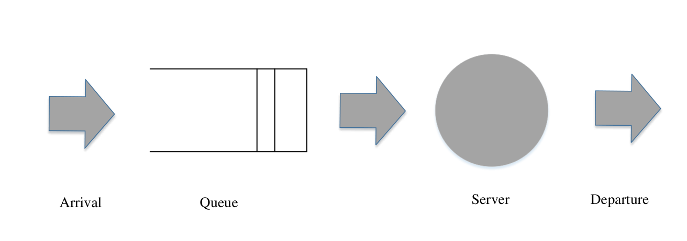
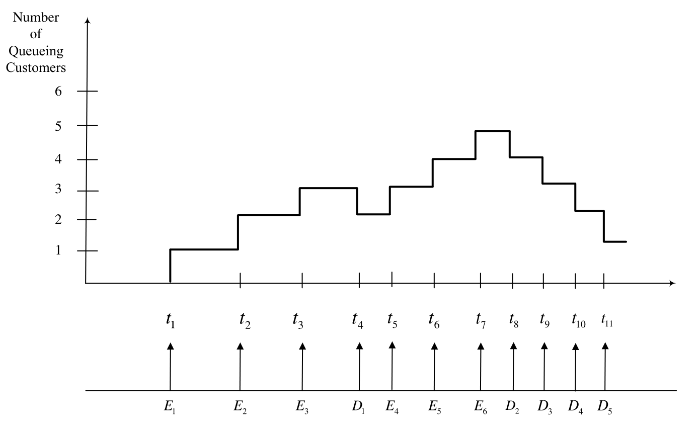
The event list schedule at any time would comprise at most three possible events: arrival, service completion (departure), and end of simulation (which could be a fixed time or a time governed by an arrival or service event, e.g., the completion of a certain number of services). If the system state is the number of customers in the system, then the state increases by one with an arrival event denoted by \(E_i\) and decreases by one with a service completion or departure event denoted by \(D_i\). Figure 2.2 illustrates a possible sample path or realization for the queue, where the state is the number of system, and the system starts empty.
For queueing systems, typical outputs of interest include utilization (fraction of time the server or system is busy), delay in queue, total system time (also known as cycle time and flow time), number in queue, and number in system. Performance metrics include mean, median, variance, probabilities, quantiles, and other statistics derived from the output processes. These can be computed over a discrete set of the customers (e.g., average delay or mean delay) or over continuous time (e.g., average number in system or utilization).
Agent-Based Simulation
An agent is an autonomous “entity” capable of sensing its environment, including other agents, and using this information to make decisions. Agents possess attributes and a set of basic if/then rules that govern their behaviors. They may also learn (improve their understanding of other agents and the environment) and adapt their behaviors (modify their decision rules) over time, requiring some form of memory. Examples of agents include people, animals, vehicles, and organizations. The key characteristic in an ABS is the interactions of the entities (agents) significantly with other entities and with their environment.
Thus, ABS models focus on the behavior and interaction of individual agents, whereas DES models take a system-level view. Complex ABS models are typically implemented using object-oriented software (e.g., Java), where instance variables correspond to attributes and methods correspond to behaviors. While in principle ABS models can be implemented using commercial DES software packages, it may not be the most natural and user-friendly platform. Simulation packages or toolkits specifically designed for performing ABS generally require object-oriented programming, usually in Java, which can be used to model the diversity and complexity of agent behaviors. ABS platforms such as AnyLogic, MASON, NetLogo, and Repast Simphony offer robust tools for modeling complex systems. ABS has been applied to various fields, including defense, economics, epidemiology, games, homeland security, logistics, manufacturing, movies, transportation, social sciences, and supply chains.
Extended Example from Logistics Management
We illustrate DES and ABS using a warehouse management example.
Warehouse operations are analyzed by simulating dynamics on an event-by-event basis and generating comprehensive performance reports. In stochastic warehouse management systems, goods are systematically organized on storage racks while orders arrive randomly, embodying the inherent uncertainties of logistics operations. To address the escalating demand for efficient logistics, automated guided vehicles (AGVs) have been extensively deployed in intelligent warehouses as the primary mode of transportation. However, optimizing the efficiency of AGVs presents significant challenges due to high order volumes and limited spatial constraints that restrict AGV movement. The optimization of AGV operations encompasses two primary issues: scheduling, which involves the allocation of orders to AGVs within the bounds of available resources, and routing, which entails determining the most effective travel paths for AGVs to fulfill transportation requests. Traditionally, these two problems were investigated independently; however, recent studies have increasingly adopted integrated approaches that simultaneously address scheduling and routing to enhance overall system performance. The structural configuration and input parameters of these simulation models play a crucial role in the design and effectiveness of scheduling and routing algorithms for AGVs, thereby influencing the overall efficiency and responsiveness of the warehouse operations.
This DES framework is intrinsically related to ABS when considering the modeling of AGVs as autonomous agents within the simulation environment. In an ABS approach, each AGV is represented as an independent agent endowed with its own decision-making capabilities, behaviors, and interactions with other agents and the environment. This agent-centric perspective allows for more dynamic and adaptive optimization of both scheduling and routing processes. For instance, AGV agents can autonomously negotiate paths to avoid collisions, adapt to real-time changes in order volumes, and collaboratively optimize their tasks based on local information and predefined rules. By modeling AGVs as agents, the simulation can capture emergent behaviors and complex interactions that arise from the autonomous actions of individual AGVs, leading to more realistic and efficient warehouse operation simulations. Furthermore, ABS facilitates the incorporation of learning algorithms, enabling AGV agents to improve their performance over time through experience. This enhances the system’s ability to handle variability and unforeseen disruptions, thereby increasing the overall resilience and efficiency of warehouse operations. Consequently, integrating ABS with DES methodologies provides a more comprehensive and flexible framework for modeling and optimizing AGV operations, significantly enhancing the simulation’s capacity to reflect the nuanced and adaptive nature of real-world logistics environments.
In practice, orders arrive randomly and independently at the warehouse management system, each specifying a particular picking rack and a delivery location for AGVs. The arrival process of these orders must be modeled to capture the stochastic nature of order inflow. The AGV traffic network is frequently represented as a grid comprising traversable square units, each maintaining consistent size and shape. Figure 2.3 illustrates the grid-based representation of an AGV traffic network – the spatial organization and movement pathways of AGVs within the simulated warehouse environment. This grid-based framework facilitates the graphical visualization and simulation of warehouse layouts and AGV movements, ensuring systematic and efficient operations. Within this grid, each square unit accommodates only one AGV at a time, thereby preventing congestion and collisions. Specific squares are designated as berths for AGV parking prior to order assignment, picking racks where AGVs collect goods, and delivery locations where goods are dispatched to fulfill orders. Additionally, certain squares are marked as obstructed or reserved to denote areas inaccessible to AGVs due to obstacles or immovable structures, thereby enhancing the realism and accuracy of the simulation. AGVs navigate the grid by executing horizontal and vertical movements between adjacent square units, adhering to the constraints of single occupancy per square.
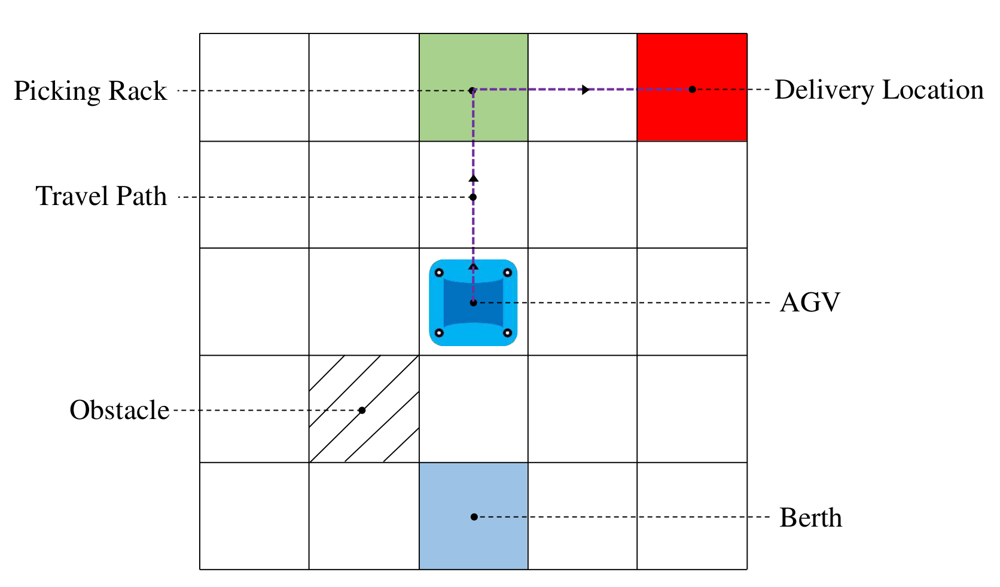
The underlying simulation model incorporates inherent randomness through the stochastic arrival of orders and employs distinct modules for scheduling and routing. The scheduling module is responsible for assigning incoming orders to available AGVs, while the routing module determines the optimal travel paths for AGV movement within the grid network. The AGVs are assumed to be homogeneous in function, with each AGV possessing sufficient battery capacity to handle all assigned orders without necessitating recharging or battery replacement during operation, as AGVs can be recharged or swapped at designated berths. This assumption simplifies the model by eliminating complexities associated with battery management and potential AGV breakdowns during transit. Each AGV operates at a constant speed, with fixed loading and unloading durations. Consequently, an AGV can exist in one of four states at any given time: (1) picking state, moving to a picking rack; (2) delivering state, moving to a delivery location; (3) parking state, awaiting new assignments post-unloading; and (4) idle state, stationed at the berth with or without new orders. The key elements of the AGV movement are illustrated in Figure 2.5.
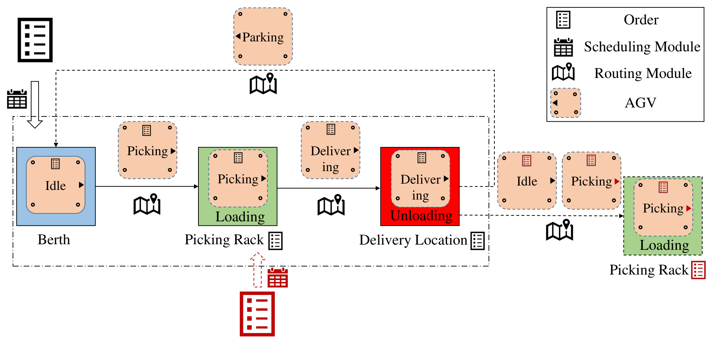
In the simulation model, the AGV scheduling module is triggered upon receiving an order or when an AGV transitions to a parking state. At each scheduling invocation, the set of available orders and the set of active AGVs are identified. The scheduling optimization problem is deterministic, with decision variables indicating the assignment of order to AGV. Following scheduling, the AGV routing module is activated after loading and unloading processes. This module comprises partial route request submodules that segment the full path into fixed-length partial routes, ensuring collision-free navigation. AGVs move only if the requested partial routes are unoccupied, with priority given based on request time. The overall system objective is to design efficient scheduling and routing policies to minimize an adjusted average order cycle time.
A natural extension of this framework is to use a world model to support AGV scheduling and routing decisions directly. In this setting, the world model serves as a structured digital representation of the warehouse environment, encoding not only the geometric layout of the traffic network, but also the operational semantics of the system, such as workstation locations, material buffers, traffic directions, equipment states, and congestion patterns. This representation enables the scheduling module to reason over a simulation-ready environment rather than over a purely abstract graph.
More specifically, the world model provides a unified state description for AGV dispatching. It can aggregate real-time information on order arrivals, AGV locations, queue lengths, machine status, and path occupancy, and map them into a form suitable for downstream optimization or learning algorithms. Based on this state, the system can evaluate alternative dispatching and routing decisions before execution, for example by estimating travel times, blocking risk, idle time, and the impact of local congestion on downstream tasks. In this sense, the world model acts as an interface between the physical warehouse and the decision layer, allowing AGV scheduling to be performed in a closed loop with prediction, simulation, and feedback.
From the perspective of simulation and optimization, this capability is particularly valuable because AGV control is inherently dynamic and spatially coupled. A world-model-based approach makes it possible to combine discrete-event simulation for order flows, agent-based modeling for AGV interactions, and optimization or reinforcement learning for dispatching and routing. As a result, the system can move beyond static shortest-path planning and instead support anticipative scheduling policies that account for future congestion, resource contention, and changing operational priorities.
Advances in MC Methods and Simulation
Recent advances in MC simulation have focused on enhancing its scalability and applicability to increasingly complex systems through the integration of high-performance computing and parallel processing techniques. MCMC and SMC methods are widely used techniques in computational statistics particularly adept at approximating complex probability distributions that are otherwise intractable to sample directly. MCMC methods leverage the construction of a Markov chain whose equilibrium distribution corresponds to the target distribution, facilitating sampling in high-dimensional spaces commonly encountered in Bayesian inference and various other statistical applications.
Additionally, adaptive MC methods that dynamically adjust sampling strategies based on the evolving simulation state have been developed to further improve efficiency and accuracy. ML has also fostered the creation of surrogate models that approximate complex simulation outputs with significantly reduced computational costs, thereby facilitating more efficient optimization and analysis of large-scale systems.
2.2 Discrete Stochastic Optimization
Discrete optimization via stochastic simulation focuses on finding the best settings for variables that take on values from a countable set, either ordered or categorical. Ordered variables can assume integer or discrete values, where the order of these values has a physical meaning. Categorical variables encompass a broader range of discrete decisions, from binary (e.g., on-off or 0-1) variables to more abstract choices, such as selecting a sequence of actions from a finite set. While ordered variables can be logically represented using binary variables, retaining their order generally makes sense when the order has physical meaning, as it can lead to more efficient search procedures when there are a large number of alternatives.
In this section, we focus on finding the best in the finite setting where the number of alternatives is small and fixed; hence, there is no “search” process in the optimization, and the optimum is found by simply ordering the given alternatives. The challenge is that the objective function is noisy, i.e., the performance of each alternative can only be estimated by sampling; thus, the “decision variables” in the resulting “optimization” problem relate to determining how to allocate a sampling budget among the alternatives. In the simulation context, this translates to deciding which alternatives to simulate next, i.e., how to allocate simulation replications. This section only considers finding the best among the alternatives. Other objectives not considered here include selecting a subset that is likely to contain the best, providing a complete ordering of the alternatives, and comparing each alternative to a known standard or control. Note that “best” will be minimum mean (think of costs) for ranking and selection but maximum mean (rewards) in the multi-armed bandit setting.
Statistical Ranking and Selection (R&S)
We consider the classical R&S problem of selecting the best alternative from a finite set of alternatives with unknown means \((\mu _1, \ldots ,{\mu _k})\), where best here will be the alternative with the smallest mean, to be denoted throughout by \(*\), i.e., \(\mu_* \leq \mu\). In the simulation context, each alternative typically represents a complex stochastic model (e.g., a queueing network), so the mean of the random output (e.g., average system time) cannot be determined analytically but can be estimated via simulation.
A R&S procedure generally consists of two phases: sampling and selection. In the sampling phase, the alternatives are sampled (simulation replications conducted to estimate output performance) until some stopping condition is satisfied. Once the sampling has concluded (all the simulation replications finished), then a single system is selected to be declared the best. The probability of correct selection (PCS) is the probability that the selected alternative corresponds to *. For example, if the sample means denoted by \(\bar{X}_i\) are used to select the best, then PCS is given by the joint probability \[{\rm{PCS}} = \mathbb{P}(\bar{X}_* \leq \bar{X}_i ~\forall i).\]
The unknown means of the alternatives are assumed to be estimated using independent random samples (simulation replications) following a joint distribution, \(({X_{1,\ell }}, \ldots ,{X_{k,\ell }}) \sim Q( \cdot ;\theta )\), where \(\ell \in \mathbb{Z}^+\) and \(\theta\) includes all unknown parameters of the sampling distribution, including \({\mu _1}, \ldots ,{\mu _k}\) and the standard deviations \({\sigma _1}, \ldots, {\sigma _k}\).
A common assumption in the R&S literature is that samples from different alternatives (i.e., \({X_{i,\ell }},{X_{j,\ell }}\) for \(i \ne j\)) follow independent normal distributions. In practice, the output of a stochastic model is often the average of many random variables (e.g., average system time of customers served), justifying the normality assumption by a CLT. If the samples are not normally distributed, batching can be used to achieve approximate normality. By the LLN, sample means converge to the true means almost surely (a.s.), i.e., \(\bar{X}_i(n) := \frac{1}{n}\sum\limits_{\ell = 1}^n {{X_{i,\ell }}} \to {\mu _i}\) a.s. \(n \to \infty\), for \(i = 1, \ldots ,k\). Thus, with an infinite simulation budget, the best alternative could eventually be selected. However, simulation replications are typically costly, often resulting in a very limited simulation budget in practice.
Traditional R&S approaches provide a statistical guarantee on PCS or other similar measures, often following the indifference-zone formulation, which specifies an indifference zone parameters \(\Delta\) and stipulates that for any suboptimal alternative \(k \ne {*}\), \[\begin{equation*} {\mu _{{*}}} - {\mu _k} \ge \Delta. \end{equation*}\] Procedures derived under the indifference-zone formulation guarantee PCS under the worst-case scenario, often referred to as the slippage configuration, which typically leads to conservative allocations resulting in more simulation replications than needed for typical problems. In particular, these procedures lead to an allocation of sampling (simulation replications) that is basically proportional to the (estimated) variance of each alternative. In other words, the optimal solution to the following pseudo-optimization problem:
\[\begin{equation*} \min _{\{ {n_k, k = 1,\ldots, K }\}} L(n_1,\ldots,n_K) {\text{~subject to~}} {\rm{PCS}} \geq 1 - \alpha, \end{equation*}\]
where \(n_i\) denotes the number of replications allocated to alternative \(i\), \(L\) denotes some linear “loss” function on the allocations, e.g., the sum, and \(\alpha \in [0,1]\), e.g., 0.05 for a 95% “confidence” level, is given by \[n_i \propto \sigma^2_i.\]
Algorithmically, R&S procedures are implemented in stages that range from two stages to fully sequential. In a two-stage procedure, the first stage is used as a “pilot” run for estimating parameters used to compute the final allocation that is realized in the second stage. A generic version of such a procedure would generally take \(n_0\) samples for each of the \(K\) alternatives in the first stage to calculate (e.g., using statistics such as the sample means and variances) a theoretically optimal \(n_i\) for the total allocation for each alternative \(i\), and then sample \((n_i-n_0)^+\) samples in the second stage, where \(x^+ \equiv \max(x,0)\) denotes the nonnegative part of the argument. On the other hand, a fully sequential procedure would allocation one simulation replication at a time, which could be based on “global” or “local” information, where the latter usually leads to some type of “greedy” algorithm; however, even these methods often begin with an initialization phase, e.g., with \(n_0\) samples for each of the \(K\) alternatives.
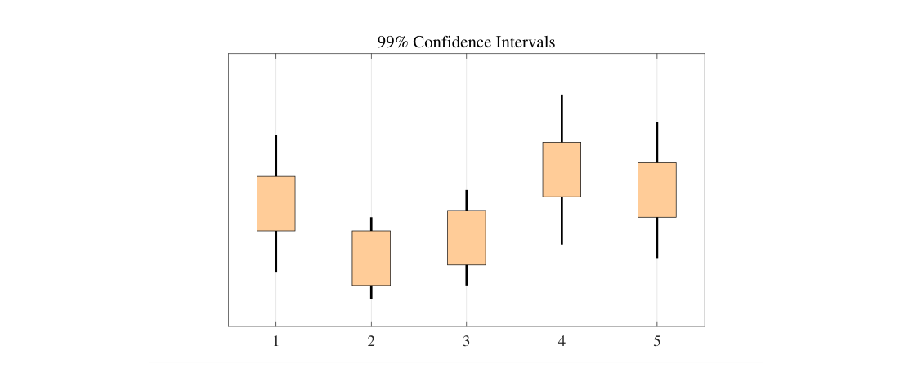
Figure 2.6 presents an example with five alternatives, where shown are the corresponding stylized box plots for the means based on \(n_0\) initial replications for each alternative. Further sampling based on estimated uncertainty would allocate more replications to alternatives \(1\), \(4\), and \(5\), to ensure the level of PCS is achieved in the worst-case scenario described earlier.
For this example, however, it appears unlikely that alternatives \(1\), \(4\), and \(5\) are better than \(2\) and \(3\), so that allocating a significant number of additional simulation replications to them would be an inefficient use of computational resources.
Rather, intuition might lead one to conclude that for the objective of determining the best (minimum mean) alternative, simulation replications should be allocated to those alternatives with either a larger variance or smaller mean. Balancing allocations based on these two factors is what is known as the “mean-variance” or “exploitation-exploration” tradeoff. Formalizing this trade-off necessitates specifying a metric to measure sampling efficiency, e.g., PCS.
Thus, an alternative approach to guaranteeing a PCS level under all possible scenarios is to consider maximizing the PCS under a computing budget constraint, which is taken up next.
Optimal Computing Budget Allocation (OCBA)
Optimal Computing Budget Allocation (OCBA) formulates the following optimization problem, with an objective of maximizing PCS by allocating a fixed total number of simulation replications \(N\) across \(K\) alternatives:
\[\begin{equation*} \max _{\{ {n_k, k = 1,\ldots, K }\}} \quad {\rm{PCS}}\quad {\text{subject to}}\quad \sum\limits_{k = 1}^K {{n_k}} = N, \end{equation*}\] where \({n_k}\) is the number of replications allocated to alternative \(k\). Under the asymptotic limit on the total budget, i.e., as \(N \rightarrow \infty\), the following OCBA sampling ratios \({r_k}:=\lim_{N \rightarrow \infty} n_k/N\) are derived:
\[\begin{equation} \frac{r_i}{r_j} = \frac{\sigma^2_i/\delta^2_i}{\sigma^2_j/\delta^2_j},~\forall i, j \neq *,~~ ~\left( \frac{r_*}{\sigma_*} \right)^2 = \sum_{i \neq *} \left( \frac{r_i}{\sigma_i} \right)^2, ~ \delta_i := \mu_i - \mu_*, \end{equation}\]
an allocation that has the following intuitive properties:
proportional to variance, except for the best;
inversely proportion to the squared difference from the best, again except for the best;
more to the best unless its variance is very small.
The allocation prescribed by (2.3) can be used to propose sequential simulation sampling procedures that can be implemented in two or more phases or fully sequentially following an initial estimation phase to estimate the means and variances.
Returning to the example shown in Figure 2.6, the allocations would be higher for alternatives 2 and 3, matching intuition if the goal is to efficiently find the best.
An essential element of OCBA is the way it captures the exploration-exploitation trade-off, which is not reflected in traditional R&S procedures, but is also explicitly considered in procedures based on multi-armed bandit models to be described shortly. However, incorporating OCBA into an actual algorithmic procedure is heuristic in nature, due to the asymptotic nature of the main theoretical basis, as the allocations are based on unknown parameters, including the means themselves.
To quantify the uncertainty of the parameter, which we will denote now by \(\theta\), suppose \(\theta\) follows a prior distribution \(F( \cdot ;{\zeta _0})\) that reflects our prior knowledge of the unknown parameter, where \({\zeta _0}\) is called a hyper-parameter. Let \({X_i}(N) = ({X_{i,1}}, \ldots ,{X_{i,{n_i}}})\) and \({{\cal E}_N} = \{ {\zeta _0},{X_1}(N), \ldots ,{X_K}(N)\}\). The posterior and predictive distributions can be calculated using Bayes rule. If the prior distribution is a conjugate prior of the sampling distribution, the posterior distribution remains in the same parametric family as the prior, denoted as \(F(\cdot ;{\zeta_N})\), where \({\zeta_N}\) is the posterior hyper-parameter. Under a conjugate prior, the information set \({\cal E}_N\) is fully determined by the posterior hyper-parameters, i.e., \({{\cal E}_N} = {\zeta _N}\).
PCS can also be expressed more generally as follows:
\[\begin{equation*} {\rm{PCS}}(\theta ) =\mathbb{P}({\mu _S} < {\mu _i},{\mkern 1mu} \forall i \ne S\mid \theta ) = \mathbb{E}[{L_{0 - 1}}({{\cal E}_N})\mid \theta ], \end{equation*}\] where \(S\) is the selection decision after allocating a total of \(N\) simulation replications, and \({L_{0 - 1}}({{\cal E}_N}) = {\bf{1}}\{ S = *\}\) is the zero-one loss after \(N\) replications. As mentioned previously, for simulation sample allocation, the loss occurs only at the end, after allocating all \(N\) simulation replications.
For a normal distribution \(N({\mu _i},\sigma _i^2)\) with unknown mean and known variance, the conjugate prior is a normal distribution \(N({\mu _{i(0)}},\sigma _{i(0)}^2)\). The posterior distribution of \(\mu_i\) is the normal distribution \(N(\mu_{i(N)}, \sigma_{i(N)}^2)\), where \[\begin{equation*} {\mu _{i(N)}} = \sigma _{i(N)}^2\left( {\frac{{{\mu _{i(0)}}}}{{\sigma _{i(0)}^2}} + \frac{{{n_i}{{\bar X}_{i(N)}}}}{{\sigma _i^2}}} \right),\quad \sigma _{i(N)}^2 = {\left( {\frac{1}{{\sigma _{i(0)}^2}} + \frac{{{n_i}}}{{\sigma _i^2}}} \right)^{ - 1}}, \end{equation*}\]
and the predictive distribution of \({X_{i,{n_i} + 1}}\) is \(N({\mu _{i(N)}},\sigma _i^2 + \sigma _{i(N)}^2)\). If \({\sigma _{i(0)}} \to \infty\), \({\mu _{i(N)}} \approx {\bar X_{i(N)}}\), corresponding to an uninformative prior.
The dynamic decisions in the simulation sample allocation problem can be formulated as a dynamic allocation and selection (A\(\&\)S) policy. The allocation policy is a sequence of mappings \({{\cal A}}( \cdot ) = ({{\cal A}_1}( \cdot ), \ldots ,{{\cal A}_t}( \cdot ))\) that sequentially allocates each sample to an alternative based on collected information, and the selection policy \(S( \cdot )\) makes a final decision to select the best alternative after all simulation replications are exhausted. The optimal A\(\&\)S policy \(({\cal A}^*,{S^*})\) satisfies a Bellman equation. The commonly assumed selection policy chooses the alternative with the largest posterior mean, although it may not be the optimal selection policy.
A dynamic sampling procedure derived from an approximate dynamic programming paradigm aims to find a suitable value function approximation (VFA) for the Bellman equation. A simple approach fixes the selection policy to choose the alternative with the largest posterior mean and one-step-look-ahead for allocating the next replication. Consequently, the VFA becomes an integral of the standard normal density over a region defined by \(k-1\) hyperplanes. Denoting the index of the posterior-best alternative at time \(t\) by \({\langle 1\rangle _t} = \arg {\max _{i}\mu _{i(t)}}\), the VFA can be further simplified to an analytical form, leading to the following asymptotically optimal allocation policy (AOAP), whose form reflects a similar (posterior) mean-variance tradeoff as the OCBA formula:
\[\begin{equation*} {{\cal A}_{t + 1}}({{\cal E}_t}) = \arg {\max _{i = 1, \ldots ,K}}{\hat V_t}({{\cal E}_t};i), \end{equation*}\] where for all \(j \ne {\langle 1\rangle _t}\), \[\begin{equation*} {\hat V_t}\left( {{{\cal E}_t};j} \right) \buildrel\textstyle.\over= \min \left\{ {\frac{{{{\left( {\mu _{{{\langle 1\rangle }_t(t)}} - \mu _{j(t)}} \right)}^2}}}{{ {\sigma _{{\langle 1\rangle }_t(t)}^2} + {{{\sigma _{j(t + 1)}^2} }}}},{{\min }_{\ell \ne {{\langle 1\rangle }_t},j}}\frac{{{{\left( {\mu _{{{\langle 1\rangle }_t(t)}} - \mu _{\ell(t)} } \right)}^2}}}{{{{ {\sigma _{{{\langle 1\rangle }_t(t)}}^2} }} + {{ {\sigma _{\ell(t)} }^2 }}}}} \right\}, \end{equation*}\] and \[\begin{equation*} {\hat V_t}\left( {{{\cal E}_t};{{\langle 1\rangle }_t}} \right) \buildrel\textstyle.\over= {\min _{j \ne {{\langle 1\rangle }_t}}}\frac{{{{\left( {\mu _{{{\langle 1\rangle }_t(t)}} - \mu _{j{(t)}}} \right)}^2}}}{ \sigma _{{\langle 1\rangle }_t(t + 1)}^2 + \sigma _{j(t)}^2 }. \end{equation*}\]
Consistency, in the context of AOAP, refers to the algorithm’s ability to correctly identify the best alternative as the number of allocated samples tends to infinity, expressed as \[\begin{equation*} {\lim _{t \to \infty }}\hat S({{\cal E}_t}) = *. \end{equation*}\] This property ensures that, given sufficient samples, AOAP reliably converges to the optimal solution, thereby mitigating the risk of misidentification inherent in finite-sample scenarios. Moreover, the sampling ratio for each alternative, \(r_k^{(t)}:= n_k/t\), asymptotically achieves the optimal large deviations decay rates for the probability of false selection:
\[\begin{equation*} \mathop {\lim }\limits_{t \to \infty } r_i^{(t)} = r_i^{\rm LD} ~\mbox{a.s.} ~\forall i, \end{equation*}\]
\[\begin{equation*} \frac{{{{\left( {{\mu_i} - {\mu_*}} \right)}^2}}}{{{{\left( {{\sigma_i}} \right)}^2}/r_i^{\rm LD} + {{\left( {{\sigma_*}} \right)}^2}/r_*^{\rm LD}}} = \frac{{{{\left( {{\mu _{\langle j\rangle }} - {\mu _*}} \right)}^2}}}{{{{\left( {{\sigma _{\langle j\rangle }}} \right)}^2}/r_{\langle j\rangle }^{\rm LD} + {{\left( {{\sigma _*}} \right)}^2}/r_*^{\rm LD}}}, ~i,j \ne *, \end{equation*}\] \[\begin{equation*} \left( \frac{r_*^{\rm LD}}{\sigma _i} \right)^2 = \sum\limits_{i \ne *} {\left( \frac{r_i^{\rm LD}}{{\sigma _i}} \right)}^2. \end{equation*}\]
Bandit Models for Ranking and Selection
The multi-armed bandit (MAB) problem has a similar overarching goal as statistical R&S, in that both aim to identify the best option (referred to as “arms” as in the old-fashioned mechanical slot machines) from a set of alternatives with unknown expected means. However, the objective of the standard MAB problem is to maximize cumulative expected rewards, whereas the objective of R&S is to maximize PCS or ensure that it exceeds a desired level. The latter can be viewed as a “special case” of the former by taking just a single binary reward at termination with no other rewards along the way, and this is known as the best-arm identification (BAI) problem in the MAB community.
Although the MAB problem is described in terms of rewards, with the goal is to choose a sequence of arms \(A_1, A_2, \ldots, A_N\) to maximize \[\mathbb{E}\left[\sum_{t=1}^N \mu_{A_t} \right],\] the standard solution approach is to analyze the expected cumulative regret after \(N\) “pulls” of the arms, as defined by
\[\begin{equation*} R(T) =\mathbb{E} \left[\mathop \sum \limits_{t = 1}^N ({\mu_*} - {\mu _{{A_t}}})\right]. \end{equation*}\]
As alluded to earlier, an optimal policy balances exploitation (sampling arms with currently high estimated means) and exploration (sampling arms with high uncertainty). A pure exploration policy would simply select the arm with the current highest estimated mean, whether using the sample mean in the frequentist setting or the mean of the posterior distribution in the Bayesian setting.
A widely used algorithm, due to its computational simplicity and hence ease of implementation, is the upper confidence bound (UCB) algorithm, which simply pulls (chooses) the arm with the highest UCB, i.e., \[A_t = \arg {\max _k} ~ {\rm UCB}_k^{(t)},\] where \({\rm UCB}_k^{(t)}\) is a running index for each arm \(k\) after \(t\) total pulls, defined as the sample mean \(\bar{X}_k(n_k^{(t)})\), where \(n_k^{(t)}\) is the number of pulls of arm \(k\) after \(t\) total pulls, plus some “fudge” factor that accounts for uncertainty: generally some multiple of either the standard deviation or the range of the arm’s (unknown) reward distribution, where the multiplicative factor reflects the weighting to balance exploitation and exploration, with a weight of zero reflecting pure exploitation. In the AI/ML community, it is commonly assumed that the range is known and often scaled to the interval [0,1], whereas in the statistics and SO community, the variance is usually assumed to be unknown and hence estimated by the sample variance. MCTS was introduced using UCB with known range, because its main motivating application was games, where if the reward was the probability of winning, then its support would be [0,1], and the UCB index for each arm could take the form \[{\rm UCB}_k^{(t)} := \bar{X}_k(n_k^{(t)}) + \sqrt{\frac{2\ln t}{n_k^{(t)}}}.\]
Although UCB is straightforward and easy to implement, better performance can often be obtained using Thompson sampling (TS), which is a Bayesian algorithm that maintains a posterior distribution over each arm’s mean reward and selects arms based on the probability that they are optimal. Specifically, TS samples \(\theta_k\) from the posterior distribution for \(\mu _k\) for each arm \(k\), where \(\theta_k\) refers to a component of the global parameter \(\theta\) defined earlier, and then the arm with the highest sampled \(\theta_k\) is chosen (pulled) for the next reward:
\[\begin{equation*} {A_t} = \arg {\max _k} {\, \theta _k}. \end{equation*}\]
While TS has demonstrated strong performance in minimizing cumulative regret in traditional MAB settings, it often underperforms in BAI or R&S tasks due to insufficient exploration of near-optimal arms. The Top-Two Thompson Sampling (TTTS) procedure enhances exploration by sampling **two candidate arms** from the posterior distribution and probabilistically selecting between them. Specifically, TTTS first draws two independent samples of the parameter vector and identifies the corresponding best arms under each. It then selects the first sampled arm with probability \(p\), and the second (distinct) one with probability \(1-p\). This approach increases the likelihood of allocating samples not only to the posterior-best arm, but also to arms with non-negligible posterior optimality, thereby improving PCS in simulation allocation tasks.
Unlike classical TS, which samples each arm in proportion to its posterior probability of being optimal, TTTS explicitly introduces randomized competition between the top candidates—whose identities are themselves random under the Bayesian model.
2.3 Continuous Stochastic Optimization
In this section, we consider the stochastic optimization problem:
\[\begin{equation} {\min _{\theta \in \Theta }}f(\theta), \end{equation}\] where \(f(\theta) =\mathbb{E}[Y(\theta;\omega )]\) for \(Y(\theta;\omega )\) a sample performance, \(\omega\) denotes the stochastic effects, and \(\Theta \subseteq \mathbb R{^d}\) is a continuous parameter space. The objective is to find an optimal solution
\[\begin{equation*} {\theta^*} \in \arg {\min _{\theta \in \Theta }}f(\theta). \end{equation*}\]
We focus on two iterative approaches: stochastic approximation, which uses gradient-based search (stochastic gradient descent in AI/ML), and response surface methods. Section 2.5 provides a review of the main stochastic gradient estimation techniques.
Stochastic Approximation (SA)
Stochastic Approximation is an iterative algorithm for solving (2.4) that parallels steepest descent in deterministic optimization:
\[\begin{equation} {\theta_{n + 1}} = {\Pi _\Theta }\left( {{\theta_n} - {a_n} \widehat{ \nabla f}({\theta_n})} \right), \end{equation}\]
where \({\Pi _\Theta }(\theta)\) projects \(\theta\) back into the feasible region \(\Theta\) if \(\theta \notin \Theta\), \({a_n}{\rm{ }} > {\rm{ }}0\) is the step size multiplier, \(\widehat{ \nabla f}({\theta_n})\) is an estimate of the gradient \(\nabla f({\theta_n})\). The projection operator is only required in the constrained setting, and a maximization problem would reverse the sign in (2.5). The Robbins-Monro (RM) algorithm uses an unbiased estimator for \(\nabla f(\theta)\), whereas the Kiefer-Wolfowitz (KW) algorithm employs finite-difference estimates. Under certain conditions, RM and KW have asymptotic convergence rates of \(O({n^{ - 1/2}})\) and \(O({n^{ - 1/3}})\), respectively.
The SA algorithm’s finite-time performance is discussed in the next chapter in AI/ML settings, but the choices of step-size sequence \(\{a_n\}\), gradient estimator \(\widehat{ \nabla f}({\theta_n})\), and projection operator \({\Pi _\Theta }\) significantly impact the algorithm’s performance, as does the perturbation size sequence for the finite-difference estimates in the KW algorithm. (Stochastic) gradient estimation techniques will be described in Section 2.5. We briefly discuss the other factors that influence SA performance here.
It is well known that the sequence \(\{a_n\}\) often requires tuning in practical implementation, because if \({a_n}\) is too large, the algorithm may oscillate without approaching the optimum \({\theta^*}\), whereas if \({a_n}\) is too small, convergence is slow, and the iterates may barely move.
Adaptive step-size rules can be used to mitigate sensitivity to the step-size sequence. For example, in the scalar case \(d\)=1, Kesten’s rule decreases the step size only when there is a directional change in the iterates, i.e., \(\left( {{\theta_{n + 1}} - {\rm{ }}{\theta_n}} \right)\left( {{\theta_n}{\rm{ }} - {\rm{ }}{\theta_{n - 1}}} \right){\rm{ }} < {\rm{ }}0\). In the multi-dimensional case \(d>1\), directional change can be assessed via the inner product \(\langle \theta_{n+1} - \theta_n,\, \theta_n - \theta_{n-1} \rangle < 0\). This adaptive step size maintains momentum when iterates move in the same direction, indicating they may be far from the optimum. An extension of this idea is to increase the step size to speed up convergence when consecutive errors in estimates have the same sign. Another alternative is to mimic the deterministic Newton-Raphson method by estimating the inverse Hessian.
Iterate averaging is a commonly employed technique for enhancing the robustness in estimating the optimal solution. This approach combines larger step-sizes with averaging a subset of the most recent iterates that is returned as estimated optimum, thus decreasing reliance on the last iterate. Easy to implement, its robustness includes reduced sensitivity to the initial step size choice. Under appropriate conditions, iterative averaging exhibits \(O({n^{ - 1/2}})\) asymptotic convergence rate.
A generalization of iterate averaging is the robust stochastic approximation (RSA) algorithm, which uses the step-size sequence \(a_n\) for weighting the iterates. Another generalization introduces a function into the objective function, acting as a regularization term to prevent the next iterate \(\theta_{n+1}\) from being too far from \(\theta_{n}\).
Early asymptotic theory for SA assumed the the objective function satisfy specific global conditions such as monotonicity in the original root-finding problem and convexity for optimization. Relaxations include only requiring such conditions to hold within a compact set containing the optimum, allowing the projection operator to be used adaptively in the SA algorithm, even for an unconstrained optimization problem. In practice, the projection set \(\Theta\) must be chosen to include the (unknown) optimal solution \(\theta^*\); however, making \(\Theta\) much larger than necessary can slow convergence by enlarging the search space. Adaptively increasing the search space can lead to provable convergence with an appropriate projection operator, such as adaptively projecting the iterates onto an increasing compact set.
Finite difference gradient estimates used in KW-type SA algorithms become computationally expensive in high dimensions, since the computational cost grows linearly with the parameter dimension. Simultaneous Perturbation Stochastic Approximation (SPSA) requires only two estimates of the objective function to approximate the gradient, making the computational cost independent of the parameter space dimension.
Response Surface Methods
Response surface methods are typically used in continuous optimization problems to learn input–output relationships and approximate the underlying simulation with a surface, known as a meta model or surrogate model. This functional form allows the use of powerful derivative-based optimization techniques. Response surface methods are referred to in the literature as multi-disciplinary design optimization, metamodel-based optimization, and sequential parameter optimization, and were initially developed for experimental design in physical processes.
Different response surface algorithms vary in several ways: the choice between regression and interpolation; the nature of the functional form used for approximation (polynomials, splines, kriging, radial basis functions, neural networks); the method for determining the number and location of new samples; the approach to updating the response surface. RSM approaches can build effective surrogate models in local regions and use these models sequentially to guide the search; construct surrogate models for the entire parameter space using space-filling designs, and then sample in areas where finding better solutions is likely.
To address SO problems, a two-phase sequential response surface methodology (RSM) was proposed:
Phase I (iterative): Build a first-order model using samples from a design of experiments. Based on a gradient estimate derived from the first-order fitted surface, move in an improving direction. Repeat until the estimated gradient was close to zero.
Phase II: Construct a more detailed quadratic model to derive a final estimated optimum.
Trust region methods can be used to implement sequential RSM by controlling the region of approximation and providing update criteria for surrogate models, aiding in analyzing convergence properties. Once a metamodel or response surface \(f\) is built around a trust region center \({\theta_i}\), trust region algorithms involve solving the trust-region subproblem \(\min f({\theta_i} + s)\) subject to \(s \in B({\theta_i},\Delta )\), where \(B\) is a ball defined by the center-radius pair \(({\theta_i},\Delta )\) and criteria for updating the trust region center and radius are well-defined.
Because sequential RSM is a gradient-based search method, it is prone to getting caught in local optima, so an alternative approach is to build a global response surface sequentially, for which Bayesian methods are well suited, most commonly implemented using techniques such as kriging/Gaussian process regression. Subsequent samples are chosen based on an improvement metric to balance exploitation and exploration. Specific metrics include expected improvement, expected value of information, knowledge gradient, most probable improvement, and maximum information gain.
2.4 Markov Decision Processes
Markov decision processes provide a formal mathematical framework for modeling sequential decision-making under uncertainty. A decision maker chooses an action, receives a reward (or incurs a cost), and then the system state transitions stochastically, with its dynamics depending only on the current system state and the chosen action. This is repeated until the end of the problem horizon. Formally, an MDP is defined by a tuple \((S, A, P, R)\), where \(S\) is a set of states, \(A\) is a set of actions, \(P(s' \mid s, a)\) denotes the transition probability of moving from state \(s\) to state \(s'\) after taking action \(a\), and \(R(s, a)\) is the reward function that specifies the immediate (one-period) reward received for performing action \(a\) in state \(s\). A more general MDP model would take the reward as random and depending on the next state. For simplicity of exposition, we assume both state and action spaces are finite, and time-homogeneity for all of the underlying model parameters such as the feasible action space and one-period reward.
A policy \(\pi: S \rightarrow A\) is a mapping from states to actions, specifying what action to take in a given state. This definition provides a deterministic policy, whereas a randomized policy would map to a probability distribution over the set of actions, for which we would write \(\pi(a|s)\) as the probability of taking action \(a\) in state \(s\). Solving an MDP model means finding a policy that optimizes some function of the cumulative rewards.
We consider the setting of finding an optimal policy \(\pi^*\) that maximizes the expected value of the cumulative discounted reward over time starting from initial state \(s_0\), defined by \[\sum_{i=0}^T \gamma^i R(s_{i},\pi(s_{i})),\] where \(s_i\) is the state in period \(i\), \(\gamma \in [0,1]\) is the discount factor, and \(T\) is the time horizon, which could be finite or infinite, fixed or random (e.g., a stopping time). Another extension is the initial state specified by a distribution.
If all the components of the MDP model are known – most importantly the transition dynamics and reward function, then dynamic programming methods can be used to solve for the optimal solution in finite-horizon problems.
Henceforth, we consider infinite-horizon problems, where methods such as value iteration and policy iteration are used, which rely on recursions based on the Bellman equation for the value function, which is defined as follows for a fixed policy \(\pi\): \[V^\pi(s) = E \left[ \sum_{i=0}^{\infty} \gamma^i R(s_{i},\pi(s_{i})) \right],\] for initial state \(s_0 = s\). The Bellman equation provides the following recursive relationship for \(V^{\pi}\): \[\begin{equation} V^\pi(s) = R(s,\pi(s)) + \gamma \sum_{s^\prime \in S} P(s^\prime \mid s,\pi(s)) V^\pi(s^\prime), ~\forall s \in S, \end{equation}\] where \(V^\pi(s)\) represents the expected cumulative reward starting from state \(s\) and following policy \(\pi\). For a randomized policy, the Bellman equation would be the following: \[\begin{equation} V^\pi(s) = \sum_{a \in A} \pi(a \mid s) \left[ R(s,a) + \gamma \sum_{s^\prime \in S} P(s^\prime \mid s,a) V^\pi(s^\prime) \right], ~\forall s \in S. \end{equation}\]
The optimal value function is given by \[\begin{equation} V^*(s) = \max_{\pi \in \Pi} V^{\pi}(s), ~\forall s \in S, \end{equation}\] where \(\Pi\) is the set of feasible policies, and an optimal policy must then satisfy \[\pi^*(s) \in \arg\max_{\pi \in \Pi} V^{\pi}(s), ~\forall s \in S.\]
An important concept in RL is the Q-function, which represents the expected return of taking action \(a\) in state \(s\), and then following the optimal policy thereafter, defined by \[Q(s,a) = R(s,a) + \sum_{s^\prime \in S} P(s^\prime \mid s,a) \gamma V^*(s^\prime), ~\forall s \in S.\] Using this definition, the optimal value function can be expressed as \[V^*(s) = \max_{a \in A} Q(s,a), ~\forall s \in S,\] and the optimal policy \(\pi^*(s)\) can be expressed as selecting the action that maximizes the Q-value: \[\pi^*(s) \in \arg\max_{a \in A} Q(s, a), ~\forall s \in S.\]
To solve for the optimal policy, two widely-used methods are value iteration and policy iteration. Value iteration is an iterative approach that finds the optimal value function \(V^*(s)\) by repeatedly updating the value function based on the finite-horizon Bellman optimality equation, essentially carrying out dynamic programming. At each iteration \(k\), the value of a state is updated according to (cf. (2.6) & (2.8)) \[V_{k+1}(s) = \max_{a \in A} \left[ R(s,a) + \gamma \sum_{s^\prime \in S} P(s^\prime \mid s,a) V_k(s^\prime) \right], ~\forall s \in S,\] continuing the iteration until the values converge to within a small threshold, at which point the optimal value function \(V^*(s)\) is found. Once the value function converges, the optimal policy \(\pi^*\) can be derived by selecting the action that maximizes the expected value at each state: \[\pi^*(s) \in \arg\max_{a \in A} \left[ R(s,a) + \gamma \sum_{s^\prime \in S} P(s^\prime \mid s,a) V^*(s^\prime) \right], \forall s \in S.\]
Policy iteration takes a different approach by alternating between two steps, policy evaluation and policy improvement, as follows:
Policy evaluation: The value function \(V^\pi(s)\) for a given policy \(\pi\) is computed by solving the Bellman equation – either (2.6) or (2.7), depending on the type of policy – for each state \(s \in S\).
Policy improvement: The policy is updated by choosing the action that maximizes the expected return for each state: \[\pi^\prime(s) \in \arg\max_{a \in A} \left[ R(s,a) + \gamma \sum_{s^\prime \in S} P(s^\prime \mid s,a) V^\pi(s^\prime) \right],~\forall s \in S.\]
The policy improvement step ensures that the new policy \(\pi^\prime\) is at least as good as the old policy \(\pi\), and if no further improvement is possible, the algorithm terminates. Since each iteration improves the policy and there are a finite number of stationary policies, the process is guaranteed to converge to the optimal policy \(\pi^*\) in a finite number of iterations.
2.5 Stochastic Gradient Estimation
The gradient estimator is key to the success of an SA algorithm used for optimization. The most readily available gradient estimates employ finite differences, requiring only performance estimates and no knowledge of the underlying system, as in black-box simulation. However, finite-difference-based gradient estimates can be noisy if the measurements are highly volatile and become computationally expensive in high dimensions, as the number of samples or simulation replications needed to obtain a single estimate grows linearly with the parameter dimension. Moreover, finite-difference estimators are generally biased. In this section, we discuss the main “direct” stochastic gradient estimation techniques that provide unbiased estimators, specifically approaches based on perturbation analysis, the likelihood ratio method, and the method of weak derivatives. Many of these require just a single simulation replication to provide both estimates of the output performance and its gradient.
Stochastic gradient estimation methods aim to estimate the gradient of an output performance from a stochastic model. We focus on outputs that are expected values. Specifically, for the SO problem (2.4), we wish to estimate
\[\begin{equation*} {\nabla _\theta } \mathbb{E}[Y(\theta ;\omega )] = \left( {{{\partial \mathbb{E}[Y(\theta ;\omega )]} \over {\partial {\theta _1}}}, \ldots ,{{\partial \mathbb{E}[Y(\theta ;\omega )]} \over {\partial {\theta _d}}}} \right). \end{equation*}\]
The infinitesimal perturbation analysis (IPA) or pathwise gradient is given by \({\nabla _\theta }Y(\theta ;\omega )\). Under appropriate conditions justifying the interchange of differentiation and integration, the IPA estimator is unbiased, i.e.,
\[\begin{equation*} \mathbb{E}[{\nabla _\theta }Y(\theta ;\omega )] = {\nabla _\theta } \mathbb{E}[Y(\theta ;\omega )]. \end{equation*}\]
Sufficient conditions required for unbiasedness stem from the application of the dominated convergence theorem, which for the IPA estimator generally means that the performance function \(Y( \cdot ;\omega )\) must be Lipschitz continuous almost surely. When \(Y( \cdot ;\omega )\) is discontinuous, smoothed perturbation analysis (SPA) can be applied to derive an unbiased gradient estimator by conditioning on certain quantities to smooth out the discontinuities. Viewing the randomness or sample path \(\omega\) as a sequence of \(m\) input random variables \(X = ({X_1}, \ldots ,{X_m})\), we rewrite the output \(Y(X(\theta);\theta)\) as a function of input variables \(X\) in place of the dependence on \(\omega\) (and reverse the order of the arguments), and the IPA estimator is given by the chain rule:
\[\begin{equation} \nabla_{\theta}Y(X;\theta) = \left. \sum\limits_{j = 1}^m {{{\partial Y(x;\theta )} \over {\partial {x_j}}}} \right|_{x = X} {{\partial {X_j}} \over {\partial \theta }} + {{\partial Y(X;\theta )} \over {\partial \theta }}, \end{equation}\]
where the random variable derivatives \({{\partial {X_j}} \over {\partial \theta }}\) are defined by
\[\begin{equation*} {{\partial {X_j}} \over {\partial \theta }} = - {{{{\partial F_j({X_j};\theta )} \over {\partial \theta }}} \over {f_j({X_j};\theta )}},\quad j = 1, \ldots ,m, \end{equation*}\]
with \({F_j}( \cdot ;\theta )\) and \({f_j}( \cdot ;\theta )\) denoting the c.d.f. and p.d.f. of \(X_j\).
As mentioned earlier, for the IPA estimator to be unbiased, the performance function generally needs to be Lipschitz continuous. To demonstrate where this fails and the IPA estimator is biased, consider the output performance function \(Y=1\{ {X_1} + {X_2} \le 0\}\). The indicator function introduces a discontinuity, making the IPA estimator biased. By conditioning on \(X_2\), SPA can be applied to address the discontinuity as follows:
\[\begin{align*} \nabla_{\theta} \mathbb{E}[Y(X_1,X_2;\theta)] & = {{\partial \mathbb{E}[\mathbb{E}[1\{ {X_1} + {X_2} \le 0\} |{X_2}]]} \over {\partial \theta }} = {{\partial \mathbb{E}[{F_1}( - {X_2};\theta )]} \over {\partial \theta }} \\ & = \mathbb{E} \left[ {{{\partial {F_1}( - {X_2};\theta )} \over {\partial \theta }} - {f_1}( - {X_2};\theta ){{\partial {X_2}} \over {\partial \theta }}} \right], \end{align*}\] where the second equality assumes \(X_1\) is independent of \(X_2\), so that an unbiased SPA estimator is given by \[\begin{equation*} {{\partial {F_1}( - {X_2};\theta )} \over {\partial \theta }} - {f_1}( - {X_2};\theta ){{\partial {X_2}} \over {\partial \theta }}. \end{equation*}\]
More generally, SPA is an application of conditional Monte Carlo, where the IPA estimator \(dY/d\theta\) is biased, usually due to a discontinuity caused either by the form of the output function or from the underlying dynamics of the system. By selecting an appropriate \(X\), which could denote a vector of random variables in the system, the SPA estimator differentiates the conditional expectation \(\mathbb{E}[Y|X]\). The success of SPA depends on finding an appropriate \(X\) such that the resulting conditional expectation derivative \(d\mathbb{E}[Y|X]/d\theta\) is sufficiently smooth to be unbiased and can be efficiently estimated.
Next we consider the likelihood ratio (LR) method, also known as the score function method. Suppose the (joint) p.d.f. of \(X\) depends on the parameter \(\theta\), i.e., \(f(\cdot; \theta)\), but the support of \(f\) denoted by \(\Omega\) does not depend on \(\theta\).
Then the gradient of \(\mathbb{E}[Y]\) is given by (under appropriate conditions justifying the interchange of differentiation and integration)
\[\begin{align*} {\nabla _\theta }\mathbb{E}[Y(X)] & = {\nabla _\theta }\int_\Omega Y (x)f(x;\theta ){\mkern 1mu} dx = \int_\Omega Y (x){\nabla _\theta }f(x;\theta ){\mkern 1mu} dx \\ &= \int_\Omega Y (x){\nabla _\theta }\ln f(x;\theta )f(x;\theta ){\mkern 1mu} dx =\mathbb{E}[Y(X){\nabla _\theta }\ln f(X;\theta )], \end{align*}\]
so the LR gradient estimator is given by
\[\begin{equation} Y(X){\nabla _\theta }\ln f(X;\theta ). \end{equation}\]
Because the parameter \(\theta\) does not directly appear in \(Y\), the LR estimator (2.10) will be unbiased even if \(Y\) is not well behaved, e.g., if \(Y\) is discontinuous. When the parameter \(\theta\) appears directly in \(Y\), a method called push-out LR can be applied if a suitable change of variables can be found. We illustrate with the simplest example: Consider the output \(Y=1\{ {X_1} + \theta \le 0\}\), for which LR cannot be directly applied (nor IPA, since the function is discontinuous). By a change of variable \({X_2} = {X_1} + \theta\), the density of the new random variable \({X_2}\) is \({f_2}(x - \theta ;\theta )\). Then the LR method can be applied to the new output function \(Y = 1\{ {X_2} \le 0\}\), as the parameter \(\theta\) has been pushed out of the original output function \(Y\) and into the input density.
If \(\theta\) appears in both the input distribution and the output performance, where both are sufficiently well behaved, then a combined IPA/LR estimator can be used, which would simply add the two estimators given by (2.9) and (2.10). However, in the case where this is not the case, e.g., either the output function or input density is discontinuous with respect to the parameter (or the support depends on the parameters), then other methods must be used, such as SPA discussed earlier or the generalized likelihood ratio (GLR) method, which is an extension of the combined IPA/LR estimator and can also be viewed as a generalized version of the push-out LR method. The GLR method assumes an output function of the following form: \[Y = \varphi (g(X;\theta )),\] where \(g\) is an \(m\)-dimensional vector of twice-differentiable functions and \(\varphi\) is a measurable function that is not necessarily continuous.
Then the GLR estimator is the following extension of the LR estimator:
\[\begin{equation} \varphi (g(X;\theta )) \left( {\nabla _\theta }\ln f(X;\theta ) + d(X;\theta) \right), \end{equation}\]
\[\begin{eqnarray*} d(x;\theta) &=& \sum\limits_{i = 1}^m {e_i^T} {J_g^{-1}}(x;\theta) \left( \frac{\partial {J_g}(x;\theta )}{\partial {x_i}} \right) J_g^{-1}(x;\theta) \frac{\partial g(x;\theta )}{\partial \theta } \\ & & \hspace{-40pt} - {\rm trace} \left( J_g^{-1}(x;\theta )\frac{\partial J_g(x;\theta )}{\partial {\theta}} \right) -{\left[ {{J_g^{-1}}{{(x;\theta )}}{{\partial g(x;\theta )} \over {\partial \theta }}} \right]^T} {\nabla_x }\ln f(x;\theta), \\ & & {{\partial g(x;\theta )} \over {\partial \theta }} = {\left( {{{\partial {g_1}(x;\theta )} \over {\partial \theta }},{{\partial {g_2}(x;\theta )} \over {\partial \theta }},...,{{\partial {g_m}(x;\theta )} \over {\partial \theta }}} \right)^T}, \end{eqnarray*}\]
where \({J_g}(x;\theta )\) denotes the \(m \times m\) Jacobian matrix of vector \(g\) with respect to the vector \(x\), \(e_i\) represents the unit vector in the \(i\)-th direction, and \({{\partial {J_g}(x;\theta )} \over {\partial z}}\) denotes the matrix obtained by differentiating each element of \({J_g}(x;\theta )\) with respect to \(z\) individually.
The final stochastic gradient estimation approach we consider is the method of weak derivatives (WD), also known as measure-valued differentiation, where the setting is the same as that of the LR method, i.e., with (joint) input p.d.f. \(f(\cdot; \theta)\) and the support of \(f\) not depending on \(\theta\). Again following the first steps used in deriving the LR estimator by passing the gradient operator inside the expectation (under appropriate conditions justifying the interchange of differentiation and integration):
\[\begin{align*} {\nabla _\theta }\mathbb{E}[Y(X)] & = {\nabla _\theta }\int_\Omega Y (x)f(x;\theta ){\mkern 1mu} dx = \int_\Omega Y (x){\nabla _\theta }f(x;\theta ){\mkern 1mu} dx \\ &= \int_\Omega Y (x){c(\theta)[f^{(+)}(x;\theta) - f^{(-)}(x;\theta)] } dx \\ & = c(\theta) \mathbb{E}[Y(X^{(+)})-Y(X^{(-)})], ~~X^{(\pm)} \sim f^{(\pm)}(\cdot; \theta), \end{align*}\]
where \(f^{(\pm)}\) are (joint) p.d.f.(s) and the triplet \((c(\theta), f^{(+)}(\cdot; \theta), f^{(-)}(\cdot; \theta))\) is called the weak derivative, which always exists (e.g., Hahn-Jordan decomposition) but is not unique; in fact, there are an infinite number of weak derivatives. Then the WD gradient estimator is given by
\[\begin{equation} c(\theta) [Y(X^{(+)})-Y(X^{(-)})]. \end{equation}\]
Again, because the parameter \(\theta\) does not directly appear in \(Y\), the WD estimator (2.12) will be unbiased even if \(Y\) is not well behaved, e.g., if \(Y\) is discontinuous.
We conclude this section with a simple queueing example to illustrate the IPA, LR, and WD estimators.
Single-Server Queue Example
Consider a single-server queue, where \({A_i}\) denotes the interarrival time between the \((i\)-\(1)\)th and \(i\)th customers and \(X_i\) is the service time of the \(i\)th customer. The output performance of interest is \(Y_i\), the system time of the \(i\)th customer, comprising both queueing and service time.
Assume the system starts empty and operates under the first-come, first-served (FCFS) queue discipline, the completion times of the first \(N\) customers are determined solely by their arrival times and service durations, and the system time of a customer satisfies the recursive Lindley equation:
\[\begin{equation*} {Y_{i + 1}} = {X_{i + 1}} + ({Y_i} - {A_{i + 1}})^+. \end{equation*}\]
Furthermore, assume the arrival process is independent of the service times, which themselves are mutually independent but not necessarily identically distributed, with p.d.f. and c.d.f. for \(X_i\) given by \(f_i\) and \(F_i\), respectively. If \(\theta\) is a parameter within the service time distribution(s), then the IPA estimator can be derived by differentiating the above Lindley equation with respect to \(\theta\):
\[\begin{equation} {{d{Y_{i + 1}}} \over {d\theta }} = {{d{X_{i + 1}}} \over {d\theta }} + {{d{Y_i}} \over {d\theta }} \cdot {\bf{1}}\{ {Y_i} \ge {A_{i + 1}}\}. \end{equation}\]
For the average system time over the first \(N\) customers denoted by \(\bar{Y}_N = {1 \over N}\sum\limits_{i = 1}^N {{Y_i}},\) the IPA estimator for the derivative of the average system time is given by
\[\begin{equation} \nabla_{\theta} \bar{Y}_N = {1 \over N}\sum\limits_{i = 1}^N {{{d{Y_i}} \over {d\theta }}} = {1 \over N}\sum\limits_{m = 1}^M {\sum\limits_{i = {n_{m - 1}} + 1}^{{n_m}} {\sum\limits_{j = {n_{m - 1}} + 1}^i {{{d{X_j}} \over {d\theta }}} } } , \end{equation}\] where \(M\) denotes the number of observed busy periods, and \(n_m\) represents the index of the last customer served in the \(m\)-th busy period (with \({n_0} = {\rm{ }}0\) and \({n_M}{\rm{ }} = {\rm{ }}N\) for \(M\) complete busy periods). The implementation of this IPA estimator requires maintaining two ongoing quantities: one corresponding to Equation (2.13) and another for the summation in Equation (2.14). Therefore, the additional computational overhead is minimal, and no modifications to the underlying simulation are necessary.
Again, assuming the interarrival times and service times are independently generated, the joint p.d.f. of the input random variables is the product of the p.d.f of the arrival time distribution and the individual service time distributions, given by
\[\begin{equation*} g({A_1}, \ldots ,{A_N})\prod\limits_{i = 1}^N {{f_i}} ({X_i};\theta ), \end{equation*}\] where \(g\) represents the joint p.d.f. of the arrival times. Since \(g\) doesn’t depend on \(\theta\), the LR gradient estimator is given by
\[\begin{equation*} \left. \nabla_{\theta} \bar{Y}_N \right|_{{\rm{LR}}} = \bar{Y}_N \sum\limits_{i = 1}^N {{{\partial \ln {f_i({X_i};\theta )}} \over {\partial \theta }}} . \end{equation*}\]
The WD gradient estimator is similarly derived by applying the product rule of differentiation:
\[\begin{eqnarray*} \left. \nabla_{\theta} \bar{Y}_N \right|_{{\rm{WD}}} &=& \sum\limits_{i = 1}^N {{c_i}} (\theta )\left[ {\bar{Y}_N}({A_1}, \ldots ,{A_N}, X_1, \ldots , X_i^{( + )}, \ldots , X_N) \right. \\ & & \left. ~~~~~~~~~~- {\bar{Y}_N}({A_1}, \ldots ,{A_N}, X_1, \ldots ,X_i^{( - )}, \ldots , X_N) \right], \end{eqnarray*}\] where \(X_i^{(\pm)}\sim f_i^{(\pm)}\) for \(i = 1, \ldots ,N\), and \(({c_i}(\theta),f_i^{(+)},f_i^{(-)})\) is a weak derivative for \({f_i}\). It is important to note that in general the implementation of the estimator requires \({2^N}\) distinct sample paths and corresponding sample performance estimates whenever the parameter \(\theta\) appears in \(N\) input random variables. However, randomization can be used to reduce the number of required sample paths.
2.6 Variance Reduction Techniques
Variance reduction techniques enhance the computational efficiency of estimation from a stochastic simulation model, in the best cases leading to orders of magnitude improvements. However, care must be taken in their application, because degradation of performance is also possible, except for the use of conditional Monte Carlo, which guarantees that one can do no worse. We end this chapter by briefly summarizing some of the most widely used approaches: antithetic variates, control variates, indirect estimation, conditional Monte Carlo, importance sampling, splitting, stratified sampling, the quasi-Monte Carlo method, and common random numbers. Common random numbers differs from the others in that it addresses comparison between outputs of two different simulation models, whereas the others aim at increasing precision of output estimates from a single simulation model. Common random numbers can generally be used in conjunction with any of the others, which themselves may sometimes also be combined.
For each of the variance reduction techniques, we provide the main idea and an example (or two) based on the FCFS single-server queue used in the previous section, where \(\bar{Y}_N\) will denote the output random variable of interest (average system time over \(N\) customers), generated by interarrival time and service time input random variables \(\{A_i, X_i\}\). Otherwise, \(Y\) denotes the “generic” output random variable, and the superscript “(\(i\))” denotes the \(i\)th simulation replication for any random variable.
Antithetic Variates
(i) Main idea: Exploit induced negative correlation by using pairs of simulation replications, generally via the random numbers, based on the following basic relationship: \[{\rm{Var}}\left( Y + Y' \right) = {\rm{Var}} Y + {\rm{Var}} Y' + 2 {\rm{Cov}} (Y,Y'),\] where the righthand side is less than the sum of the individual variances if \(Y\) and \(Y'\) are negatively correlated.
(ii) Example: Use random numbers \(U\) and \(1-U\) for the inputs in pairs, where \(U \sim U(0,1)\), rather than i.i.d. \(U\) and \(U'\). If \(\bar{Y}_N\) is a monotone function of the input random variables – as might be expected for average system time as a function of interarrival times and service times, then the paired average \((\bar{Y}_N^{(1)} + \bar{Y}_N^{(2)})/2\) using these antithetic variates is expected to have lower variance than if two independent replications were used, since \[{\rm{Var}}\left( \bar{Y}_N^{(1)} + \bar{Y}_N^{(2)} \right) < {\rm{Var}} \bar{Y}_N^{(1)} + {\rm{Var}} \bar{Y}_N^{(2)} \mbox{~if~} {\rm{Cov}}\left( \bar{Y}_N^{(1)}, \bar{Y}_N^{(2)} \right) <0.\]
(iii) Practical utility: Minimal compared to most other variance reduction techniques but easy to implement.Control Variates
(i) Main idea: Exploit strong correlation between the output random variable of interest \(Y\) (which has unknown mean) and another system random variable \(Z\) with known mean \(\mathbb{E}[Z]\), with the new control variate estimator given by \[Y - \lambda (Z -\mathbb{E}[Z]),\] which can be seen to be unbiased with variance \[{\rm{Var}}~Y + \lambda^2 {\rm{Var}}~Z -2\lambda {\rm{Cov}}(Y,Z).\] An appropriate choice of \(\lambda\) results in variance reduction, and the theoretically optimal choice is \(\lambda ^* = {{\rm{Cov}}(Y,Z)}/{\rm{Var}}~Z\) with the corresponding minimal variance \({\rm{Var}}~Y - {{{[{\rm{Cov}}(Y,Z)}]^2}} / {{\rm{Var}}~Z}\). For multiple random variables correlated with \(Y\), linear combinations can be used as control variates.
(ii) Examples: System times and service times should be highly positively correlated in a queueing system and especially for the FCFS single-server queue, so that \(\lambda\) would be positive. Under the scenario where the service times have a common mean \(\mathbb{E}[X]\), the control variate estimator using average service time as a control variate would be \[\bar{Y}_N - \lambda (\bar{X}_N -\mathbb{E}[X]).\] Other obvious possible control variates include the arrival rate and the system/server utilization. A less obvious control variate would be using the steady-state mean system time, which would be known if the arrival process were Poisson, but then finding an unbiased estimator for this known quantity would require care.
An example from finance: \(Y\) could be the payoff of an American call option with no analytical expectation, while \(Z\) could be the payoff of a European call option with a known analytical expectation. Since \(Y\) and \(Z\) are positively correlated (both depend on the underlying asset price), \(Z\) serves as an effective control variate.
(iii) Practical utility: Can be highly effective but very problem dependent, as it relies on finding a good control variate such that the correlation is both strong and well understood, as indicated by the theoretically optimal value of \(\lambda^*\) depending on \({\rm{Cov}}(Y,Z)\), which is generally unknown, and \({\rm{Var}}~Z\), which may also be unknown. In particular, if the control variate chosen is independent, then the control variate estimator would have higher variance for any nonzero \(\lambda\).Indirect Estimation
(i) Main idea: Exploit known relationship between the output random variable of interest and another system random variable. (ii) Example: Using Little’s Law for a queueing system, which relates the time average of the number-in-system process to the customer average system time. Going in the appropriate direction will decrease variance, but not vice versa, and it also depends on whether or not the arrival rate is known or must also be estimated.
(iii) Practical utility: Generally even more problem or domain dependent than most of the other techniques.Conditional Monte Carlo
(i) Main idea: Condition on one or more other random variables in the system model. Guaranteed to do no worse than the original estimator by the variance decomposition relationship: \[\begin{equation*} {\rm{Var}}~Y = \mathbb{E}[{\rm{Var}}[Y|X]] + {\rm{Var}}[\mathbb{E}[Y|X]] \ge {\rm{Var}}[\mathbb{E}[Y|X]]. \end{equation*}\] (ii) Example: To estimate the expected system time in the FCFS single-server queue, condition on the number of customers in queue (if any), say \(N_q\), and the remaining service time of the customer in service (if any), say \(S_r\), for which the conditional MC estimator would be given by \[S_r + N_q \mathbb{E}[X].\] If the service times were exponential, an even lower variance estimator would simply take the number in system that each arriving customer sees and multiply that by the mean service time \(\mathbb{E}[X]\). (iii) Practical utility: Can be highly effective but very problem dependent, as it relies on finding appropriate random variables on which to condition that leads to a conditional expectation quantity that can be easily estimated from the simulation.Importance Sampling
(i) Main idea: Change the underlying input distribution(s) and then reweight the output estimator accordingly by the likelihood ratio related to the input distributions.
(ii) Example: If the output of interest is the probability of the system reaching a huge number of customers in the system, then the obvious way to increase the frequency of this occurring is to increase the arrival rate or the service time, which is how importance sampling could be implemented in a queueing system.
(iii) Practical utility: Most useful in rare event simulation when an event is unlikely to occur in a simulation, so that the output may return 0 almost all of the time, giving deceptive confidence intervals, since the output is obviously not normal. This technique can also be used to generate multiple sample paths (simulation replications) at different input settings from the original simulation settings, again by using the likelihood ratio, and this application is sometimes known as “green simulation” for its reuse of the single sample path.Splitting
(i) Main idea: Selectively prune or split sample paths (simulation replications) according to some criteria, with the idea that pruned paths are not likely to contribute to the desired output, whereas the paths to be split are more promising. When and how to carry out the splitting is the key, and many procedures have been proposed.
(ii) Example: Using the same example as for importance sampling, where the output of interest is the probability of the system reaching a huge number of customers in the system, then intuitively splitting should occur for highly congested sample paths that are more likely to reach the large number in system, whereas paths in which the system is empty might be pruned.
(iii) Practical utility: Like importance sampling, this technique can be useful in rare event simulation, and is sometimes viewed as a type of dual or complementary approach to importance sampling.Stratified Sampling
(i) Main idea: Partition sample paths (simulation replications) into groups such that the variation within each group is relatively small, thus reducing the overall variance.
(ii) Example: Consider the FCFS single-server queue with a distribution on the initial number in system (state), e.g., 0 or 1 with equal probability. Rather than randomly sampling from this initial distribution and averaging over all replications, one could divide the total number of replications into half for each of the two initial states, and average within each set of replications (initial state 0 or state 1) and then give equal weight to compute the final overall average. In some ways, this particular example could be viewed as combining conditional Monte Carlo and quasi-Monte Carlo (to be described next), as it uses conditioning on the initial state, which is deterministically distributed rather than randomly sampled.
(iii) Practical utility: When a good stratification is available – again very problem dependent, this approach can be effective.Quasi-Monte Carlo
(i) Main idea: Rather than using i.i.d. \(U(0,1)\) random numbers, the goal is to generate “low-discrepancy” sequences deterministically, i.e., to space the points appropriately.
(ii) Example: Replace the random number generators producing the two interarrival and service time sequences with a separate quasi-MC stream for each of the two processes.
(iii) Practical utility: Effective for low-dimensional problems, but does not provide confidence intervals for the output without using the randomized form to generate independent replications, each based on a quasi-MC simulation. May also have problems with discontinuous output performance measures.Common Random Numbers
(i) Main idea: Try to use the same randomness for the same processes in different systems being compared, to induce positive correlation between the corresponding output random variables, specifically reducing the variance of the difference estimator between the two means, again based on the basic relationship used earlier for antithetic variates, expressed now as a difference rather than a sum: \[\begin{equation*} {\rm{Var}}(Y_A - Y_B) = {\rm{Var}}~Y_A + {\rm{Var}}~Y_B - 2{\rm{Cov}}(Y_A,Y_B), \end{equation*}\] where \(Y_A\) and \(Y_B\) denote the output for two different systems A and B, respectively. A confidence interval for the difference would be interpreted as there being a statistically significant difference in performance between the two systems if it did not contain 0.
(ii) Example: For the FCFS single-server queue, if we wish to compare two systems with different service time distributions but the same mean and arrival process, then common random numbers should work well by using a separate stream of random numbers for the service times and the exact same interarrival times for the arrival process, allowing perfect coupling for that process.
(iii) Practical utility: If implemented correctly, this is a particularly effective technique, but again its success can be very problem dependent. The concept of synchronization is the key to achieving positive correlation between systems being compared. Generally, this means assigning different random number generators to different processes in a system, so that when comparing multiple systems, the corresponding processes could use the same stream of random numbers to increase the likelihood of inducing positive correlation.
2.8 Industrial AI Agents for Simulation and Optimization
The methodologies reviewed in the previous sections—stochastic simulation, stochastic optimization, Markov decision processes, and gradient-based learning—provide the algorithmic foundations for a new class of intelligent industrial systems. In such systems, simulation is not merely a tool for offline analysis, and optimization is not limited to one-shot decision support. Rather, they are embedded into an operational loop in which AI agents continuously perceive the factory state, reason over structured industrial data, call specialized optimization and prediction modules, and generate or recommend actions under safety constraints.
A central insight emerging from recent industrial practice is that strong foundation models alone are insufficient for reliable deployment in manufacturing environments. What is equally important is an engineering layer that connects models to plant data, operational tools, expert knowledge, execution logic, and safety constraints. This layer can be viewed as an agent harness: a system-level infrastructure that enables AI agents to interact with industrial environments in a controllable, auditable, and reusable way. In this perspective, the agent is not a standalone large language model, but a composite decision-making system built on top of simulation, optimization, and structured operational knowledge.
This section presents three complementary examples of such industrial AI systems. The first is an industrial agent harness for digital factories, which integrates data modeling, digital twins, hybrid agents, skills, and safety mechanisms into a unified framework. The second is a PMC (production planning and control) agent, which illustrates how AI agents can support planning tasks in high-mix, low-volume, and highly customized manufacturing settings. The third is a world-model-based layout generation framework, which shows how simulation-ready digital factory environments can be constructed directly from heterogeneous engineering inputs. Together, these examples show how the concepts developed throughout this chapter can be assembled into deployable industrial intelligence systems.
2.8.1 Industrial Agent Harness for Digital Factories
A major obstacle to deploying AI agents in industrial settings is not merely model capability, but the lack of a reusable infrastructure that connects models to factory environments. In many plants, data remain fragmented across operational technology (OT) and information technology (IT) systems, interfaces differ from one site to another, expert knowledge is tacit rather than formalized, and the cost of initializing digital models is substantial. As a result, industrial AI solutions often remain project-specific and difficult to scale across factories. The industrial agent harness addresses this problem by providing a common layer that standardizes data access, context construction, tool invocation, knowledge encapsulation, and operational safeguards.
The proposed harness is built on several principles. First, the agent is viewed as the combination of a model and a harness, where the model may be replaced over time, but the harness provides the persistent engineering interface to the factory. Second, the overall architecture is hybrid: routine and well-structured tasks are handled by deterministic modules such as rule engines, operations research solvers, reinforcement learning policies, or specialized machine learning models, while large language models are reserved for intent understanding, cross-module coordination, exception handling, and explanation. Third, the system relies on structured workflow orchestration, in which predefined execution graphs support routine operation and dynamic replanning is triggered when disturbances or abnormal events arise. Fourth, expert knowledge is encapsulated in reusable skills, which are loaded on demand rather than injected into the model context all at once.
From the agent’s perspective, effective industrial decision-making requires at least three layers of context. The first is a static model layer, which describes the relatively persistent structure of the plant, including equipment, process flow, and topology. The second is a real-time state layer, which captures the current operating condition of the system, such as machine status, inventory levels, production progress, or sensor measurements. The third is a historical experience layer, which stores past decisions, calibrated parameters, and successful recovery paths. Together, these three layers provide the agent with both perception and memory: the static layer tells the agent what the factory is, the dynamic layer tells it what is happening now, and the historical layer tells it what has worked before.
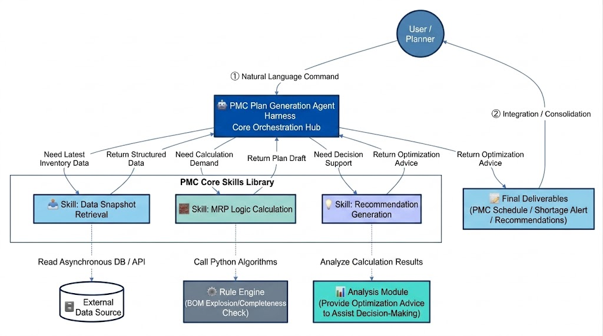
Constructing this context requires a gradual modeling pipeline. The first stage converts engineering drawings such as CAD files into structured representations of factory assets and spatial layouts. The second stage connects physical devices through protocol adaptation and data channel binding. The third stage introduces production data, including bills of materials, process parameters, logistics information, and operational targets. The fourth stage performs simulation-based calibration and validation so that the resulting digital twin can serve as a reliable baseline for downstream decision support and agent execution. This four-stage process is important because it reduces the deployment barrier: rather than demanding a fully detailed digital factory from the outset, it allows the agent environment to be built incrementally.
Once the plant representation is available, different classes of agents can be organized into a hybrid decision architecture. Rule-based agents handle threshold-triggered monitoring, alarms, refilling logic, and compliance checks. Operations research modules solve structured planning problems such as production scheduling and routing. Reinforcement learning agents adapt control policies in dynamic settings, for example by adjusting local dispatching or pacing decisions after disturbances. Specialized machine learning models support tasks such as predictive maintenance and visual inspection. The large language model plays a different role: it interprets human intent, synthesizes information across plant status, order demand, inventory, and capacity, coordinates the invocation of specialized modules, and explains the resulting decisions in a human-readable form. In other words, the LLM does not replace optimization or simulation; rather, it orchestrates them.
A key mechanism in this architecture is the skill system. System skills encode how the factory is represented and how the agent ecosystem operates, including data model structure, topology semantics, protocol configuration, and coordination logic. Business skills encode domain-specific procedures, such as scheduling rules, fault diagnosis workflows, traceability requirements, operating constraints, and calibration parameters. To manage context efficiently, skills are loaded progressively. At startup, only compact skill descriptions are retained. Full instructions and associated references are injected into the model context only when a task activates the corresponding skill, and they may be released afterward. This design reduces context overload while preserving access to detailed industrial knowledge when needed.
The harness also requires workflow management and memory control. A directed acyclic graph (DAG) can serve as the backbone for normal process execution, linking constraint checking, scheduling, simulation-based validation, and reporting into a persistent pipeline. When exceptions occur, the large language model can intervene, diagnose the disruption, reorganize the workflow, and resume execution from checkpoints. Because industrial agents often run continuously, context management becomes essential: recent goals and critical interaction history should remain directly available; older decisions can be compressed into structured summaries; raw logs and sensor streams should be offloaded to external storage while preserving retrieval paths. This layered memory strategy is necessary to avoid context saturation during long-horizon operation.
Finally, no industrial agent architecture is viable without a strong safety harness. In manufacturing environments, incorrect actions may damage equipment, waste production, or create hazards for human operators. For this reason, the architecture adopts multiple safety layers. One layer is progressive trust, where the agent may begin with monitoring and recommendation functions before being allowed to participate in collaborative or autonomous control. A second layer is operation verification, where different classes of actions require different confirmation mechanisms. A third layer is simulation-based validation: production actions should first be tested in the digital twin before execution in the physical plant. In particular, a hard boundary is maintained between the AI layer and the lowest-level control systems, so that the agent does not directly issue unsafe commands to industrial controllers. This illustrates an important principle of industrial AI: safety is not an afterthought but part of the system architecture itself.
Overall, the industrial agent harness provides a concrete example of how simulation, optimization, digital twins, and AI can be integrated into a practical industrial operating system. The main contribution of such a framework lies not in any single model, but in the engineering of reusable interfaces between models, plant data, industrial tools, and safety constraints.
2.8.2 PMC Agents for Production Planning and Control
Production planning and control (PMC) is a natural application domain for industrial AI agents because it combines demand uncertainty, supply constraints, capacity limitations, and frequent replanning. These challenges are especially pronounced in high-mix, low-volume, and highly customized manufacturing environments, where planning decisions must be revised frequently and manual forecasting or coordination becomes costly and error-prone. In such settings, the fundamental tension is between uncertain and changing demand on the one hand, and rigid procurement and production constraints on the other.
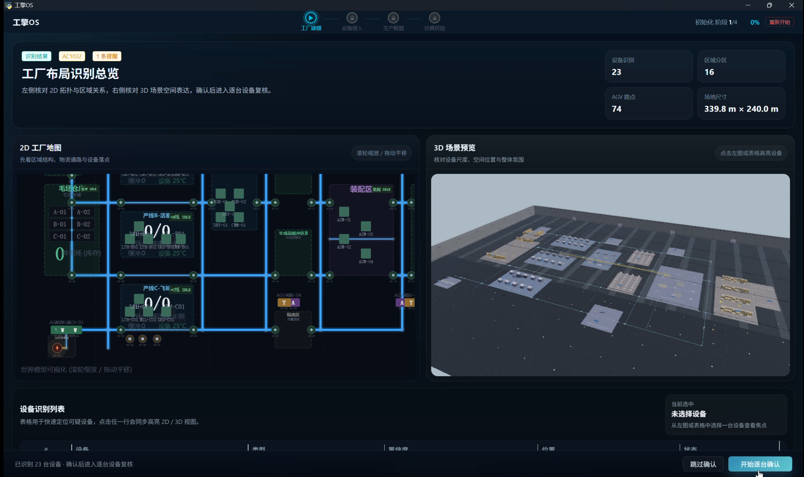
The PMC agent addresses this challenge by treating planning support as an interactive computational service rather than as a monolithic enterprise system. Instead of building a large and rigid software stack, the design philosophy is to create an AI-based “PMC calculator” that planners can query on demand. Through conversational interaction, the planner can request demand-plan generation, evaluate supply feasibility, inspect bottlenecks, and revise plans quickly. This interaction model is important because in many production settings the value of AI does not come only from full automation, but from reducing the cognitive and coordination burden on human planners while preserving transparency and controllability.
Conceptually, the PMC agent can be interpreted using the tools introduced earlier in this chapter. The planning environment can be modeled as a stochastic decision system whose state includes demand information, inventory positions, work-in-process, available capacity, supplier commitments, and production priorities. Simulation can be used to evaluate the downstream consequences of a candidate production plan under uncertainty, for example by estimating lateness risk, capacity utilization, or service-level performance. Optimization modules can then search for schedules or allocations that balance multiple constraints. When the environment evolves over time and decisions are repeatedly updated, the problem also admits an MDP interpretation, with the agent using current state information to propose or refine actions over a rolling horizon. In this sense, the PMC agent is not a separate topic from simulation optimization; it is one of its most relevant industrial embodiments.
In practical deployment, the role of the large language model is not to solve the entire planning problem directly. Rather, it acts as an interface and coordinator. It translates planner intent into structured tasks, retrieves the relevant business rules and planning skills, invokes optimization or simulation modules when needed, and presents the outputs in a way that is easier for planners to interpret and act upon. This division of labor is especially appropriate in PMC settings, where many subproblems are structured enough to benefit from deterministic optimization, while the overall planning loop still requires flexible reasoning, explanation, and exception handling. Thus, the PMC agent can be understood as a domain-specific instance of the broader hybrid-agent architecture discussed above.
From a systems perspective, the significance of the PMC agent lies in demonstrating how conversational AI, stochastic planning, and optimization can be combined into a lightweight but useful industrial decision tool. Rather than replacing existing planning logic entirely, it augments the planner’s ability to process uncertainty, evaluate alternatives, and respond to frequent changes. This makes PMC a compelling application scenario for industrial AI agents and a natural bridge between the theory of simulation optimization and the practical realities of manufacturing operations.
2.8.3 World Models for Direct Engineering Layout Generation
An important extension of the industrial AI framework is the use of world models to directly generate engineering layouts for digital factories. Traditional factory modeling often depends on manual reconstruction from CAD drawings, engineering documents, and equipment lists, which is labor-intensive and difficult to scale across plants. By contrast, a world model aims to infer a structured and simulation-ready representation of the factory from heterogeneous inputs, including layout drawings, device annotations, spatial constraints, and process semantics.
The resulting representation is more than a geometric scene. It acts as a latent operational model of the plant, encoding not only where equipment is located, but also how production zones, logistics paths, and equipment relations should be organized. In this way, the world model bridges the gap between raw engineering inputs and executable digital twins. Once generated, the layout can be rendered as a 2D–3D factory scene, inspected by users, and further refined through human feedback or downstream calibration.
From the perspective of simulation and optimization, this capability is particularly important because it reduces one of the major bottlenecks in industrial deployment: model initialization. A directly generated engineering layout provides the structural prior needed by discrete-event simulation, routing algorithms, scheduling modules, and agent-based coordination. It therefore accelerates the construction of digital twins and enables the agent system to move more quickly from offline modeling to online decision support.
Figure 2.9 illustrates a factory scene generated and rendered through the world-model-based pipeline. Such a scene provides a practical basis for subsequent simulation, verification, and optimization, while also giving human planners an interpretable visual interface for validating the generated plant representation.
Notes and References
MC methods were introduced in the 1940s by Stanislaw Ulam and John von Neumann (Metropolis and Ulam 1949). The genesis of MC simulation is often attributed to an anecdote involving Ulam, who, while engaged in a solitary card game, pondered the probability of drawing a straight flush from a standard deck of 52 cards. This contemplation led Ulam to recognize the potential of using random sampling to solve complex probabilistic problems. John von Neumann played a pivotal role by implementing these random simulation processes on the ENIAC computer, one of the earliest electronic general-purpose computers. MC simulation was pioneered by scientists who employed stochastic methods to address intricate neutron diffusion problems in nuclear reactors (Metropolis et al. 1953). MC simulation is widely used in disciplines from engineering to biology to finance to management, due to the flexibility in modeling complex stochastic systems that would otherwise be intractable (Hammersley 2013).
The historical evolution of DES dates back to the 1960s, a period marked by significant advances in computational capabilities and the increasing complexity of industrial systems (Taylor et al. 2009). Early DES software was developed to address specific industrial problems, primarily in manufacturing and logistics, where the need to optimize production lines and supply chains was paramount (Nance and Sargent 2002). Over the decades, both industry and academia have contributed to the progressive development of DES software, enhancing its flexibility, scalability, and applicability across a myriad of sectors. The integration of DES with other advanced methodologies such as ML has further expanded its utility, enabling the simulation of increasingly complex and high-dimensional systems (Collins et al. 2014; Dagkakis and Heavey 2016; Nelson 2016).
More information on ABS can be found in Brown et al. (2004; Epstein 2009, 1996; Seibel and Kellam 2003; North et al. 2013; Gilbert and Troitzsch 2005; Macal and North 2005), with information on specific ABS platforms found in Grigoryev (2012; Tisue and Wilensky 2004).
ABS can be viewed as a variation of DES, as state changes in virtually all existing ABS occur at a countable number of points in time; for more on the relationship between ABS and DES, see Beeker and Page (2006; Macal et al. 2013; Pegden 2010).
The warehouse management example is based on Zhang, Liu, et al. (2023; Zhang, Li, et al. 2025).
Comprehensive discussions on R\(\&\)S as well as multiple comparison procedures can be found in Bechhofer (1995; Goldsman et al. 1998). A survey tracing the development of techniques in SO over finite sets can be found in Tekin and Sabuncuoglu (2004). Other work in R&S with applicability to the simulation setting include the following: subset selection (Chen et al. 2008; Zhang, Chen, et al. 2023; Zhang, Peng, et al. 2023), feasibility determination (Gao and Chen 2016; Shi et al. 2022), quantile-based selection (Peng et al. 2021; Shin et al. 2022), general sampling distribution selection (Zhang et al. 2020; Chen and Ryzhov 2023), context-dependent selection (Shen et al. 2021; Du et al. 2024; Li et al. 2024; Zhang, Chen, et al. 2025), and large-scale parallel selection (Luo et al. 2015; Zhong et al. 2022; Zhong and Hong 2022; Hong et al. 2022).
The OCBA method was introduced by Chen (1996), and a book providing a comprehensive treatment is Chen and Lee (2011) see also Chen et al. (2000; Branke et al. 2007; Glynn and Juneja 2004; Pasupathy et al. 2014). Extensions and applications include Peng, Xu, et al. (2018) for multi-fidelity models; Du et al. (2024) for context-dependent problems; Wang et al. (2023) for two-stage SO; and Y. Li et al. (2021) for MCTS.
The formulation of the dynamic allocation and selection (A\(\&\)S) policy was introduced in Peng et al. (2016), with the approximate dynamic programming paradigm based on value function approximation for the Bellman equation proposed in Peng, Chong, et al. (2018).
An optimal A\(\&\)S policy for an integrated PCS over the parameter space can be found via a Bellman equation, described in Peng et al. (2016; Peng, Chong, et al. 2018).
Alternatives to PCS such as the probability of good selection are discussed in Eckman and Henderson (2021).
Thompson (1933) introduced Thompson sampling, and Russo (2020) proposed the Top-Two Thompson extension. Alternative sequential sampling procedures include the expected value of improvement (EVI) (Chick and Inoue 2001), knowledge gradient (KG) (Frazier et al. 2008), and expected improvement (EI) (Ryzhov 2016). KG and EI sequentially allocate samples to optimize myopic surrogate criteria.
Search methods for discrete stochastic optimization were not treated here but include techniques such as simulated annealing (Alrefaei and Andradóttir 1999), genetic algorithms, stochastic ruler methods (Yan and Mukai 1992), stochastic comparison (Gong et al. 2000), nested partitions (Shi and Olafsson 2007), ant colony optimization (Dorigo et al. 2006; Dorigo and Blum 2005), Tabu search (Glover and Hanafi 2002), COMPASS (Hong and Nelson 2006), the adaptive hyperbox algorithm for high-dimensional problems (Xu et al. 2013), and the R-SPLINE algorithm (Wang et al. 2013), some of which have proofs of global or local convergence (Hong and Nelson 2009).
Stochastic Approximation (SA) was introduced by Robbins and Monro (1951) to address noisy root-finding problems, and later applied to stochastic optimization by solving for the zero of the gradient when a “direct” gradient estimator is available. Kiefer and Wolfowitz (1952) extended SA to the setting without such an estimator by approximating the gradient using finite-difference methods, and Blum (1954) extended SA to the multi-dimensional setting.
Papers focused on the asymptotic convergence properties of RM, KW, and their variations include Derman (1956; Fabian 1967; Polyak and Juditsky 1992; Polyak and Tsybakov 1990). Asymptotic normality of the SA iterate was established in Fabian (1967). Finite-time theory and error bounds have been derived in Nemirovski et al. (2009a; Ghadimi and Lan 2012a).
Iterate averaging was introduced in Polyak and Juditsky (1992; Ruppert 1988); the robust SA algorithm in Nemirovski et al. (2009b), the accelerated SA algorithm in Ghadimi and Lan (2012b); and the adaptive projection SA algorithm (Andradóttir 1995).
Recommended books on SA include Kushner and Yin (2003; Borkar 2009).
The gradient estimator is key to the success of an SA algorithm used for optimization. The most readily available gradient estimate employs finite differences, requiring only performance estimates and no knowledge of the underlying system, such as in the context of black-box simulation. However, finite difference gradient estimates can be noisy if the measurements are highly volatile and become computationally expensive in high dimensions, as the cost grows linearly with the parameter dimension. Simultaneous Perturbation Stochastic Approximation (SPSA) (Spall 1992) requires only two estimates of the objective function to approximate the gradient, making the computational cost independent of the parameter space dimension. A proposed approach called Secant-Tangents AveRaged stochastic approximation (STAR-SA) employs a hybrid gradient estimator that combines direct gradient estimates with a symmetric finite difference gradient estimate (Chau et al. 2014).
Response surface methodology (RSM) was initially developed for experimental design in physical processes (Box and Wilson 1992). A comprehensive book is Myers et al. (2016). A review of its use for SO problems can be found in Barton and Meckesheimer (2006; Kleijnen 2018), including automating RSM and handling stochastic constraints in Neddermeijer et al. (2000; Nicolai and Dekker 2009).
Bayesian global optimization methods are described in Sacks et al. (1989; Williams and Rasmussen 2006).
The EGO algorithm was introduced by Jones et al. (1998); analogous methods for SO are detailed in Huang et al. (2006; Kleijnen 2009). Kriging for simulation metamodeling includes Van Beers and Kleijnen (2004; Kleijnen and Van Beers 2005; Kleijnen 2009).
A comprehensive book on trust region methods is Conn et al. (2000); its use in SO is described in Chang et al. (2013; Deng and Ferris 2006).
The main stochastic gradient estimation techniques are detailed in Chapter 5 of the simulation optimization handbook (Fu 2015), which also contains chapters on many other SO topics. Stochastic gradient estimation from an AI/ML perspective is reviewed in Mohamed et al. (2020). The GLR method was introduced in Peng, Fu, et al. (2018); see also Peng et al. (2025). Other recent developments in stochastic gradient estimation can be found in Ren and Fu (2024; X. Ren et al. 2025; Fu, Hu, Ryzhov, et al. 2025; Fu, Hu, and Scheinberg 2025).
Research on stochastic gradient estimation for quantiles, conditional value-at-risk, and distortion risk measures is relatively recent (Glynn et al. 2021; Heidergott and Volk-Makarewicz 2016; Hong 2009; Hong and Liu 2009; Jiang and Fu 2015; Hu et al. 2022) and often focuses on estimating the gradient of the distribution function (Peng, Fu, et al. 2018; Liu and Hong 2011; Li and Peng 2024, 2025). Stochastic gradient estimators for risk measures based on a single simulation run are generally biased, with much research attention on their asymptotic properties.
A monograph on MC and QMC is Lemieux (2009), and L’Ecuyer (2018) provides an introduction to RQMC; see also Niederreiter (1992). Application of conditional MC and RQMC to reduce the variance of stochastic gradient estimators is found in L’Ecuyer et al. (2022).
Variance reduction techniques are covered in most textbooks on stochastic simulation, including Law and Kelton (2000; Glasserman 2004; Asmussen and Glynn 2007; Rubinstein and Kroese 2016).
Methods focused on reducing variance specifically in SGD, leading to more stable convergence, include stochastic average gradient (SAG) and stochastic variance reduced gradient (SVRG) (Roux et al. 2012; J Reddi et al. 2015; Johnson and Zhang 2013). While SAG is limited to smooth and convex functions, SVRG enhances applicability by updating gradients every \(m\) iterations, making it effective for both convex and non-convex problems. Additional advances include SDCA, MISO, S2GD, and the SARAH algorithm, with SARAH+ and SARAH++ further improving these approaches by removing the need for careful parameter selection (Shalev-Shwartz and Zhang 2013; Konečný and Richtárik 2017; Nguyen et al. 2017). These variance reduction techniques achieve linear convergence rates in strongly convex settings, significantly improving optimization performance for tasks like regularized logistic regression (Nguyen et al. 2017). Although SVRG has shown superior performance in non-convex neural networks (Shang et al. 2018; Reddi et al. 2016), applying these methods to more complex and deeper neural networks remains a critical area for future research.
Finally, a valuable resource for the SO research community is the SimOpt testbed introduced by Pasupathy and Henderson (2006), found at https://simopt.org or https://github.com/simopt-admin/simopt; see also Pasupathy and Henderson (2011; Dong et al. 2017; Eckman et al. 2019), and the Winter Simulation Conference (WSC) program archives at https://informs-sim.org for regular updates and the most current research developments in the simulation field.
人工智能与机器学习
第 03 章 · 章节速读
本章从回归、分类讲到神经网络和强化学习。关键是分清：是在预测结果，还是在学习如何行动。
- 回归与分类
- 线性回归、逻辑回归、支持向量机和决策树是基础工具。
- 神经网络
- 通过多层变换学习复杂关系，训练时用梯度方法更新参数。
- 不同数据，不同结构
- CNN 处理图像；RNN、Transformer 等处理序列信息。
- 强化学习
- 智能体通过状态、动作和奖励学习策略，Q-learning 是入门方法。
训练表现和实际效果要分开看：冻结策略后，用新的随机样本评估。
展开完整原文（英文）
This chapter overviews major methodologies used in AI from the areas of statistical regression models and machine learning, beginning with linear regression and logistic regression, which form the basis for many predictive models. ML methods covered are support vector machines, decision trees, reinforcement learning, and artificial neural networks – convolutional neural networks used for computer vision tasks such as image recognition and object detection, followed by recurrent neural networks and Transformers used for natural language processing applications such as sentiment analysis and chatbots.
3.1 Linear Regression and Logistic Regression
Linear regression and logistic regression are two of the most widely-used statistical methods for modeling the relationship between a dependent variable (target) and one or more independent variables (features), the difference between the two being the function used to model the relationship. The two models can also be viewed as representative of two classes of regression models distinguished by the range of the dependent variable: unbounded versus bounded.
Linear regression aims to find the best-fitting linear model, although transformations enable significant extension of its applicability.
The simplest linear regression has one independent variable \(x\), with the relationship between \(x\) and the dependent variable \(y\) modeled as a straight line, i.e., \[\begin{equation*} y = \beta_0 + \beta_1 x + \epsilon, \end{equation*}\] where \(y\) is the dependent variable, \(\beta_0\) is the y-intercept, \(\beta_1\) is the slope, \(x\) is the independent variable, and \(\epsilon\) is the error term (residuals).
When there are multiple independent variables, the model extends to multiple linear regression:
\[\begin{equation*} y = \beta_0 + \beta_1 x_1 + \beta_2 x_2 + \dots + \beta_p x_p + \epsilon, \end{equation*}\] where \(x_1, x_2, \dots, x_p\) are the independent variables \(x_i=(x_{i1},\dots,x_{ip})\) with corresponding coefficients \(\beta_1, \beta_2, \dots, \beta_p\),
estimated using the method of ordinary least squares (OLS), which minimizes the sum of the squared differences between the observed values \(y=(y_1,\dots,y_n)\) and the predicted values \(\hat{y}=(\hat{y}_1,\dots,\hat{y}_n)\) from the model: \[\begin{equation*} J(\beta) = \sum_{i=1}^{n} (y_i - \hat{y}_i)^2 = \sum_{i=1}^{n} \left( y_i - (\beta_0 + \beta_1 x_{i1} + \dots + \beta_p x_{ip}) \right)^2. \end{equation*}\]
Defining the vector of coefficients as \(\beta=(\beta_1,\dots,\beta_p)\) and the matrix of input features as \(X=(x_1,\dots,x_n)\), the solution to this minimization problem is given by \[\begin{equation*} \beta = (X^T X)^{-1} X^T y, \end{equation*}\] where \(T\) denotes the transpose operator.
Vibe coding prompt.
Write a short NumPy implementation of ordinary least
squares linear. Regression using np.linalg. Add an
intercept term, solve the normal equations, and print
the fitted coefficients.Generated NumPy implementation.
import numpy as np
X = np.array([[1.], [2.], [3.], [4.]])
y = np.array([3., 5., 7., 9.])
X = np.c_[np.ones(len(X)), X] # add intercept
beta = np.linalg.solve(X.T @ X, X.T @ y)
y_hat = X @ beta
print(beta) # [1. 2.], i.e., y = 1 + 2xStandard assumptions for linear regression are as follows:
Linearity: The relationship between the predictors and the outcome is linear.
Independence: Observations are independent of each other.
Homoscedasticity: The variance of the error terms is constant across all levels of the independent variables.
Normality: The error terms are normally distributed.
Common performance metrics for linear regression model fit include the coefficient of determination (denoted by \(R^2\)), which measures the proportion of variance in the dependent variable that is predictable from the independent variables (higher values indicating better fit), and root mean-squared error (RMSE):
\[\begin{equation*} R^2 = 1 - \frac{\sum_{i=1}^{n} (y_i - \hat{y}_i)^2}{\sum_{i=1}^{n} (y_i - \bar{y})^2}, \end{equation*}\]
\[\begin{equation*} RMSE = \sqrt{\frac{1}{n} \sum_{i=1}^{n} (y_i - \hat{y}_i)^2}. \end{equation*}\]
Logistic regression is a statistical method that uses the logistic function (also known as the sigmoid function) for the input-output model: \[\begin{equation*} y = \sigma(\beta_0 + \beta_1 x_1 + \beta_2 x_2 + \dots + \beta_p x_p), \sigma(z) = \frac{1}{1 + e^{-z}}, \end{equation*}\]
where \(\sigma(\cdot)\) denotes the sigmoid function. Since the range of the output is between 0 and 1, logistic regression can be used to model the probability of a binary outcome, i.e., \({\mathcal P}(y = 1 \mid x)\).
Thus, in AI/ML applications, logistic regression is used for binary classification problems, where the outcome is a categorical variable with two possible values (e.g., success/failure, yes/no, 0/1).
To predict the binary outcome, a threshold is typically set at 0.5. If the predicted probability is greater than or equal to 0.5, the model predicts one class; else, it predicts the other.
The coefficients in logistic regression are estimated using maximum likelihood estimation (MLE).
Standard assumptions for logistic regression are as follows:
Linearity of the Logit: The logit (log-odds) of the outcome is a linear combination of the predictor variables.
Independence: Observations are independent of each other.
Absence of Multicollinearity: Predictors should not be highly correlated with each other.
Logistic regression models are evaluated using metrics appropriate for classification tasks, such as accuracy, precision, recall, F1-score, and AUC-ROC, defined as follows:
Accuracy is the proportion of correctly predicted instances: \[\begin{equation*} \text{Accuracy} = \frac{TP + TN}{TP + TN + FP + FN}, \end{equation*}\] where \(TP\), \(TN\), \(FP\), and \(FN\) stand for true positives, true negatives, false positives, and false negatives, respectively.
Precision is the proportion of true positive predictions out of all positive predictions: \[\begin{equation*} \text{Precision} = \frac{TP}{TP + FP}. \end{equation*}\]
Recall (Sensitivity) is the proportion of true positive predictions out of all actual positives: \[\begin{equation*} \text{Recall} = \frac{TP}{TP + FN}. \end{equation*}\]
F1-Score is the harmonic mean of precision and recall: \[\begin{equation*} \text{F1-Score} = 2 \times \frac{\text{Precision} \times \text{Recall}}{\text{Precision} + \text{Recall}}. \end{equation*}\]
AUC-ROC is the area under the receiver operating characteristic curve, which plots the true positive rate against the false positive rate at various threshold settings. The AUC-ROC value ranges from 0 to 1, with a value closer to 1 indicating better model performance.
3.2 Support Vector Machines (SVMs) and Decision Trees
Support Vector Machines are a form of supervised learning used for both classification and regression tasks, although more widely used for the former. SVMs aim to find the hyperplane or set of hyperplanes that best separates the data points of different classes, most often in a high-dimensional space. Here we consider two classes, known as the binary classification problem, in which case the hyperplane maximizes the margin between the closest data point from each class, known as the support vector, where the margin is defined as the distance between the hyperplane and the support vectors. The larger the margin, the better the generalization and separation between classes. Figure 3.2 provides an illustrative example in two-dimensional space, where the optimal hyperplane (solid line) is centered between the two support vectors (dotted lines) that maximize this margin.
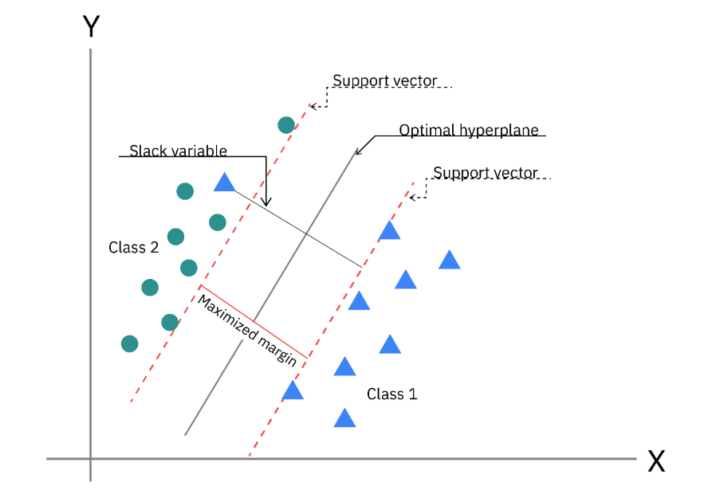
For a binary classification problem, the decision boundary is defined by the equation: \[\begin{equation*} w \cdot x + b = 0, \end{equation*}\] where \(w\) is the weight vector, \(x\) is the feature vector (with features X and Y in Figure 3.2), and \(b\) is the bias term.
If the data is linearly separable, a linear SVM can be found by solving the following optimization problem to find the hyperplane that maximizes the margin: \[\begin{equation*} \min_{w, b} \frac{1}{2} \|w\|^2 \end{equation*}\] subject to the constraints: \[\begin{equation*} y_i (w \cdot x_i + b) \geq 1, \end{equation*}\] where \(y_i \in \{ \pm 1\}\) is the class label of the \(i\)th data point with feature \(x_i\).
Real-world data is often not linearly separable. To handle nonlinearly separable data, SVM uses a technique called the “kernel trick,” which transforms the original feature space into a higher-dimensional space where the data becomes linearly separable. The selection of the kernel function is crucial to effectively capture the underlying relationships within the data.
The simplest kernel is the linear kernel given by \[\begin{equation*} K(x, x') = x \cdot x', \end{equation*}\]
which maps features directly into a higher-dimensional space without modifying their relationships, effectively finding an optimal hyperplane in the original feature space. This kernel is typically used when the data is linearly separable and has relatively low computational complexity, making it the best choice for simple linear problems.
When data exhibits nonlinear relationships, kernels can be used in SVM to capture complex interactions by transforming the input space. The polynomial kernel is defined as \[\begin{equation*} K(x, x') = (x \cdot x' + c)^d, \end{equation*}\] where \(d\) is the degree and \(c\) is an offset. This kernel is useful for capturing polynomial relationships between features and targets. The radial basis function (RBF) kernel, or Gaussian kernel, is widely used for its ability to map data into higher-dimensional space: \[\begin{equation*} K(x, x') = \exp(-\gamma \|x - x'\|^2), \end{equation*}\] where \(\gamma\) controls the width of the Gaussian and affects the model’s complexity; higher \(\gamma\) values create more complex decision boundaries. Lastly, the sigmoid kernel, similar to neural network activation, is given by \[\begin{equation*} K(x, x') = \tanh(\alpha x \cdot x' + c), \end{equation*}\] with \(\alpha\) and \(c\) controlling the slope and offset. The sigmoid kernel approximates nonlinear boundaries, functioning like a shallow neural network.
The choice of kernel function depends on the characteristics of the data and the complexity of the relationships that need to be modeled. For linearly separable data, the linear kernel provides a simple and effective solution. For problems where the relationship between features and target is more intricate, the polynomial kernel offers the flexibility to capture polynomial interactions, while the RBF kernel is ideal for capturing complex, highly nonlinear patterns. The sigmoid kernel, on the other hand, is effective at mimicking the behavior of neural networks.
In practice, it is often beneficial to experiment with multiple kernel functions and perform hyperparameter tuning to select the one that yields the best performance for a given dataset. Each kernel function brings its own strengths in capturing relationships, thus providing flexibility in addressing various ML problems effectively.
In cases where perfect separation is not achievable due to noise or overlapping data, the soft-margin SVM approach is used. This method allows some misclassification for a better balance between maximizing the margin and minimizing classification errors. The objective function for a soft-margin SVM is \[\begin{equation*} \min_{w, b, \xi} \frac{1}{2} \|w\|^2 + C \sum_{i=1}^{n} \xi_i \end{equation*}\] subject to \[\begin{equation*} y_i (w \cdot x_i + b) \geq 1 - \xi_i, \xi_i \geq 0, \end{equation*}\] where \(\xi_i\) are slack variables allowing misclassifications, and \(C\) is a regularization parameter controlling the trade-off between maximizing the margin and minimizing misclassification errors. The choice of \(C\) determines the model’s flexibility: a larger value of \(C\) aims for fewer misclassifications, while a smaller value allows a wider margin at the cost of some errors.
SVM models are evaluated using common classification metrics such as accuracy, precision, recall, F1-score, and AUC-ROC. These metrics help assess the model’s performance and its ability to correctly classify new data points.
Decision trees are another widely utilized and intuitive method for both classification and regression tasks. A decision tree models the decision-making process by recursively partitioning the data into subsets based on feature values, ultimately forming a hierarchical, tree-like structure where each node represents a decision criterion. This recursive process continues until a stopping condition is met, such as reaching a predefined maximum depth or when further splitting does not significantly reduce impurity.
A decision tree is composed of three primary types of nodes:
root node – the topmost node, representing the entire dataset, from which the decision tree begins to partition the data.
internal nodes – nodes that represent decisions based on feature values, leading to subsequent splits; these nodes act as intermediate steps that guide the data down different branches of the tree based on specific criteria.
leaf nodes – terminal nodes that represent the final predicted output or class label; these nodes contain the majority class (for classification) or the average value (for regression) of the samples that reach them.
The construction of an effective decision tree relies on selecting the optimal feature to split the data at each node. This selection is driven by a criterion that evaluates the quality of a split. Common criteria for determining the best split include the following:
Gini Impurity measures the likelihood of incorrectly classifying a randomly chosen element if it were assigned a label according to the observed distribution within a subset: \[\begin{equation*} Gini = 1 - \sum_{i=1}^{c} p_i^2, \end{equation*}\] where \(p_i\) represents the probability of selecting an element from class \(i\). A lower Gini Impurity value indicates a purer node, which means that most of the data points belong to a single class.
Entropy quantifies the degree of disorder or impurity within the dataset: \[\begin{equation*} Entropy = -\sum_{i=1}^{c} p_i \log_2(p_i). \end{equation*}\] Entropy is particularly useful for capturing uncertainty in the system, where higher entropy indicates greater impurity, and lower entropy suggests a more homogeneous subset. In information theory, entropy is a measure of the information content, and it helps to determine the uncertainty reduction when splitting a node.
Information Gain is derived from entropy and measures the reduction in entropy after splitting the dataset based on a particular feature: \[\begin{equation*} Information ~ Gain = Entropy(parent) - \sum_{i=1}^{k} \frac{n_i}{n} Entropy(child_i), \end{equation*}\] where \(n_i\) represents the number of samples in the \(i\)th child node, and \(n\) is the total number of samples. The feature with the highest information gain is selected for the split, as it yields the greatest reduction in impurity, thereby helping to create purer nodes.
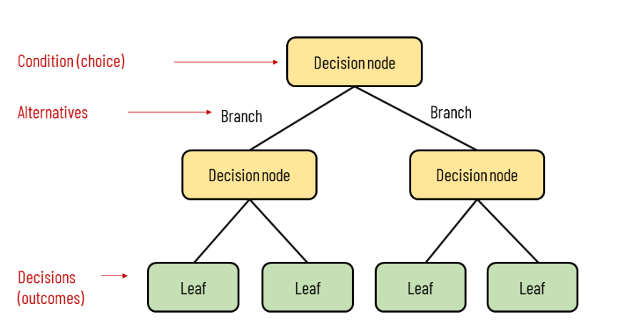
The structure of a decision tree is depicted in Figure 3.3, where each decision node represents a condition or test on a feature (e.g., ‘Age >30’). Branches stemming from these nodes represent the possible outcomes of each condition, directing the flow based on whether the condition is met or not. The end points, or leaf nodes, indicate the final predicted outcome or class label (e.g., ‘Yes’ or ‘No’ for classification tasks). This hierarchical structure enables users to trace the sequence of conditions that lead to a specific prediction, providing a clear step-by-step interpretation of how the model reaches its decisions. This interpretability is particularly useful for identifying influential features and understanding the model’s logic.
The process of constructing a decision tree can be framed as an optimization problem, where the objective is to minimize the impurity of the resulting child nodes after each split. For a binary split, the resulting child nodes ideally exhibit high purity, meaning they primarily contain instances of a single class. Let \(D\) represent the dataset at a particular node, and let \(D_1\) and \(D_2\) represent the resulting child nodes after a split. The goal is to determine the feature and splitting value that minimize the weighted average impurity of \(D_1\) and \(D_2\). This can be represented as \[\begin{equation*} \text{Weighted Impurity} = \frac{|D_1|}{|D|} \times Impurity(D_1) + \frac{|D_2|}{|D|} \times Impurity(D_2), \end{equation*}\] where \(|D_1|\) and \(|D_2|\) are the sizes of the child nodes, and \(Impurity(D_1)\) and \(Impurity(D_2)\) are the impurity measures (such as Gini or entropy) of the respective nodes.
One major challenge with decision trees is their propensity to overfit the training data, resulting in poor generalization to unseen data. Overfitting occurs when the tree captures noise or idiosyncrasies in the training set rather than the underlying patterns. To mitigate overfitting, pruning techniques are employed:
1. Pre-pruning (Early Stopping): This approach halts the growth of the tree early based on criteria such as maximum tree depth, minimum samples per leaf, or minimum information gain. Pre-pruning restricts the model’s complexity and helps prevent overfitting by avoiding deep branches that capture noise.
2. Post-pruning: In this approach, branches are removed from a fully grown tree based on their contribution to model performance on a validation set. Post-pruning evaluates each branch and removes those that do not significantly enhance predictive accuracy. This ensures that only meaningful branches are retained, reducing the risk of overfitting while maintaining model accuracy.
3. Cost Complexity Pruning is another widely used pruning method in which a complexity parameter, \(\alpha\), is introduced to penalize the complexity of the tree. The objective is to minimize the following cost function: \[\begin{equation*} C(T) = R(T) + \alpha \cdot |T|, \end{equation*}\] where \(R(T)\) denotes the empirical risk (i.e., training error) of the tree \(T\), and \(|T|\) represents the number of leaf nodes. By adjusting \(\alpha\), we can balance the trade-off between model complexity and training error, leading to a simpler and more generalizable tree. The choice of \(\alpha\) plays a critical role in determining the optimal tree size that minimizes overfitting while retaining sufficient predictive power.
Decision trees are evaluated using metrics common to other classification or regression models, such as accuracy, precision, recall, F1-score, and RMSE. One of the main advantages of decision trees is their interpretability; the decision-making process can be easily visualized and understood, providing clear insight into how individual predictions are derived. The ability to trace the path from the root node to a specific leaf node is particularly advantageous in domains that require transparency and justifiability of decisions, such as finance, healthcare, and legal applications.
Beyond their standalone use, decision trees are foundational components in ensemble learning methods such as random forests and gradient boosting machines (GBMs). These ensemble methods combine multiple decision trees to achieve improved predictive performance and reduced overfitting. In random forests, multiple decision trees are trained on bootstrapped samples of the dataset, and their predictions are aggregated (typically using majority voting for classification or averaging for regression) to form a final prediction, thereby increasing robustness and reducing variance. In GBMs, trees are added sequentially, with each tree attempting to correct the errors made by the previous ensemble, leading to a powerful, highly accurate model that is well-suited for a wide range of complex predictive tasks.
An important aspect of decision tree construction is feature selection and its impact on model performance. Features that provide the highest information gain or the greatest reduction in impurity are prioritized during the splitting process. However, in real-world datasets with many irrelevant or redundant features, feature selection methods can be used before training to reduce dimensionality and improve the efficiency of the decision tree model.
3.3 Artificial Neural Networks
Artificial neural networks form the backbone of deep learning, and their basic architecture was inspired by the structure and function of the human brain.
The multilayer perceptron (MLP), a basic form of (deep) feedforward ANN, comprises multiple layers of nodes called neurons, where each neuron is connected to all neurons in the next layer. These connections are often represented as weights, which are the parameters of the model. The general structure of an MLP consists of three types of layers: an input layer, hidden layers, and an output layer. Let \(\tau \geq 3\) denote the total number of layers (including the input and output layers and at least one hidden layer) in the MLP. A deep neural network simply means that \(\tau\) is relatively large (initially just four, i.e., at least two hidden layers, but now significantly more than that). Figure 3.4 illustrates an MLP for \(\tau=4\). The input layer contains neurons that represent features of the dataset. These inputs are passed to the hidden layers, which contain multiple neurons that process the inputs using weights, biases, and activation functions. Bias neurons are added in the hidden layers to adjust the output. The hidden layers are responsible for learning complex patterns in the data. The final layer is the output layer, which produces the network’s predictions or classifications.
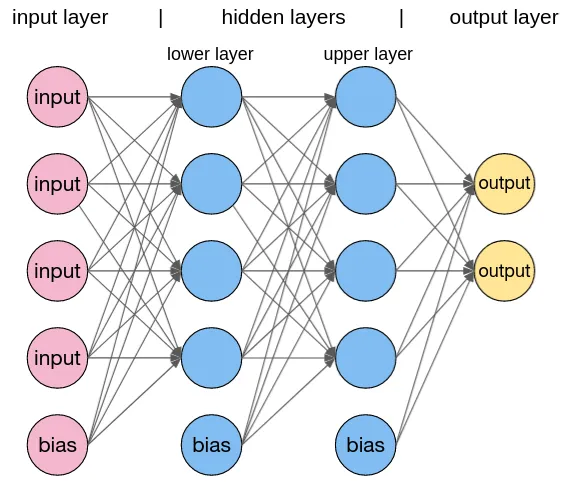
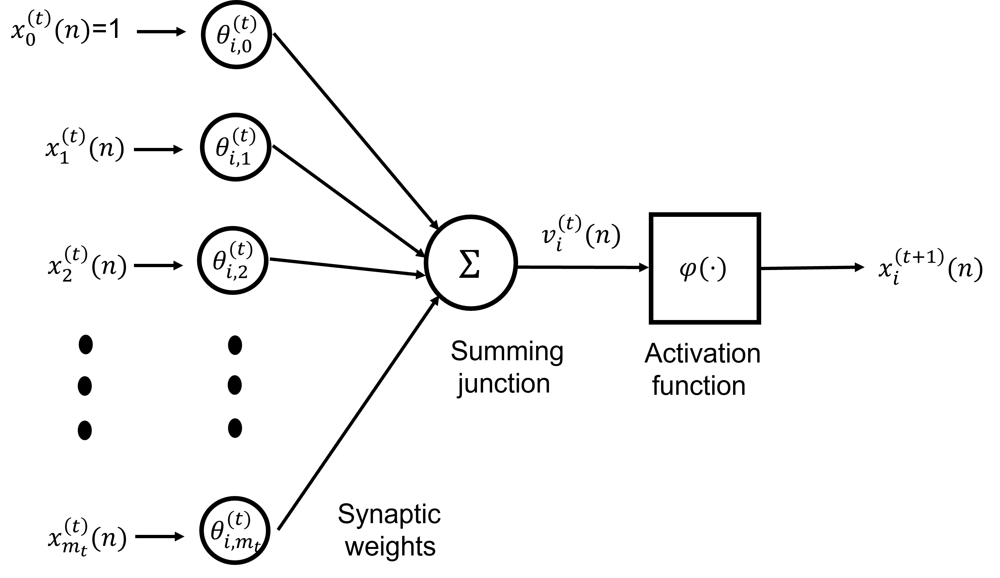
Mathematically, an MLP is a composition of functions of weighted sums of inputs propagated as outputs from one layer of neurons to the next layer. The components of an individual neuron are depicted in Figure 3.5, for input vector \(x^{(t)}(n):= \{ x_0^{(t)}(n),x_1^{(t)}(n),\ldots, x_{m_t}^{(t)}(n) \}\) producing output \(x^{(t+1)}(n)\) of the \(i\)th neuron at layer \(t+1\), capturing the following equations (for data point \(n = 1,\ldots,N,\) for a dataset of size \(N\)): \[\begin{eqnarray} x_i^{(t+1)}(n) &=& \varphi\big(v_i^{(t)}(n)\big), \\ v_i^{(t)}(n) &=& \sum_{j=0}^{m_t} \theta_{ij}^{(t)} x_j^{(t)}(n), \end{eqnarray}\]
where \(m_t+1\) is the number of neurons in the \(t\)-th layer (\(t=1,\ldots,\tau\)), \(\varphi\) is the activation function, and \(v_i^{(t)}(n)\) is the weighted input signal to neuron \(i\) at layer \(t\), with \(\theta_{ij}^{(t)}\) the synaptic weights that are the parameters to be tuned based on the dataset.
Common choices of activation functions, which introduce nonlinearity into the model, are as follows:
sigmoid \(\sigma(x) = \frac{1}{1 + e^{-x}}\);
rectified linear unit ReLU(\(x\)) = \(x^+ := \max(0, x)\);
hyperbolic tangent \(\tanh(x) = \frac{e^{x} - e^{-x}}{e^{x} + e^{-x}}.\)
Vibe coding prompt.
Write a minimal example of a one-hidden-layer MLP for binary
classification. Use only NumPy. Define ReLU and sigmoid,
create a small input batch and fixed weights, run a
forward pass, and print the output probabilities.Generated NumPy implementation.
import numpy as np
relu = lambda z: np.maximum(z, 0)
sigmoid = lambda z: 1 / (1 + np.exp(-z))
X = np.array([[1., 2.], [3., 4.]])
W1 = np.array([[0.2, -0.5, 0.3],
[0.8, 0.1, -0.2]])
b1 = np.array([0.1, 0.0, -0.1])
W2 = np.array([[0.4], [-0.7], [0.2]])
b2 = np.array([0.05])
H = relu(X @ W1 + b1)
Y = sigmoid(H @ W2 + b2)
print(Y)Gradient Estimation
Training a neural network usually means adjusting the synaptic weights to minimize a loss function \(L(x,y)\) quantifying the difference between the predicted output \(x\) and actual target output \(y\). For an MLP, this is carried out using a gradient-based search such as stochastic gradient descent (SGD), typically involving the backpropagation (BP) algorithm for computing the gradient of \(L\) with respect to each weight \(\theta_{ij}\).
The BP calculation consists of a forward pass that propagates input data through the network, computing the predicted output and storing intermediate activations for the backward pass, which applies the chain rule to compute gradients layer-by-layer from output back to input, assuming differentiability of both the activation function \(\varphi\) and loss function \(L\).
Denoting the output observation from the \(n\)th data point as \(O(n)\), which has \(x^{(\tau)}(n)\) as the corresponding output prediction from the \(n\)th data point, the BP algorithm uses (3.1) and (3.2) to derive the gradient estimate \(\nabla_{\theta} L\) \[\frac{\partial L(x^{(\tau)}(n), O(n))}{\partial \theta_{i,j}^{(t)}} = \delta_{i}^{(t)}(n) x_{j}^{(t)}(n),\] where \[\delta_{i}^{(t)}(n) = \begin{cases} \left. \frac{\partial L(x,O(n))}{\partial x} \right|_{x=x_i^{(t)}(n)} \varphi'(v_i^{(t)}(n)) & \text{if } t = \tau, \\[8pt] \varphi'(v_i^{(t)}(n)) \sum_{j=1}^{m_{t+1}} \delta_{j}^{(t+1)}(n) & \text{if } t < \tau. \end{cases}\]
The validity of the BP gradient estimate relies on the activation function \(\varphi\) and the loss function \(L\) being well behaved, mainly in terms of continuity and differentiability. The BP algorithm can be viewed as an application of automatic differentiation and as a special case of the stochastic gradient estimation technique of IPA introduced in Section 2.5. An approach that avoids the backward pass is introduced in the next chapter, in Section 4.2, based on a version of the LR stochastic gradient estimation also introduced in Section 2.5.
Optimization
After computing the gradients, the ANN’s weights are updated using a stochastic approximation algorithm (cf. Section 2.3), i.e., SGD or one of its variants. Traditional gradient descent calculates the gradient over the entire dataset before updating the model parameters, which can be computationally expensive and slow for large datasets. To alleviate this issue, SGD updates the model parameters by computing the gradient on small mini-batches of data taken from the much larger dataset. The gradient is stochastic, because the mini-batches are generally chosen by random sampling (akin to bootstrapping or sampling from the empirical distribution, although the goal is reversed – using a smaller sample size rather than generating a larger one).
Vibe coding prompt.
Write a short NumPy-only example of stochastic gradient descent for
linear regression. Use mini-batches, compute the mean-squared-error
gradient manually, and update the parameters in a training loop.Generated NumPy implementation.
import numpy as np
rng = np.random.default_rng(0)
X = np.array([[1.], [2.], [3.], [4.], [5.], [6.]])
y = np.array([3., 5., 7., 9., 11., 13.])
X = np.c_[np.ones(len(X)), X] # add intercept
beta = np.zeros(X.shape[1])
lr = 0.01
batch_size = 2
for epoch in range(200):
indices = rng.permutation(len(X))
for start in range(0, len(X), batch_size):
idx = indices[start:start + batch_size]
Xb, yb = X[idx], y[idx]
error = Xb @ beta - yb
grad = 2 * Xb.T @ error / len(Xb)
beta -= lr * grad
print(beta) # approximately [1. 2.]For training ANNs, the concept of momentum has been found to be practically useful in improving the stability of SGD and accelerating convergence. Momentum accumulates gradients in the direction of the steepest descent, allowing the optimization search algorithm to build velocity. Momentum is realized using a velocity term \(V_n\), updated as follows (along with the corresponding parameter update): \[\begin{eqnarray*} V_n &=& \gamma V_{n-1} + \eta \nabla_{\theta} L(\theta_{n}), \\ \theta_{n+1} &=& \theta_{n} - V_n, \end{eqnarray*}\] where \(\gamma\) is the momentum coefficient (typically between 0.9 and 0.99), and \(\eta\) is the learning rate. The velocity term helps the algorithm accelerate in the direction of consistent gradients, while also damping oscillations in regions where gradients change directions.
It can also improve the optimization process in traversing flat regions of the loss landscape more quickly and avoid excessive fluctuations in steep, narrow valleys, so that momentum-based gradient descent is particularly effective in deep networks, where gradients can sometimes be inconsistent or change directions rapidly between layers.
One commonly used method is RMSProp, which was developed to deal with the problem of large gradients and oscillations. RMSProp scales the learning rate by the root mean square of the gradients, allowing it to handle nonstationary objectives more effectively. The update rules for RMSProp are \[\begin{eqnarray*} V_n &=& \beta V_{n-1} + (1 - \beta) (\nabla_{\theta} L(\theta_{n}))^2, \\ \theta_{n+1} &=& \theta_{n} - \frac{\eta}{\sqrt{V_n} + \epsilon} \nabla_{\theta} L(\theta_{n}), \end{eqnarray*}\] where \(V_n\) is the exponentially decaying average of the squared gradients, \(\epsilon\) is a small number, and \(\beta\) is typically set to 0.9. This method helps to mitigate large gradient updates and prevents the learning process from overshooting the optimal solution.
Another widely used optimization method is Adam (adaptive moment estimation), which combines the advantages of momentum and adaptive learning rates, making it robust and efficient for a wide range of DL tasks. Instead of using a single learning rate for all parameters, Adam computes individual adaptive learning rates for each parameter based on estimates of the first and second moments of the gradient.
The Adam update rule is \[\begin{eqnarray*} m_n &=& \beta_1 m_{n-1} + (1 - \beta_1) \nabla_{\theta} L(\theta_{n}), ~~~\hat{m}_n = \frac{m_n}{1 - \beta_1^n}, \\ v_n &=& \beta_2 v_{n-1} + (1 - \beta_2) (\nabla_{\theta} L(\theta_{n}))^2, ~~~\hat{v}_n = \frac{v_n}{1 - \beta_2^n}, \\ \theta_{n+1} &=& \theta_n - \eta \frac{\hat{m}_n}{\sqrt{\hat{v}_n} + \epsilon}, \end{eqnarray*}\] where \(m_n\) represents the exponentially moving average of the gradients (first moment), and \(v_n\) represents the exponentially moving average of the squared gradients (second moment). The variables \(\beta_1\) and \(\beta_2\) are decay rates, typically set to 0.9 and 0.999, respectively. The term \(\hat{m}_t\) is the bias-corrected estimate of the first moment, and \(\hat{v}_t\) is the bias-corrected estimate of the second moment.
Adam’s key strength lies in its ability to adapt the learning rate for each parameter individually, based on the estimated gradient statistics. This makes it particularly effective for dealing with sparse gradients and noisy datasets, as the algorithm can adjust the step size accordingly. Additionally, Adam has built-in bias correction, which helps ensure that the estimates for the moments are unbiased, especially during the early stages of training. Adam has largely replaced RMSProp in many applications, but RMSProp remains a strong choice for recurrent neural networks and other specialized DL models.
Vibe coding prompt.
Write a minimal PyTorch implementation of Adam from scratch as
a class. Use parameter gradients, maintain first and second
moments, apply bias correction, and update parameters in-place.Generated PyTorch implementation.
import torch
class Adam:
def __init__(self, params, lr=1e-2, betas=(0.9, 0.999), eps=1e-8):
self.params = list(params)
self.lr = lr
self.beta1, self.beta2 = betas
self.eps = eps
self.t = 0
self.m = [torch.zeros_like(p) for p in self.params]
self.v = [torch.zeros_like(p) for p in self.params]
def zero_grad(self):
for p in self.params:
if p.grad is not None:
p.grad.zero_()
@torch.no_grad()
def step(self):
self.t += 1
for i, p in enumerate(self.params):
if p.grad is None:
continue
g = p.grad
self.m[i] = self.beta1 * self.m[i] + (1 - self.beta1) * g
self.v[i] = self.beta2 * self.v[i] + (1 - self.beta2) * g * g
m_hat = self.m[i] / (1 - self.beta1 ** self.t)
v_hat = self.v[i] / (1 - self.beta2 ** self.t)
p -= self.lr * m_hat / (torch.sqrt(v_hat) + self.eps)Initialization, Regularization and Normalization
However, even with advanced gradient descent variants, the performance of deep networks can still be significantly influenced by the initial values of the weights. This brings us to another major challenge in DL optimization: vanishing gradients and exploding gradients, which are closely tied to how weights are initialized before training begins.
Vanishing Gradients: This issue arises when gradients become very small as they propagate back through the network during BP, especially in deep networks with many layers. Activation functions like sigmoid and tanh, which compress their inputs into a small range, can exacerbate this issue. As a result, the gradients of earlier layers become close to zero, leading to extremely slow weight updates. For the sigmoid activation function \[\sigma(x) = \frac{1}{1 + e^{-x}},\] the derivative \(\sigma'(x) = \sigma(x)(1 - \sigma(x))\) is always between 0 and 0.25, meaning that as the backpropagated gradients move through the layers, they become progressively smaller, particularly when the network is deep.
Exploding Gradients: The opposite of vanishing gradients occurs when gradients grow excessively large as they are propagated backward, destabilizing the training process. This can result in very large updates to the weights, causing the model to diverge. This issue is particularly common in deep networks where small errors at the output layer result in disproportionately large weight updates in the earlier layers.
Both vanishing and exploding gradients significantly hinder the training process, especially in deep architectures. To prevent such problems, various strategies have been developed, one of which is weight initialization, which aims to keep the gradients within a manageable range throughout the network. These strategies maintain a balance in the flow of gradients during forward and backward propagation, preventing them from either vanishing or exploding.
A commonly used method is the Xavier initialization (also called Glorot initialization), which is designed to ensure that the variance of the activations is the same across every layer, thus preventing the gradients from shrinking or growing as they propagate through the network.
This initialization works well for activation functions such as the sigmoid and tanh functions, ensuring that the variance of the activations does not diminish or explode as they pass through each layer. By initializing the weights based on the number of input and output units, Xavier initialization helps to maintain the flow of gradients, reducing the likelihood of vanishing or exploding gradients.
However, Xavier initialization may not be optimal for ReLU activations, which have different properties from the sigmoid and tanh functions. ReLU activations introduce sparsity by setting all negative activations to zero, which can lead to a loss of variance in the gradients as they propagate through the network, since the gradients are also zero for negative activations. To address this shortcoming, He initialization was developed for ReLU-based networks, ensuring that the variance of the activations remains consistent across layers, even when ReLU is applied. Because ReLU can introduce zeros into the gradients, it’s crucial to initialize the weights in such a way that the variance of the activations doesn’t diminish across layers. He initialization ensures that the activation variance is kept in check, preventing vanishing gradients even in deep networks.
Another extension of these strategies involves LeCun initialization, which is often used for Leaky ReLU and Selu activations, particularly in self-normalizing networks. This initialization is designed to match the variance of the weights to the particular characteristics of self-normalizing networks, ensuring the gradients remain in a manageable range.
Regularization techniques play a crucial role in preventing overfitting by introducing constraints or modifications to the learning process. Overfitting occurs when a model captures not only the underlying patterns in the data but also the noise, leading to poor generalization on unseen data. Regularization aims to create models that are more robust and generalizable.
One of the simplest and most effective regularization methods involves adding a penalty term to the loss function, which discourages large weights. By penalizing large weights, the model is forced to learn simpler representations, which are less likely to overfit.
\(\mathbb L^2\) regularization (also known as ridge regularization) adds a penalty proportional to the sum of the squared weights. The total loss function becomes \[\mathcal{L}_{\text{total}} = \mathcal{L} + \frac{\lambda}{2} \|\mathbf{W}\|_2^2,\] where \(\lambda\) is the regularization strength, which controls the trade-off between minimizing the original loss and keeping the weights small. \(\mathbb L^2\) regularization encourages the weights to stay close to zero without completely eliminating them, helping the model learn smoother decision boundaries and reducing overfitting.
In contrast, \(\mathbb L^1\) regularization (also known as Lasso regularization) adds a penalty proportional to the absolute values of the weights: \[\mathcal{L}_{\text{total}} = \mathcal{L} + \lambda \|\mathbf{W}\|_1,\] \(\mathbb L^1\) regularization encourages sparsity in the weights, meaning that many weights are driven to exactly zero. This can effectively perform feature selection by pruning unnecessary connections in the network.
These two techniques can be combined into elastic net regularization, where both \(\mathbb L^1\) and \(\mathbb L^2\) penalties are applied: \[\mathcal{L}_{\text{total}} = \mathcal{L} + \lambda_1 \|\mathbf{W}\|_1 + \lambda_2 \|\mathbf{W}\|_2^2,\] which allows the model to benefit from both the sparsity of \(\mathbb L^1\) and the weight shrinkage of \(\mathbb L^2\).
Another effective regularization method is dropout, which prevents overfitting by randomly dropping out a subset of neurons during training. For each training iteration, certain neurons are temporarily removed from the network along with their connections. This forces the network to not rely too heavily on specific neurons, encouraging redundancy and more robust feature learning.
During testing, dropout is turned off, and the activations are scaled to ensure the same expected output as during training, so that the total signal remains consistent between training and testing phases.
A simple yet powerful method is early stopping. During training, the model’s performance is monitored on a validation set. If the validation error starts to increase after a certain number of iterations, indicating overfitting, early stopping halts the training process at this point.
Another powerful technique is batch normalization, which normalizes the inputs of each layer to maintain consistent activation distributions during training. This method addresses the issue of internal covariate shift, where the distribution of activations changes as the network learns. By normalizing the inputs, batch normalization stabilizes the learning process and allows for higher learning rates, accelerating convergence.
For a given layer, the normalized activation is computed as \[\hat{x} = \frac{x - \mu_B}{\sqrt{\sigma_B^2 + \epsilon}},\] where \(\mu_B\) and \(\sigma_B^2\) are the mean and variance of the mini-batch, and \(\epsilon\) is a small constant added for numerical stability. Batch normalization also introduces learnable scale \(\gamma\) and shift \(\beta\) parameters: \[y = \gamma \hat{x} + \beta.\] These parameters allow the network to learn the appropriate scale and mean for the normalized inputs, making the model more flexible. Moreover, batch normalization can reduce the need for other regularization techniques like dropout, especially in very deep networks, where it helps to reduce the internal covariate shift.
Finally, another effective approach to prevent overfitting is data augmentation, particularly in tasks such as image classification. Data augmentation artificially expands the training set by applying transformations like cropping, flipping, rotation, and color jittering to the input data. These transformations create new, slightly altered training examples that help the model generalize better to unseen data.
Computer Vision
Computer vision is one of the most rapidly advancing fields in AI, driven by applications such as autonomous vehicles, medical imaging, surveillance, and augmented reality. The aim is to enable machines to interpret and make decisions based on visual data, much like humans do. The development of powerful DL models has significantly boosted the performance of computer vision systems, making tasks such as object detection, image segmentation, and facial recognition more accurate and efficient than ever before.
Convolutional neural networks (CNNs) are specialized deep neural networks designed to process data with grid-like topologies, such as images. Their architecture is inspired by the visual cortex and is particularly adept at automatically learning hierarchical representations, revolutionizing tasks such as image classification, object detection, and segmentation. The architecture of a CNN comprises the following types of layers, each playing a distinct role in the feature extraction process, as illustrated in Figure 3.9.
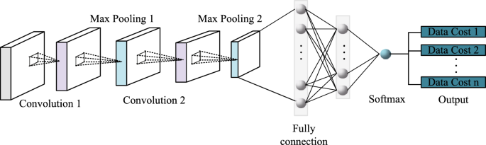
Convolutional Layers: At the heart of a CNN, the convolutional layer applies numerous filters to the input to create feature maps. These filters detect spatial hierarchies of features by sliding across the input image, computing dot products, and producing maps that emphasize features like edges or textures.
Pooling Layers: Following the convolutional layer, a pooling layer is typically used to reduce the spatial dimensions of the feature maps, thus reducing the number of parameters and computation in the network.
Fully Connected Layers: Towards the end of the network, fully connected layers combine all features from the previous layers to classify the image into labels. The output from the final fully connected layer is often passed through a softmax function to classify the inputs into probabilistic outputs for each class.
ReLU Activation Function: After each convolutional and fully connected layer, a ReLU function is applied to introduce nonlinearity, enhancing the network’s ability to learn complex patterns.
While CNNs have dramatically improved the field of computer vision, they come with challenges such as high data requirements, significant computational resources, and susceptibility to adversarial attacks. Future research in CNNs and related architectures such as Stable Diffusion models continues to focus on making these networks more efficient, interpretable, and robust against attacks, ensuring their applicability in a wider range of real-world scenarios.
Vibe coding prompt.
Write a minimal NumPy implementation of two-dimensional
convolution. Use an input matrix, a kernel, nested loops,
and compute each output entry by multiplying the local
patch with the kernel and summing.Generated NumPy implementation.
import numpy as np
def conv2d(X, K):
H, W = X.shape
h, w = K.shape
Y = np.zeros((H - h + 1, W - w + 1))
for i in range(H - h + 1):
for j in range(W - w + 1):
patch = X[i:i+h, j:j+w]
Y[i, j] = np.sum(patch * K)
return YCNNs have become the cornerstone of modern computer vision, enabling breakthroughs in tasks such as image recognition, object detection, and segmentation. Each of these tasks involves understanding visual information at different levels of complexity, and CNNs are well-suited for learning these hierarchical patterns from data.
In image recognition, the goal is to assign a single label to an entire image, which is typically formulated as a multi-class classification problem. The task involves predicting a probability distribution over a fixed set of categories. Given an input image \(I\), the CNN processes it through a series of convolutional and pooling layers to extract relevant features, which are then passed to fully connected layers for classification. The final output is a probability distribution over \(C\) classes, computed using the softmax function. To train the model, a loss function such as cross-entropy is minimized. This task serves as the foundation for many computer vision applications, and CNNs excel at automatically learning the hierarchical features necessary for accurate classification.
In contrast, object detection goes beyond recognizing the entire image by identifying and localizing multiple objects within the image. The task not only involves classifying each object but also predicting its location in the form of bounding boxes. Object detection models output both class labels and the coordinates of bounding boxes surrounding the objects. The output of a CNN-based object detection model includes a set of bounding boxes. In addition to the bounding box coordinates, the model also predicts class probabilities for each box. A commonly used approach is the region-based CNN (R-CNN) family, where regions of interest (RoIs) are first proposed and then classified into object categories. For each region, the CNN extracts features and predicts the class probabilities and bounding box offsets: \[\Delta B = ( \Delta x, \Delta y, \Delta w, \Delta h ).\] The loss function in object detection typically combines two components: a classification loss (e.g., cross-entropy) and a localization loss (e.g., smooth \(\mathbb L^1\) loss) to predict accurate bounding box coordinates: \[\mathcal{L} = \mathcal{L}_{\text{cls}} + \lambda \mathcal{L}_{\text{loc}},\] where \(\mathcal{L}_{\text{cls}}\) is the classification loss, \(\mathcal{L}_{\text{loc}}\) is the localization loss, and \(\lambda\) is a balancing factor. Popular object detection models include Faster R-CNN, YOLO (You Only Look Once), and SSD (Single Shot Multibox Detector), which differ in their speed and accuracy trade-offs but are all based on CNN architectures.
Finally, image segmentation is a more fine-grained task that goes beyond detection and recognition by assigning a label to each pixel in the image. There are two main types of segmentation: semantic segmentation and instance segmentation. Semantic segmentation assigns a label to every pixel, grouping pixels that belong to the same object or category. This results in a pixel-wise classification where each pixel is associated with a class label. Instance segmentation extends semantic segmentation by differentiating between multiple objects of the same category, assigning unique labels to individual object instances.
The goal of segmentation is to learn a mapping from an input image to a segmentation mask. The CNN-based segmentation network typically consists of two stages: an encoder and a decoder. The encoder is similar to a CNN used for image recognition, where convolutional layers progressively reduce the spatial resolution while capturing higher-level features. The decoder upsamples the feature maps to reconstruct the original spatial resolution, allowing the network to predict pixel-level labels.
One of the most prominent architectures for image segmentation is the U-Net model, which consists of an encoder-decoder structure with skip connections to retain fine-grained spatial information. The output is a probability map, where each pixel is assigned a probability for each class using a softmax function. The loss function for segmentation is typically a pixel-wise cross-entropy loss, which sums over all pixels in the image.
3.3.1 Natural Language Processing (NLP)
Natural language processing is a branch of AI focused on understanding, interpreting, and generating human language. It combines computational linguistics, ML, and DL techniques to process text and speech data. NLP applications include machine translation, sentiment analysis, chatbots, and text summarization, aiming to bridge the gap between human communication and computer understanding.
NLP involves building models that can understand, generate, and manipulate human language. Traditional ML approaches to NLP often required extensive feature engineering and domain knowledge. However, the rise of DL, particularly models such as recurrent neural networks (RNNs) and Transformer architectures, has significantly improved the performance on a wide range of NLP tasks by automatically learning features from raw data.
Recurrent Neural Networks
RNNs are a class of neural networks designed to handle sequential data by maintaining a hidden state that is updated at each time step. This hidden state allows RNNs to capture temporal dependencies in the data, making them particularly well-suited for tasks involving sequences, such as language modeling, machine translation, and speech recognition.
The architecture of an RNN differs from feedforward networks in that the connections between neurons form directed cycles. At each time step \(t\), the RNN takes an input \(x_t\), updates the hidden state \(h_t\), and outputs a prediction \(\hat{y}_t\). This process can be described by the following equations: \[h_t = f(W_h h_{t-1} + W_x x_t + b_h) , \hat{y}_t = g(W_y h_t + b_y),\] where \(h_t\) represents the hidden state at time step \(t\), \(W_h\) is the weight matrix for the hidden state, \(W_x\) is the weight matrix for the input, and \(W_y\) is the weight matrix for the output. The functions \(f\) and \(g\) are usually nonlinear activation functions such as Tanh or ReLU. The recursive nature of RNNs allows them to maintain context over time, which is essential for understanding sequences of words or characters in NLP tasks.
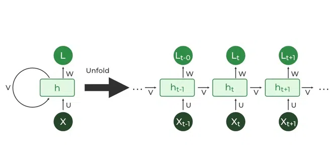
As shown in Figure 3.11, an RNN can be unfolded over time, allowing it to process sequences of inputs \(X = (x_{t-1}, x_t, x_{t+1}, \dots)\) and update the hidden state \(h_t\) at each time step. The hidden state \(h_t\) carries the memory of previous inputs, enabling the model to capture dependencies across time steps.
Vibe coding prompt.
Write a minimal PyTorch implementation of a simple recurrent neural
network from scratch. Define a module with input-to-hidden and
hidden-to-hidden linear maps, update the hidden state step by step, and
return the sequence of hidden states.Generated PyTorch implementation.
import torch
import torch.nn as nn
class SimpleRNN(nn.Module):
def __init__(self, input_dim, hidden_dim):
super().__init__()
self.Wx = nn.Linear(input_dim, hidden_dim)
self.Wh = nn.Linear(hidden_dim, hidden_dim, bias=False)
def forward(self, X):
B, T, _ = X.shape
h = X.new_zeros(B, self.Wh.in_features)
H = []
for t in range(T):
h = torch.tanh(self.Wx(X[:, t]) + self.Wh(h))
H.append(h)
return torch.stack(H, dim=1)Despite their ability to handle sequential data, RNNs face significant challenges when dealing with long sequences due to the problem of vanishing and exploding gradients. As the gradients are backpropagated through time, they may either shrink or grow exponentially, making it difficult for the model to learn long-term dependencies.
To address these issues, more advanced variants of RNNs, such as long short-term memory (LSTM) networks and gated recurrent units (GRUs), have been developed. LSTMs introduce a gating mechanism that controls the flow of information through the network, allowing it to retain relevant information over longer time periods. The LSTM architecture can be described by the following equations:
\[f_t = \sigma(W_f [h_{t-1}, x_t] + b_f) \quad \text{(forget gate)}\] \[i_t = \sigma(W_i [h_{t-1}, x_t] + b_i) \quad \text{(input gate)}\] \[\tilde{C}_t = \tanh(W_C [h_{t-1}, x_t] + b_C) \quad \text{(cell state candidate)}\] \[C_t = f_t \odot C_{t-1} + i_t \odot \tilde{C}_t \quad \text{(cell state update)}\] \[o_t = \sigma(W_o [h_{t-1}, x_t] + b_o) \quad \text{(output gate)}\] \[h_t = o_t \odot \tanh(C_t) \quad \text{(hidden state update)},\] where \(f_t\), \(i_t\), and \(o_t\) represent the forget, input, and output gates, respectively. The cell state \(C_t\) stores long-term memory, while the hidden state \(h_t\) carries the current step’s information. The gates control what information is added, removed, or retained from the cell state, which enables LSTMs to overcome the limitations of standard RNNs in long-term dependency learning.
While RNNs and their variants excel at processing sequences, they suffer from limitations in parallelization and long-term dependencies. The Transformer architecture was developed to address these shortcomings. The Transformer architecture has since become the dominant model for many NLP tasks, including machine translation, text summarization, and question answering.
Transformers
The Transformer relies entirely on self-attention mechanisms to model dependencies between tokens, allowing it to process all tokens in a sequence simultaneously rather than step-by-step as in RNNs. This parallelization makes Transformers more computationally efficient and capable of handling much longer sequences.
The self-attention mechanism computes a weighted sum of the values from the input sequence based on learned attention weights. The input to the self-attention mechanism consists of three components: the query, the key, and the value. The attention weights are computed as \[\text{Attention}(Q, K, V) = \text{softmax}\left(\frac{QK^T}{\sqrt{d_k}}\right) V,\] where \(Q\), \(K\), and \(V\) are matrices representing the query, key, and value vectors for each token in the input sequence, and \(d_k\) is the dimensionality of the key vectors. The dot products of vectors in \(Q\) and \(K\) give a similarity score between the tokens, and the softmax function ensures that the weights sum to 1. These weights are then applied to the value vectors \(V\) to produce the final output of the attention layer.
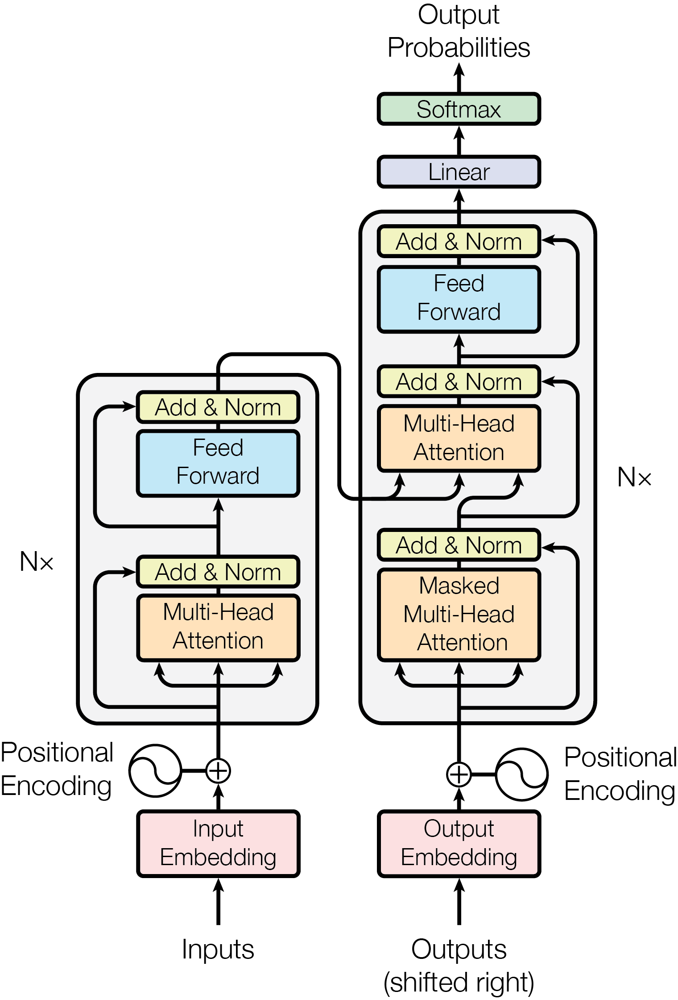
Vibe coding prompt.
Write a minimal PyTorch implementation of multi-head self-
attention from scratch. Define query, key, value projections,
split them into multiple heads, compute scaled dot-product
attention, concatenate the heads, and apply the output
projection.Generated PyTorch implementation.
import torch
import torch.nn as nn
import torch.nn.functional as F
class MultiHeadAttention(nn.Module):
def __init__(self, d_model, num_heads):
super().__init__()
assert d_model % num_heads == 0
self.num_heads = num_heads
self.d_head = d_model // num_heads
self.qkv = nn.Linear(d_model, 3 * d_model)
self.out = nn.Linear(d_model, d_model)
def forward(self, X):
B, T, D = X.shape
qkv = self.qkv(X)
Q, K, V = qkv.chunk(3, dim=-1)
Q = Q.view(B, T, self.num_heads, self.d_head).transpose(1, 2)
K = K.view(B, T, self.num_heads, self.d_head).transpose(1, 2)
V = V.view(B, T, self.num_heads, self.d_head).transpose(1, 2)
scores = Q @ K.transpose(-2, -1) / (self.d_head ** 0.5)
A = F.softmax(scores, dim=-1)
H = A @ V
H = H.transpose(1, 2).contiguous().view(B, T, D)
return self.out(H)As shown in Figure 3.16, the Transformer model consists of an encoder and a decoder, both of which are built using layers of multi-head self-attention and feedforward neural networks. Multi-head attention allows the model to focus on different parts of the sequence simultaneously, capturing various aspects of the input. Each attention head computes self-attention independently, and the results are concatenated and linearly transformed. The process can be mathematically defined as \[\text{MultiHead}(Q, K, V) = \text{Concat}(\text{head}_1, \dots, \text{head}_h) W^O,\] where each attention head is computed as \[\text{head}_i = \text{Attention}(Q W_i^Q, K W_i^K, V W_i^V),\] and \(W_i^Q\), \(W_i^K\), \(W_i^V\) are learned projection matrices for the queries, keys, and values for head \(i\). The outputs of all heads are concatenated and projected to the output space using the matrix \(W^O\).
Unlike RNNs, which process data sequentially, Transformers can attend to all positions in the input sequence simultaneously, which makes them highly effective for capturing long-range dependencies without the vanishing gradient problems that can plague RNNs.
The encoder and decoder blocks in the Transformer are composed of multiple layers, each containing a multi-head self-attention mechanism followed by a position-wise feedforward neural network. Additionally, residual connections and layer normalization are applied after each sub-layer to stabilize and improve training. This can be expressed as \[\text{Output}_{\text{Layer}} = \text{LayerNorm}(X + \text{SubLayer}(X)),\] where \(X\) is the input to the sub-layer, and \(\text{SubLayer}(X)\) can be either a multi-head self-attention or a feedforward layer.
The feedforward network consists of two linear transformations with a ReLU activation in between: \[\text{FFN}(x) = \text{max}(0, xW_1 + b_1)W_2 + b_2,\] where \(W_1\), \(W_2\), \(b_1\), and \(b_2\) are learned parameters.
The decoder incorporates an additional cross-attention mechanism to attend to the encoder’s output, enabling the model to generate predictions based on both the input sequence and the previously generated tokens. The Transformer architecture has been extended to create models like BERT (Bidirectional Encoder Representations from Transformers) and GPT (Generative Pre-trained Transformer), which are pre-trained on large text corpora and fine-tuned for specific tasks. These models have achieved state-of-the-art performance on a wide range of NLP benchmarks.
Vibe coding prompt.
Write a minimal PyTorch implementation of a Transformer block
from scratch. Use multi-head self-attention, a two-layer
feedforward network, residual connections, and layer
normalization.Generated PyTorch implementation.
class TransformerBlock(nn.Module):
def __init__(self, d_model, num_heads, d_ff):
super().__init__()
self.attn = MultiHeadAttention(d_model, num_heads)
self.ffn = nn.Sequential(
nn.Linear(d_model, d_ff),
nn.ReLU(),
nn.Linear(d_ff, d_model),
)
self.norm1 = nn.LayerNorm(d_model)
self.norm2 = nn.LayerNorm(d_model)
def forward(self, X):
X = self.norm1(X + self.attn(X))
X = self.norm2(X + self.ffn(X))
return XNLP is a broad field that encompasses various applications aimed at enabling machines to understand, interpret, and generate human language. Among the most important NLP tasks are sentiment analysis, chatbot systems, and the development of powerful language models. These applications rely on DL architectures to model complex linguistic patterns and interactions.
Sentiment analysis, also known as opinion mining, is a task in NLP that aims to determine the emotional tone behind a piece of text. It is often used to identify the sentiment (positive, negative, or neutral) expressed in social media posts, reviews, or any form of text data. The main challenge in sentiment analysis lies in understanding the subtle nuances of language, such as sarcasm, context, and negations.
The process typically starts by encoding text data into numerical representations using methods such as word embeddings (e.g., Word2Vec, GloVe) or more recent techniques like BERT. These embeddings capture semantic relationships between words and are fed into models such as RNNs, LSTM networks, or Transformers to model the sequential nature of the text.
Given an input text, an LSTM or Transformer processes this sequence to generate a hidden representation of the entire text. The final layer of the model outputs a probability distribution over the sentiment classes (positive, negative, neutral) using a softmax function. The model is trained to minimize the cross-entropy loss. The rise of pre-trained language models like BERT and GPT has significantly improved the accuracy of sentiment analysis by capturing contextual information and long-range dependencies in the text.
Chatbots are AI-driven systems designed to simulate human conversation. They are widely used in customer service, personal assistants, and interactive applications. The goal of a chatbot is to understand user queries and provide appropriate responses, often in real-time. Chatbots typically employ a combination of natural language understanding (NLU) and natural language generation (NLG). NLU enables the chatbot to interpret the user’s input by identifying the intent (what the user wants) and extracting entities (important information such as dates, names). NLG generates a coherent response based on the user’s query and the system’s underlying logic.
Modern chatbots are built using DL models, particularly sequence-to-sequence (Seq2Seq) architectures, which map input sequences to output sequences. A common approach is to use an encoder-decoder architecture, often built with RNNs or Transformers. Given a user input, the encoder maps the input to a hidden representation. The decoder then generates a response by predicting one token at a time. The generation of each token \(y_t\) is conditioned on the previously generated token \(y_{t-1}\) and the context provided by the encoder’s hidden states \(h_t\).
In more advanced chatbots, attention mechanisms are incorporated into the model, allowing the decoder to focus on specific parts of the input sequence when generating a response. This is particularly useful for handling longer conversations or context-dependent queries. Pre-trained models such as GPT-4o have further revolutionized chatbot systems by enabling more fluid, human-like conversations. These models are fine-tuned on conversational datasets and can generate contextually relevant responses without requiring large amounts of task-specific data.
Language models are fundamental to many NLP tasks, including machine translation, text generation, and speech recognition. A language model assigns probabilities to sequences of words, helping to predict the likelihood of a given word or sequence based on its context. Traditional \(n\)-gram models estimate the probability of a word based on the previous \(n-1\) words. However, these models suffer from sparsity issues and cannot capture long-range dependencies. DL-based language models, particularly RNNs, LSTMs, and Transformers, overcome these limitations by learning contextual representations of words.
The objective of a language model is to maximize the likelihood of a sequence of words \(X = (x_1, x_2, \dots, x_n)\). The probability of the sequence can be factorized as \[P(X) = \prod_{t=1}^{n} P(x_t \mid x_1, x_2, \dots, x_{t-1}).\] In RNN-based language models, the hidden state \(h_t\) at each time step \(t\) is updated based on the previous hidden state and the current input word embedding \(x_t\): \[h_t = f(W_h h_{t-1} + W_x x_t + b_h).\] The output is then used to predict the next word in the sequence: \[P(x_{t+1} \mid x_1, \dots, x_t) = \text{softmax}(W_y h_t + b_y).\]
The introduction of the Transformer model, specifically BERT and GPT, has dramatically improved the performance of language models by enabling them to capture bidirectional or unidirectional context, respectively. BERT is trained to predict masked words in a sentence (masked language modeling), allowing it to learn bidirectional representations of text, while GPT is trained to predict the next word in a sequence (causal language modeling). The loss function used for training language models is typically the negative log-likelihood: \[\mathcal{L} = -\sum_{t=1}^{n} \log P(x_t \mid x_1, x_2, \dots, x_{t-1}).\] Pre-trained language models like BERT and GPT are fine-tuned on specific tasks, such as question answering or text classification, by adding task-specific output layers.
Mamba
More recently, state space models (SSMs) have re-emerged as a promising alternative to attention-based architectures for long-sequence modeling. Unlike self-attention, which explicitly computes pairwise interactions among all tokens, SSMs represent sequence dynamics through a hidden state that evolves over time. A simplified discrete-time SSM can be written as \[h_t = \bar{A}h_{t-1} + \bar{B}x_t, \qquad y_t = Ch_t + Dx_t,\] where \(x_t\) is the input token representation, \(h_t\) is the latent state, and \(y_t\) is the output representation. This formulation resembles recurrent models in that it updates a hidden state sequentially, but modern SSMs are designed with structured parameterizations and efficient parallel algorithms, allowing them to process long sequences more efficiently than standard RNNs.
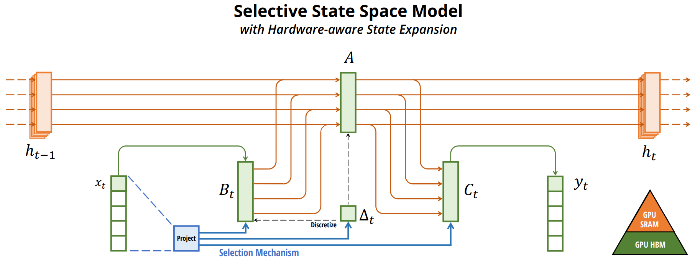
Mamba further improves SSM-based sequence modeling by introducing a selective state space mechanism. The key idea is to make certain state-space parameters input-dependent, so that the model can selectively retain, update, or forget information according to the content of the current token. In a simplified form, this can be viewed as \[h_t = \bar{A}(x_t)h_{t-1} + \bar{B}(x_t)x_t, \qquad y_t = C(x_t)h_t,\] where the transition and output mechanisms depend on the input. This selectivity helps address a major limitation of earlier SSMs: fixed dynamics are efficient but may be less capable of content-based reasoning, which is crucial in language modeling.
Compared with Transformers, Mamba has two important advantages. First, it scales approximately linearly with sequence length, whereas standard self-attention has quadratic complexity in the sequence length. Second, it supports efficient autoregressive inference because the hidden state can be updated recurrently without recomputing attention over all previous tokens. Empirical studies show that Mamba achieves competitive performance on language modeling and other sequence modeling tasks, especially in settings involving long contexts. Therefore, Mamba can be viewed as a bridge between the sequential recurrence of RNNs and the content-aware representation learning of Transformers: it retains a compact recurrent state while introducing input-dependent selection to improve expressiveness.
3.4 Reinforcement Learning
Reinforcement learning is a core area of ML that studies how agents learn to make sequential decisions by interacting with uncertain and dynamic environments. Unlike supervised learning, where models learn from labeled datasets, RL agents acquire optimal behaviors through trial and error, guided by feedback signals in the form of rewards or penalties. This learning paradigm has been widely applied in various domains, including robotics, game playing, and autonomous systems.
MDPs, introduced in Section 2.4, provide a useful formal mathematical framework for RL, since an MDP is a discrete-time process modeling sequential decision-making under uncertainty. An MDP captures environments where outcomes are influenced both by stochastic transitions and the agent’s actions. In the RL setting, the MDP is defined by a tuple \((S, A, P, R)\), where \(S\) is a finite set of states, \(A\) is a finite set of actions, \(P(s' \mid s, a)\) denotes the transition probability of moving from state \(s\) to state \(s'\) after taking action \(a\), and \(R(s, a)\) is the reward function that specifies the immediate (one-period) reward received for performing action \(a\) in state \(s\).
Recall that a policy \(\pi: S \rightarrow A\) is a mapping from states to actions, specifying what action to take in a given state, or a mapping from states to a probability distribution over the set of actions in the case of a randomized policy, written as \(\pi(a|s)\). The objective is to maximize cumulative discounted rewards given by \[\sum_{t=0}^T \gamma^t R(s_t,a_t),\] where \(s_t\) and \(a_t\) are the state and action taken at time \(t\), with \(a_t = \pi(s_t)\) or \(a_t \sim \pi(\cdot|s_t)\) for a randomized policy, and \(\gamma \in [0,1]\) is the discount factor.
RL often works with the Q-function, which gives the expected return of taking action \(a\) in state \(s\), and then following the optimal policy thereafter: \[Q(s,a) = R(s,a) + \sum_{s^\prime \in S} P(s^\prime \mid s,a) \gamma V^*(s^\prime), ~\forall s \in S,\] where recall that \(V^*\) is the optimal value function.
RL methods are designed to work without explicit knowledge of the underlying MDP, i.e., transition probabilities and reward functions may not be explicitly known but are learned from sampled data gathered through trial and error, experience, or simulation. One major category of classical RL methods is value-based approaches, which focus on learning the value function or action-value function representing expected cumulative rewards for states or state-action pairs. These methods derive policies indirectly from learned value functions without explicitly maintaining policies. A well-known example is Q-learning, an off-policy algorithm that learns the Q-function using the following update rule: \[Q(s_t,a_t) \gets Q(s_t,a_t) + \alpha \left[ R(s_t,a_t) + \gamma \max_a Q(s_{t+1},a) - Q(s_t,a_t) \right],\] where \(\alpha\) is the learning rate. The form of the update rule is the same as that of stochastic approximation methods treated in Section 2.3.
Q-learning guarantees convergence to the optimal Q-function as long as all state-action pairs are visited infinitely often and the learning rate diminishes appropriately. However, its main limitation is that it must store a value for each possible state-action pair, making it impractical if the state space or action space is too large, which is often the case in practical applications due to the curse of dimensionality.
Vibe coding prompt.
Write a minimal Python implementation of tabular Q-learning
from scratch. Maintain a Q-table, use epsilon-greedy
exploration for action selection, update the Q-values using
the temporal-difference rule, and train the agent by
interacting with the environment over multiple episodes.Generated Python implementation.
import numpy as np
class QLearningAgent:
def __init__(self, num_states, num_actions,
alpha=0.1, gamma=0.99, epsilon=0.1):
self.num_states = num_states
self.num_actions = num_actions
self.alpha = alpha
self.gamma = gamma
self.epsilon = epsilon
self.Q = np.zeros((num_states, num_actions))
def select_action(self, state):
if np.random.rand() < self.epsilon:
return np.random.randint(self.num_actions)
return np.argmax(self.Q[state])
def update(self, state, action, reward, next_state):
td_target = reward + self.gamma * np.max(self.Q[next_state])
td_error = td_target - self.Q[state, action]
self.Q[state, action] += self.alpha * td_error
def train(self, env, num_episodes):
for _ in range(num_episodes):
state = env.reset()
done = False
while not done:
action = self.select_action(state)
next_state, reward, done = env.step(action)
self.update(state, action, reward, next_state)
state = next_stateDRL integrates RL with DL to handle large or continuous state spaces by approximating value functions or policies with neural networks, enabling learning from high-dimensional raw inputs such as images or audio.
A prominent DRL method is the Deep Q-Network (DQN), which extends Q-learning by using a neural network parameterized by \(\theta\) to approximate the Q-function \(Q(s,a;\theta)\). Instead of a Q-lookup table, the network takes state \(s\) as input and is able to output Q-values for all actions, allowing generalization across similar states and scalability to large spaces.
Training the Q-network involves minimizing the Bellman error: \[L(\theta) = \mathbb{E} \left[ \left( y_t - Q(s_t, a_t; \theta) \right)^2 \right],\] where the target \[y_t = r_{t+1} + \gamma \max_a Q(s_{t+1}, a; \theta^-),\] where \(r_{t+1} := R(s_{t+1},a_{t+1})\) and \(\theta^-\) denotes the parameters of a periodically updated target network used for stabilization. The network weights are updated via SGD to reduce this loss.
This framework enables DRL agents to effectively learn optimal policies in complex, high-dimensional environments beyond the reach of traditional tabular RL methods.
The key components of Deep Q-Learning (DQL) are the following:
Experience Replay: One of the challenges in training neural networks in RL is the correlation between consecutive experiences, which can lead to instability during training. To address this, DQL uses an experience replay buffer. During training, the agent stores its experiences \((s_t, a_t, r_{t+1}, s_{t+1})\) in a replay buffer. When updating the Q-network, a mini-batch of past experiences is sampled randomly from this buffer, breaking the correlation between consecutive experiences and stabilizing training by providing a more diverse set of experiences.
Target Network: Another innovation in DQL is the use of a target network to improve training stability. Instead of using the same network to compute both the current and target Q-values, DQL maintains a separate target network with parameters \(\theta^-\). This target network is used to compute the target Q-values \(\max_a Q(s_{t+1}, a; \theta^-)\), and its parameters are periodically updated to match the parameters of the Q-network \(\theta\). This prevents the network from chasing a moving target during training, which can lead to divergence.
Epsilon-Greedy Exploration: In RL, there is a trade-off between exploration (trying new actions to discover more about the environment) and exploitation (choosing actions that are known to give high rewards). DQL typically uses an epsilon-greedy strategy for action selection. With probability \(\epsilon\), the agent chooses a random action to explore the environment, and with probability \(1 - \epsilon\), it selects the action with the highest Q-value (i.e., it exploits its current knowledge). The value of \(\epsilon\) is often decayed over time to encourage more exploration early in training and more exploitation as the agent learns.
Convergence of tabular Q-learning.
We next state a classical convergence result for tabular Q-learning, following the stochastic-approximation approach of Tsitsiklis (1994).
Consider a finite discounted MDP with discount factor \(\gamma\in(0,1)\). For each state–action pair \(x=(s,a)\), define the Bellman optimality operator \[(FQ)(s,a) := r(s,a)+\gamma \sum_{s'\in S} P(s' \mid s,a)\max_{a'\in A} Q(s',a').\] Then the optimal action-value function \(Q^*\) is the unique fixed point of \(F\), i.e., \[Q^* = FQ^*.\]
The tabular Q-learning update can be written as \[Q_{t+1}(s_t,a_t) = Q_t(s_t,a_t) + \alpha_t(s_t,a_t) \Bigl( r_t+\gamma \max_{a'}Q_t(s_{t+1},a')-Q_t(s_t,a_t) \Bigr),\] while \(Q_{t+1}(s,a)=Q_t(s,a)\) for \((s,a)\neq (s_t,a_t)\). Equivalently, for each \(x=(s,a)\), \[Q_{t+1}(x) = Q_t(x)+\alpha_t(x)\Bigl((FQ_t)(x)-Q_t(x)+M_{t+1}(x)\Bigr),\] where \[M_{t+1}(x) = \mathbf{1}\{x=(s_t,a_t)\} \Bigl( r_t+\gamma \max_{a'}Q_t(s_{t+1},a')-(FQ_t)(x) \Bigr)\] is a martingale-difference noise term conditional on the past.
Theorem (Almost sure convergence of Q-learning). Assume that:
the state space and action space are finite;
every state–action pair is visited infinitely often almost surely;
for every \((s,a)\), the stepsizes satisfy \[\sum_{t=0}^{\infty} \alpha_t(s,a)=\infty, \qquad \sum_{t=0}^{\infty} \alpha_t(s,a)^2<\infty;\]
rewards have bounded second moments.
Then \[Q_t(s,a)\to Q^*(s,a) \qquad\text{almost surely for every }(s,a)\in S\times A.\]
Proof (Proof sketch based on Tsitsiklis (1994)). The proof has three main steps.
Step 1: \(F\) is a contraction. For any two action-value functions \(Q\) and \(\widetilde Q\), \[\begin{aligned} |(FQ)(s,a)-(F\widetilde Q)(s,a)| &= \gamma\left| \sum_{s'}P(s' \mid s,a) \Bigl( \max_{a'}Q(s',a')-\max_{a'}\widetilde Q(s',a') \Bigr) \right| \\ &\le \gamma \sum_{s'}P(s' \mid s,a) \max_{a'}|Q(s',a')-\widetilde Q(s',a')| \\ &\le \gamma \|Q-\widetilde Q\|_\infty . \end{aligned}\] Taking the supremum over \((s,a)\) yields \[\|FQ-F\widetilde Q\|_\infty \le \gamma \|Q-\widetilde Q\|_\infty.\] Since \(\gamma<1\), \(F\) is a contraction in the sup norm. Hence, by Banach’s fixed-point theorem, it admits a unique fixed point \(Q^*\).
Step 2: Q-learning is an asynchronous stochastic approximation scheme. The update above has the form \[Q_{t+1}(x)=Q_t(x)+\alpha_t(x)\bigl((FQ_t)(x)-Q_t(x)+M_{t+1}(x)\bigr),\] where only the currently sampled component is updated. Moreover, conditional on the filtration generated by the past, \[\mathbb{E}[M_{t+1}(x)\mid \mathcal{F}_t]=0,\] so the noise is unbiased, and the bounded-second-moment assumption implies that its conditional variance is controlled.
Step 3: apply the asynchronous stochastic approximation theorem. Because \(F\) is a contraction, each component is updated infinitely often, and the stepsizes satisfy the Robbins–Monro conditions, the general convergence theorem for asynchronous stochastic approximation applies. Therefore, \[Q_t \to Q^* \qquad\text{almost surely}.\] This proves the result.
Notes and References
For more details on deep learning, see LeCun et al. (2015) and the book by Goodfellow et al. (2016). For training via advanced gradient descent, see Bengio et al. (1994; Glorot and Bengio 2010; LeCun et al. 2002), and for the various weight initialization strategies, see Glorot and Bengio (2010; He et al. 2015; LeCun et al. 2002).
More on convolutional neural networks can be found in the survey by Z. Li et al. (2021).
For more on recurrent neural network, see Schuster and Paliwal (1997), with long short-term memory networks found in Hochreiter and Schmidhuber (1997).
The Transformer architecture was introduced by Vaswani et al. (2017),
forming the basis for the Generative Pre-trained Transformer (GPT) (Radford et al. 2018) and eventually the enormous AI splash caused by OpenAI’s release of GPT-4o in May 2024.
For more on sentiment analysis, see Pang et al. (2008), with specific word embeddings Word2Vec (Mikolov et al. 2013), GloVe (Pennington et al. 2014), and BERT (Devlin et al. 2019); see also Agrawal et al. (2021) for its general mathematical formulation as a minimum-distortion embedding (MDE) problem.
Peng et al. (2022) show that backpropagation is essentially IPA (see Section 2.5) and provide a mathematically rigorous framework for establishing when the gradient estimation is unbiased. Further developments connecting SO and AI/ML are described in the next chapter.
面向 AI 的仿真优化
第 04 章 · 章节速读
当训练或决策的计算预算有限时，仿真优化帮助 AI 更有效地利用每一次模型查询和模拟。
- 前向学习
- 只查询损失值，也能通过有限差分或随机方向估计梯度。
- 低秩估计
- 在较小子空间中估计更新方向，权衡计算成本与估计噪声。
- 策略改进与探索
- 策略梯度更新行动规则；探索策略决定把样本花在哪里。
- 蒙特卡洛树搜索
- 模拟未来的行动序列，在探索与利用之间平衡，选择下一步。
公平比较方法时，要对齐查询预算或计算时间，不能只比较更新次数。
展开完整原文（英文）
This chapter presents applications exemplifying the synergy between simulation optimization and AI/ML methods. Section 4.2 describes an alternative ANN training method to traditional BP algorithms, based on stochastic gradient estimation. Section 4.3 proposes advanced policy gradient approaches in DRL from the perspective of stochastic gradient estimation. Section 4.4 first reviews classical \(Q\)-learning and then follows with alternative exploration policies. Monte Carlo tree search is introduced in Section 4.5, where the focus is on a classic tree selection policy and a proposed improvement. The chapter culminates in Section 4.6 by highlighting AlphaGo and its many successors as a showcase for mutually beneficial research cross-fertilization between simulation optimization and AI/ML, which led to the initial success of AlphaGo in game playing, and then paved the way for research breakthroughs in medicine, healthcare, and other industries.
4.1 Training Neural Networks via Low-Rank Gradient Estimation
Recent work has proposed a principled low-rank gradient estimation framework for large neural networks, especially large language models (LLMs), with the goal of simultaneously reducing memory consumption and controlling stochastic gradient noise (Li et al. 2026). The starting point is the observation that many gradient matrices arising in neural network training are effectively low-rank, so the main descent signal is often concentrated in a relatively low-dimensional subspace. This suggests that, instead of estimating and storing the full gradient matrix, one may project the gradient estimation problem onto a random low-dimensional subspace and then lift the result back to the original parameter space.
Consider a matrix-valued trainable parameter block \(\Theta \in \mathbb{R}^{m\times n}\). The training problem can be written as \[\min_{\Theta \in \mathbb{R}^{m\times n}} \mathbb{E}_{\xi \sim p(\cdot;\Theta)}[F(\xi,\Theta)],\] where \(\xi\) denotes the randomness in training, such as minibatch sampling, dropout, or environment interaction. The corresponding population gradient is \[g(\Theta) := \nabla_\Theta \mathbb{E}_{\xi \sim p(\cdot;\Theta)}[F(\xi,\Theta)].\] The framework of Li et al. (2026) unifies two major gradient-estimation paradigms used in modern machine learning: the infinitesimal perturbation analysis (IPA) family, which includes standard backpropagation when the randomness is exogenous to \(\Theta\), and the likelihood-ratio (LR) family, which includes score-function estimators and zeroth-order methods when the sampling distribution depends on \(\Theta\).
![Illustration of the proposed low-rank gradient estimator and the lazy-update gradient descent framework. The gradient estimator with respect to \(\Theta\) is computed via a rank- \(r\) reparameterization using an auxiliary variable \(B\) and a randomly sampled projection matrix \(V\) (yellow trapezoids), and then lifted back to the original parameter space by multiplying \(V^\top\) (blue block). In the lazy-update scheme, the same projection direction \(V_0\) is reused for \(K\) inner steps before switching to a new projection direction \(V_1\) (green trapezoids).](assets/images/lowrank_SO.png)
The core construction is to choose a random low-rank projection matrix \[V \in \mathbb{R}^{n\times r}, \qquad r \ll \min\{m,n\},\] and introduce an auxiliary variable \[B \in \mathbb{R}^{m\times r}.\] One then locally reparameterizes the model by \[\Theta \mapsto \Theta + BV^\top,\] computes gradients with respect to the lower-dimensional variable \(B\), and finally lifts the update back to the original matrix space by multiplying with \(V^\top\). This leads to two low-rank gradient estimators: \[\hat g_{\mathrm{LowRank\text{-}IPA}}(\xi,V,\Theta) := \left. \nabla_B F(\xi,\Theta + BV^\top) \right|_{B=0}V^\top,\] and \[\hat g_{\mathrm{LowRank\text{-}LR}}(\xi,V,\Theta) := F(\xi)\left. \nabla_B \log p(\xi;\Theta + BV^\top) \right|_{B=0}V^\top.\] These estimators are low-rank by construction, since each update lies in the subspace induced by \(V\).
A key notion introduced in Li et al. (2026) is weak unbiasedness. A gradient estimator \(\hat g(\Theta)\) is called weakly unbiased if \[\mathbb{E}[\hat g(\Theta)] = c\, g(\Theta)\] for some scalar \(c>0\), and strongly unbiased if \(c=1\). Weak unbiasedness is often sufficient in optimization, because multiplying the gradient by a positive scalar preserves its descent direction and the scale can be absorbed into the step size. Let \[P := VV^\top.\] Then a sufficient condition for weak unbiasedness is the isotropy condition \[\mathbb{E}[VV^\top] = \mathbb{E}[P] = cI_n.\] Under this condition, both the LowRank-IPA and LowRank-LR estimators are weakly unbiased, and they become strongly unbiased when \(c=1\) (Li et al. 2026).
To reduce the instability caused by resampling a new subspace at every step, Li et al. (2026) further propose a lazy-update strategy. At each outer iteration \(t\), a single random subspace \(V_t\) is sampled and then reused for \(K\) inner stochastic gradient steps. Instead of updating the full matrix \(\Theta\) directly, the algorithm optimizes the low-dimensional variable \(B\) inside the subspace spanned by \(V_t\): \[\Theta^{(t,k)} = \Theta_t + B^{(t,k)}V_t^\top, \qquad k=0,1,\dots,K-1.\] After \(K\) inner steps, the full parameter is updated by \[\Theta_{t+1} = \Theta_t + B^{(t,K)}V_t^\top.\] This strategy amortizes the cost of sampling the subspace and reduces the variance introduced by excessively frequent changes of projection directions.
The quality of the low-rank gradient estimator is analyzed through its mean squared error (MSE). Let \(\Sigma_\xi\) denote the covariance contribution from the underlying IPA/LR estimator, and let \[\Sigma_\Theta := g(\Theta)^\top g(\Theta).\] Then the MSE of the low-rank estimator admits the decomposition \[\mathrm{MSE} = \operatorname{tr}\!\bigl(\Sigma_\xi \,\mathbb{E}[P^2]\bigr) + \operatorname{tr}\!\bigl(\Sigma_\Theta \,\mathbb{E}[P^2-c^2I_n]\bigr) + (1-c)^2\operatorname{tr}(\Sigma_\Theta).\] This formula shows that the projection distribution affects the estimator only through \(\mathbb{E}[P^2]\), and it cleanly separates three sources of error: the intrinsic variance of the underlying stochastic gradient estimator, the additional variance induced by random projection, and the scalar bias caused by weak rather than strong unbiasedness.
Based on this decomposition, Li et al. (2026) formulate the design of the projection distribution as a constrained optimization problem. In the instance-independent setting, where no information about the problem-specific covariance structure is available, they optimize a worst-case upper bound and show that the optimal projector satisfies \[V^\top V = \frac{cn}{r}I_r \qquad \text{almost surely.}\]
Theorem 4.1 shows that, in the absence of instance-specific second-moment information, the optimal design is to use balanced orthogonal subspaces. This provides a theoretical justification for structured samplers such as Haar–Stiefel sampling and uniform coordinate-subspace sampling.
Proposition (MSE decomposition of the low-rank estimator). Let \[P := VV^\top, \qquad \Sigma_\xi := \mathbb{E}_\xi\!\left[ \bigl(\hat g_{\mathrm{IPA/LR}}(\xi,\Theta)-g(\Theta)\bigr)^\top \bigl(\hat g_{\mathrm{IPA/LR}}(\xi,\Theta)-g(\Theta)\bigr) \right],\] and \[\Sigma_\Theta := g(\Theta)^\top g(\Theta).\] Then the mean squared error of the low-rank gradient estimator satisfies \[\mathrm{MSE} := \mathbb{E}_{V,\xi}\bigl[\|\hat g_{\mathrm{LowRank\text{-}IPA/LR}}(\xi,V,\Theta)-g(\Theta)\|_F^2\bigr]\] \[= \operatorname{tr}\!\bigl(\Sigma_\xi \,\mathbb{E}[P^2]\bigr) + \operatorname{tr}\!\bigl(\Sigma_\Theta \,\mathbb{E}[P^2-c^2I_n]\bigr) + (1-c)^2\operatorname{tr}(\Sigma_\Theta).\] Equivalently, \[\mathrm{MSE} = \operatorname{tr}\!\bigl((\Sigma_\xi+\Sigma_\Theta)\mathbb{E}[P^2]\bigr) + (1-2c)\operatorname{tr}(\Sigma_\Theta).\]
Proof (Proof sketch). Write \[\mu := g(\Theta), \qquad \delta(\xi):=\hat g_{\mathrm{IPA/LR}}(\xi,\Theta)-\mu,\] so that \(\mathbb{E}_\xi[\delta(\xi)]=0\) by the unbiasedness of the underlying IPA/LR estimator. Since the low-rank estimator is obtained by right-multiplying the full estimator by \(P=VV^\top\), we have \[\hat g_{\mathrm{LowRank\text{-}IPA/LR}}-\mu = \delta(\xi)P+\mu(P-I_n).\] Therefore, \[\|\hat g_{\mathrm{LowRank\text{-}IPA/LR}}-\mu\|_F^2 = \|\delta(\xi)P\|_F^2 + \|\mu(P-I_n)\|_F^2 + 2\,\mathrm{tr}\!\Big(P^\top \delta(\xi)^\top \mu(P-I_n)\Big).\] Taking expectation over \((V,\xi)\), the cross term vanishes because \(P\) is independent of \(\xi\) and \(\mathbb{E}_\xi[\delta(\xi)]=0\). For the first term, using \(P^\top=P\) and the cyclicity of trace, \[\mathbb{E}_{V,\xi}\|\delta(\xi)P\|_F^2 = \operatorname{tr}\!\bigl(\Sigma_\xi\,\mathbb{E}[P^2]\bigr).\] For the second term, \[\mathbb{E}_V\|\mu(P-I_n)\|_F^2 = \operatorname{tr}\!\bigl(\Sigma_\Theta\,\mathbb{E}[(P-I_n)^2]\bigr).\] Since \[(P-I_n)^2=P^2-2P+I_n\] and \(\mathbb{E}[P]=cI_n\), we obtain \[\mathbb{E}[(P-I_n)^2] = \mathbb{E}[P^2-c^2I_n]+(1-c)^2I_n.\] Substituting this into the above display yields the first decomposition. The second form follows by regrouping the terms.
Proposition 4.1 shows that the projection law affects the estimator only through the second moment \(\mathbb{E}[P^2]\). Thus, once the weak unbiasedness constraint \(\mathbb{E}[P]=cI_n\) is imposed, the design of the random subspace reduces to controlling \(\mathbb{E}[P^2]\). When no reliable information on the problem-dependent matrix \(\Sigma_\xi+\Sigma_\Theta\) is available, a natural robust strategy is to minimize the worst-case upper bound induced by \(\operatorname{tr}(\mathbb{E}[P^2])\).
Theorem (Optimal instance-independent random projector). Consider the admissible class of random projection matrices \(V\in\mathbb{R}^{n\times r}\) satisfying \[P=VV^\top, \qquad \mathbb{E}[P]=cI_n.\] Then \[\min \operatorname{tr}\!\bigl(\mathbb{E}[P^2]\bigr)=\frac{n^2c^2}{r}.\] Moreover, equality holds if and only if \[V^\top V=\frac{cn}{r}I_r \qquad \text{almost surely.}\]
Proof (Proof sketch). Fix any feasible random projector \(P=VV^\top\). Since \(\operatorname{rank}(P)\le r\) almost surely and \(P\succeq 0\), let its nonzero eigenvalues be \[\lambda_1(P),\dots,\lambda_r(P)\ge 0.\] Then \[\operatorname{tr}(P)=\sum_{i=1}^r \lambda_i(P), \qquad \operatorname{tr}(P^2)=\sum_{i=1}^r \lambda_i(P)^2.\] By Cauchy–Schwarz, \[\operatorname{tr}(P^2) = \sum_{i=1}^r \lambda_i(P)^2 \ge \frac1r\Big(\sum_{i=1}^r \lambda_i(P)\Big)^2 = \frac1r\,\operatorname{tr}(P)^2.\] Taking expectation and using Jensen’s inequality gives \[\mathbb{E}[\operatorname{tr}(P^2)] \ge \frac1r\,\mathbb{E}[\operatorname{tr}(P)^2] \ge \frac1r\bigl(\mathbb{E}[\operatorname{tr}(P)]\bigr)^2.\] Now, because \(\mathbb{E}[P]=cI_n\), \[\mathbb{E}[\operatorname{tr}(P)] = \operatorname{tr}(\mathbb{E}[P]) = \operatorname{tr}(cI_n) = cn.\] Hence \[\operatorname{tr}\!\bigl(\mathbb{E}[P^2]\bigr) = \mathbb{E}[\operatorname{tr}(P^2)] \ge \frac{(cn)^2}{r}.\] This proves the lower bound.
For equality to hold, both inequalities above must be tight. First, equality in Cauchy–Schwarz requires all nonzero eigenvalues of \(P\) to be equal almost surely. Second, equality in Jensen requires \(\operatorname{tr}(P)\) to be constant almost surely. Combining the two facts yields that the \(r\) nonzero eigenvalues of \(P\) must all equal \(cn/r\). Equivalently, \[V^\top V=\frac{cn}{r}I_r \qquad \text{almost surely.}\] Conversely, if this condition holds, then \(P\) has exactly \(r\) identical nonzero eigenvalues \(cn/r\), so the lower bound is attained.
Theorem 4.1 has a clear geometric interpretation. Among all weakly unbiased rank-\(r\) random projectors, the optimal one is the projector that spreads its projection energy as evenly as possible across the selected \(r\) directions. This is why balanced orthogonal constructions, such as Haar–Stiefel sampling and uniform coordinate-subspace sampling, become optimal in the information-agnostic setting.
In the instance-dependent setting, when partial information about the second-moment matrix \[\Sigma := \Sigma_\xi + \Sigma_\Theta\] is available, the projection distribution can be adapted to the spectrum of \(\Sigma\). Writing \[\Sigma = Q \,\mathrm{diag}(\sigma_1,\dots,\sigma_n)Q^\top, \qquad \sigma_1 \ge \cdots \ge \sigma_n \ge 0,\] the optimal design allocates more sampling effort to directions with larger \(\sigma_i\). The resulting inclusion probabilities take a water-filling-type form, \[\pi_i^\star = \min\left\{ 1,\; \frac{(r-t)\sqrt{\sigma_i}} {\sum_{j:\pi_j^\star<1}\sqrt{\sigma_j}} \right\},\] where \(t=\#\{i:\pi_i^\star=1\}\). Thus, important eigendirections may be selected with probability one, while less important directions are sampled less frequently. Under strong unbiasedness, the theory further shows that when \(\operatorname{rank}(\Sigma)\le r\), the optimally projected low-rank estimator can achieve MSE no larger than that of the full-rank estimator, while still reducing memory from order \(mn\) to order \(mr\) (Li et al. 2026).
The empirical results reported in Li et al. (2026) support these theoretical findings. In RoBERTa-large fine-tuning on six classification datasets, the proposed structured low-rank LR estimators outperform Gaussian low-rank baselines and remain competitive with full backpropagation, while achieving substantial memory reduction. In particular, the reported peak GPU memory is reduced from \(16.7\) GB for standard full backpropagation to \(3.83\) GB for LowRank-LR. In autoregressive LLaMA pretraining, the Stiefel-based LowRank-IPA estimator consistently achieves lower training and evaluation losses than Gaussian subspace sampling across model sizes from 20M to 100M parameters. These results suggest that low-rank gradient estimation provides a principled route to scalable, memory-efficient, and statistically effective neural network training.
4.2 Training Neural Networks via Forward Learning
The BP algorithm introduced in Section 3.3 requires a forward pass and a backward pass for computing the gradient. For deep neural networks, this could become computationally burdensome. LR-based stochastic gradient estimation methods from Section 2.5 offer an alternative approach that avoids the backward pass.

However, implementation of LR-based estimators requires injecting stochasticity into the training process, depicted in Figure 4.2, showing the augmented neuron structure from Figure 3.5 in Section 3.3 to include the injected noise, so that the summed input from the previous layer becomes \[v_i^{(t)}(n) = \sum_{j=0}^{m_{t-1}} \theta_{ij}^{(t)} x_j^{(t)}(n) + r_i^{(t)}(n),\] where \(r_i^{(t)}(n)\) denotes the injected noise at the \(i\)th neuron of the \(t\)-th layer of the \(n\)th data point.
The push-out LR method can then be used to derive the following stochastic gradient estimator for \(\nabla_{\theta} \mathbb E[L]\): \[\left(\widehat{\nabla_{\theta}} \mathbb E[L]\right)_{ij,t} = L(X^{(\tau)}, O(n)) \cdot \left[ - x^{(t)}_j(n) \frac{\partial \ln f_{i,t}(z)}{\partial z} \Big|_{z = r^{(t)}_i(n)} \right],\] where \(f_{i,t}(\cdot)\) is the p.d.f. of the injected noise \(r_i^{(t)}\).
As mentioned in Section 2.5, one of the main advantages of LR-based methods is that they can handle discontinuous loss and activation functions, which would be problematic for traditional BP. The push-out LR estimator does not require smoothness in the activation or loss functions, making it more flexible and stable in training neural networks, particularly in avoiding issues like vanishing gradients that occur in BP when certain activation functions lead to very small gradients.
Although both BP and the LR method have a theoretical computational complexity of \(O(m^2 \tau)\) for the gradient or first derivative, where \(m\) is the number of neurons and \(\tau\) is the number of layers, the LR method is computationally more efficient in practice, since it avoids the backwards pass, which also means it does not suffer from the vanishing gradient problem that BP faces in very deep networks. Moreover, the LR method can be applied to black-box scenarios, i.e., it can be implemented without having to know the form of the activation function or \(\{v_i{(t)}\}\). Therefore, while BP remains essential for certain tasks requiring high precision, the LR method offers a computationally efficient and scalable alternative for large-scale deep networks, especially where computational resources are a limiting factor. Finally, the LR method has lower computational complexity for higher-order derivatives, so that developing optimizers using LR-estimated Hessian matrices could be a promising research direction.
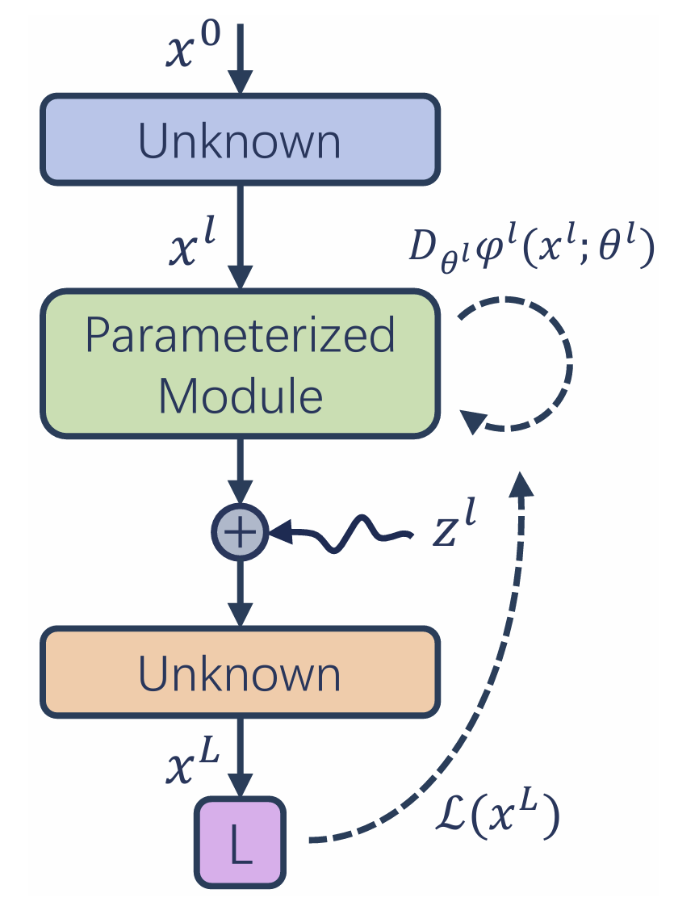
A generalization called the unified likelihood ratio (ULR) method, illustrated in Figure 4.3, is able to train complex networks with reduced computation time and complexity, demonstrating that forward learning techniques such as the ULR method can provide an alternative pathway to gradient estimation that circumvents the traditional BP bottleneck, enabling more efficient and robust network training.
The ULR method offers a compelling advantage over traditional BP methods, providing comparable or even superior accuracy. Whereas BP focuses on optimizing a loss function to minimize error, the ULR method integrates uncertainty estimation, enabling the model to gauge the reliability of its predictions. This added layer of uncertainty allows ULR-based models to better handle complex and noisy data, improving generalization and leading to similar or better performance on unseen test data. By considering the inherent uncertainty in the model’s outputs, the ULR method helps make more informed decisions, ensuring that predictions are not only accurate but also reliable in varied scenarios.
In addition to its comparable accuracy, the ULR method significantly enhances robustness against adversarial attacks. Adversarial attacks involve subtle perturbations designed to deceive the model into making incorrect predictions. By explicitly quantifying uncertainty, the ULR method helps the model avoid regions of input space where it is unsure, making it more cautious and less likely to be tricked by small, imperceptible changes in the data. This ability to assess and account for uncertainty strengthens the model’s resilience to adversarial perturbations, making ULR-based models more robust and secure compared to traditional BP models that may be vulnerable to such attacks.
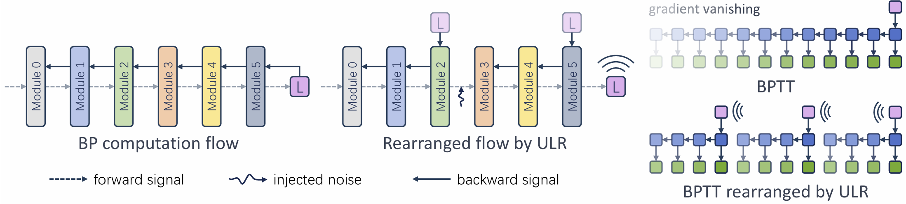
The ULR method can reorganize computational graphs in neural networks, addressing key limitations of Backpropagation Through Time (BPTT), as shown in Figure 4.5. The ULR method allows for the partitioning of complex recursive computation flows into smaller, parallelizable subsets by strategically injecting noise into specific modules. This flexibility enables the training process to bypass the recursive dependencies inherent in traditional BP methods. By doing so, the ULR method improves computational efficiency, adapts better to high-performance hardware, and facilitates modular training without disrupting the global training objective.
This reorganization is particularly advantageous for RNNs, which suffer from deep recursion in BPTT, leading to issues like vanishing gradients and inefficient parallelization. By decoupling the computation graph into independent subgraphs, the ULR method reduces computational overhead and accelerates training while maintaining or enhancing the accuracy of gradient estimation. This innovation demonstrates how the ULR method overcomes the rigidity of BPTT and expands the design and efficiency potential of neural network training pipelines. However, LR has not been verified on modern-scale architectures, such as Transformers, leaving room for further research to improve the scalability of forward learning, with additional references along this line provided at the end of the chapter.
4.3 Policy Gradient-based Reinforcement Learning
Policy gradient-based RL is an important approach within modern AI, especially when dealing with complex decision-making and control tasks. Unlike value-based methods, which focus on estimating the value of actions or states, policy gradient methods directly optimize the policy itself by adjusting its parameters to maximize expected rewards. This approach is particularly advantageous in environments with large or continuous action spaces, where traditional value-based methods may struggle due to the need for discretization, which can lead to computational challenges and suboptimal solutions.
Policy gradient methods have been applied successfully across a wide range of domains, including robotics, game playing, and financial modeling. A notable example is their use in AlphaGo, where policy gradients were instrumental in training the policy network that guided the AI’s decision-making in the game of Go.
The core of policy gradient methods is the policy gradient theorem, which provides a way to calculate the gradient of the expected cumulative reward with respect to the policy parameters. The theorem essentially states the unbiasedness of the LR-based estimator introduced in Section 2.5 for the policy gradient RL setting:
\[\begin{equation} \nabla_\theta J(\theta) = E \left[ \sum_{t=0}^{T} \nabla_\theta \log \pi_\theta (a_t \mid s_t) A(s_t, a_t) \right], \end{equation}\] where \(J(\theta)\) denotes the expected cumulative reward, \(\pi_\theta(\cdot \mid s)\) is the randomized policy parameterized by \(\theta\), and \(A(s, a)\) is the advantage function, which evaluates the relative benefit of taking action \(a\) in state \(s\) compared to the average outcome expected from \(s\) under the current policy. The advantage function can be defined as \[A(s_t, a_t) = G_t - V^\pi(s_t),\] where \(G_t\) is the return or cumulative reward from time step \(t\) onward and \(V^\pi\) is the value function under policy \(\pi\).
The policy gradient theorem forms the basis for using gradient ascent to iteratively refine the policy. The advantage function \(A(\cdot, \cdot)\) helps reduce the variance in gradient estimates without introducing bias. To further reduce the variance in gradient estimates, the policy gradient can be rewritten using a general baseline function \(b(\cdot)\): \[\begin{equation} \nabla_\theta J(\theta) = E \left[ \sum_{t=0}^{T} \nabla_\theta \log \pi_\theta (a_t \mid s_t) \left( G_t - b(s_t) \right) \right], \end{equation}\]
where the advantage function formulation given by (4.1) is obtained by taking the baseline function as the value function, i.e., \(b(s) = V^\pi(s)\). In many cases, \(V^\pi(s_t)\) serves as an effective baseline, as it stabilizes learning by focusing updates on the relative advantage of actions rather than their absolute returns.
The refined policy gradient theorem given by (4.2) enables stable learning by guiding the gradient ascent in a direction that maximizes the expected cumulative reward, while reducing the impact of high variance in the estimates. This improvement is critical in real-world applications, where stable convergence is essential.
A key strength of policy gradient methods is their ability to handle high-dimensional or continuous action spaces, where traditional value-based methods require the action space to be discretized, which can significantly increase computational complexity and degrade performance. Policy gradient methods, by contrast, naturally manage these spaces by optimizing a continuous policy directly.
Policy gradient methods generally include the following steps:
Policy Representation: The policy is typically represented as a parameterized function, often a neural network. In most cases, the policy is expressed as \(\pi_\theta(a \mid s)\), which outputs a probability distribution over possible actions \(a\) given the current state \(s\). For example, in environments with discrete actions, the policy could represent a softmax function: \[\pi_\theta(a \mid s) = \frac{e^{f_\theta(s, a)}}{\sum_{a'} e^{f_\theta(s, a')}},\] where \(f_\theta(s, a)\) is a score produced by the neural network for action \(a\) given state \(s\), and \(\theta\) represents the parameters of the policy (i.e., the weights of the neural network).
For environments with continuous actions, the policy can be modeled as a Gaussian distribution, where the neural network outputs the mean \(\mu_\theta(s)\) and variance \(\sigma_\theta(s)\) for the action distribution: \[\pi_\theta(a \mid s) = \frac{1}{\sqrt{2\pi \sigma_\theta(s)^2}} e^{-\frac{(a - \mu_\theta(s))^2}{2 \sigma_\theta(s)^2}}.\] The parameters \(\theta\) are learned such that the policy generates actions that maximize the expected cumulative reward.
Trajectory Sampling: The agent interacts with the environment to generate trajectories \(\omega = (s_0, a_0, r_0, s_1, a_1, r_1, \dots, s_T)\), where \(s_t\) is the state at time \(t\), \(a_t\) is the action taken, and \(r_t:=R(s_t,a_t)\) is the reward received after taking action \(a_t\) in state \(s_t\). These trajectories are used to estimate the expected return for each action taken along the trajectory.
Gradient Estimation: The policy is updated via gradient search, where the gradient is estimated using the policy gradient theorem of (4.1) or (4.2).
The expectation is estimated by sampling a set of trajectories \(\{ \omega^{(i)} \}_{i=1}^{N}\) from the policy \(\pi_\theta\), where the \(i\)th trajectory \(\omega^{(i)} = \{s_0^{(i)}, a_0^{(i)}, r_0^{(i)}, \dots, s_{T}^{(i)}, a_{T}^{(i)}, r_T^{(i)}\}\) consists of a sequence of states, actions, and rewards generated by following \(\pi_\theta\),
and then summing over all time steps \(t\) in each trajectory and averaging over all \(N\) trajectories to obtain the gradient estimate: \[\widehat{\nabla_\theta} J(\theta) = \frac{1}{N} \sum_{i=1}^{N} \sum_{t=0}^{T} \nabla_\theta \log \pi_\theta (a_t^{(i)} \mid s_t^{(i)}) A(s_t^{(i)}, a_t^{(i)}).\]
Policy Update: The gradient estimate is used to update the policy parameters via gradient ascent (stochastic approximation, cf. Section 2.3): \[\theta_{n+1} = \theta_n + \alpha_n \widehat{\nabla_\theta} J(\theta_n).\]
To enhance the performance and stability of policy gradient methods, other advanced techniques besides baseline subtraction are the following:
Actor-Critic Methods: These methods combine the strengths of value-based and policy-based approaches. The “actor” updates the policy parameters, while the “critic” estimates the value function. This dual approach often leads to more efficient and stable learning. The critic is responsible for estimating \(V^{\pi}(s)\), which is then used to compute the advantage \(A(s_t, a_t) = G_t - V^{\pi}(s_t)\).
Trust Region Policy Optimization (TRPO) and Proximal Policy Optimization (PPO): These algorithms are designed to impose constraints on policy updates, helping to prevent large and destabilizing changes to the policy during training. Without such constraints, a single update step could lead to drastic changes in the policy, which may harm learning stability and cause oscillations or even policy collapse. TRPO addresses this issue by ensuring that the new policy remains within a trust region of the old policy, effectively controlling the step size in the policy space. Specifically, Kullback-Leibler (KL) divergence between the old and new policies is kept within a certain threshold, thereby constraining the magnitude of change in each update. PPO simplifies this concept by introducing a clipped objective function that avoids the need for KL divergence constraints. Instead of directly limiting the policy change with a trust region, PPO modifies the objective function to clip the probability ratio between the new and old policies, thus limiting the effect of any single update on the policy. The objective is defined as \[L^{\text{PPO}}(\theta) = E \left[ A(s_t, a_t) \min \left( r_t(\theta), \text{clip}(r_t(\theta), 1 - \epsilon, 1 + \epsilon) \right) \right],\] where \(r_t(\theta) = \frac{\pi_\theta(a_t \mid s_t)}{\pi_{\theta_{\text{old}}}(a_t \mid s_t)}\) represents the probability ratio of the new policy relative to the old policy, and \(\epsilon\) is a hyperparameter that controls the allowable change in the probability ratio. The clipping mechanism in PPO ensures that if the probability ratio \(r_t(\theta)\) deviates too far from 1 (either too large or too small), the objective function is “clipped" to prevent further deviation. This clipping operation provides a simple and effective way to restrict the size of policy updates, thus improving training stability by discouraging large shifts in the policy. In essence, this approach encourages the policy to update only in directions that improve the objective without diverging significantly from the previous policy, maintaining a stable learning process.
Entropy Regularization: To promote exploration, some policy gradient methods include an entropy term in the objective function. This term discourages overly deterministic policies and encourages the exploration of a broader range of actions: \[J(\theta) + \lambda \sum_{t} \mathcal{H}(\pi_\theta(\cdot \mid s_t)),\] where \(\mathcal{H}\) is the entropy of the policy, and \(\lambda\) is a regularization coefficient that controls the strength of the entropy term.
However, despite their successes, policy gradient methods face several challenges:
Sample Efficiency: These methods often require a large number of samples to accurately estimate the gradient, which can be computationally expensive.
Variance in Gradient Estimates: The estimates of the gradient can have high variance, leading to instability during training. PPO algorithms and techniques such as baseline subtraction can help mitigate this problem.
Another important factor is the risk objective controlling for extreme risks or tail events in addition to optimizing a mean objective. We discuss two risk-sensitive objectives here:
An \(\alpha\)-quantile, defined by \(q(\alpha; \theta) = \inf \{ r : F_R(r; \theta) \geq \alpha \}\), can address scenarios where tail risks (extreme outcomes) are critical, such as financial risk assessment or healthcare planning. Unlike expectations, quantiles focus on specific points in the distribution, making them ideal for applications that prioritize risk management over average outcomes. Thus, the RL objective is to optimize a quantile of cumulative rewards rather than an expectation.
A quantile-based policy optimization (QPO) algorithm employing a two-timescale stochastic approximation approach iteratively updates the estimated quantile \(q_k\) as follows: \[q_{k+1} = q_k + \beta_k (\alpha - \textbf{1} \{ U(\omega_k) \leq q_k \}),\] where \(\beta_k\) is a step size, and \(U(\omega_k)\) is the cumulative reward of trajectory \(\omega_k\); and updates the policy parameter \(\theta_k\) via gradient ascent: \[\theta_{k+1} = \phi\left(\theta_k + \gamma_k D(\omega_k; \theta_k, q_k)\right),\] where \(\gamma_k\) is another step size, \(D(\omega_k; \theta_k, q_k)\) is a gradient estimator of the distribution function \(F_R(\cdot; \theta)\), and \(\phi(\cdot)\) ensures \(\theta\) remains in the feasible parameter space. The quantile-based PPO (QPPO) algorithm builds on QPO by integrating ideas from PPO. It permits multiple updates per simulation episode, improving sample efficiency and computational performance by using truncated trajectories and importance sampling to approximate the quantile gradient.
A distortion risk measure (DRM) is defined by \[J(\theta) = \int_{0}^{1} q(1-y;\theta) \, dw(y),\] where \(w(y)\) is a distortion function satisfying \(w(0) = 0\) and \(w(1) = 1\). The gradient of the DRM objective is given by \[\nabla_\theta J(\theta) = -\int_{0}^{1} \nabla_\theta q(y;\theta) \, dw(1-y).\] This gradient formulation highlights the major challenge: terms such as the p.d.f. \(f(\cdot;\theta)\) and the quantile function \(q(\cdot;\theta)\) are generally not explicitly known in DRL. One way to address this is to use an approximation technique that discretizes the integral into \(N\) segments and updates the quantile estimates iteratively.
The DRM-based Policy Optimization (DPO) algorithm leverages a three-timescale SA method to estimate the quantile function, its gradient, and the policy parameters. An accelerated variant called DRM-based PPO (DPPO) incorporates off-policy importance sampling to reuse past trajectories. This modification significantly improves sample efficiency by scaling the importance sampling ratio.
The convergence of these algorithms is rigorously analyzed under conditions such as the boundedness of step sizes, smoothness of the distortion function, and concavity of the objective. The proposed methods converge almost surely to an optimal solution or stationary point, depending on the concavity of \(J(\theta)\).
Numerical experiments also indicate that DPO and DPPO, as well as QPO and QPPO, achieve superior DRM performance compared to baseline algorithms such as REINFORCE and PPO, which demonstrate that DRM optimization offers a means for embedding human risk preferences into RL policies.
4.4 Exploration in Q-learning
Q-learning is an off-policy method, meaning it learns the value of the optimal policy (i.e., the policy that always selects the action with the highest Q-value) while following a different policy during exploration. This characteristic distinguishes Q-learning from on-policy methods, such as SARSA, which learn the value of the policy that the agent currently follows.
In Q-learning, the agent explores the environment using a behavior policy (e.g., \(\epsilon\)-greedy), which might select suboptimal actions, but the algorithm updates its Q-values as if it had followed the optimal policy. This off-policy nature allows Q-learning to learn from experiences that might involve exploratory actions, while still converging to the optimal policy over time.
Despite the effectiveness of Q-learning in finding optimal policies, it faces a fundamental challenge known as the exploration-exploitation trade-off. This problem arises because the agent must balance two conflicting objectives: exploration, where the agent should explore the environment to discover new actions and states that may yield higher rewards, and exploitation, where the agent should consistently choose actions that maximize its cumulative reward based on its current knowledge. Focusing too much on exploitation can cause the agent to miss out on potentially better actions that have not yet been sufficiently explored, while overemphasizing exploration may result in costly effort on less promising actions.
In Q-learning, the agent initially has no knowledge about the environment, and all actions have equal or random Q-values. As the agent interacts with the environment and updates its Q-values, it gradually builds an understanding of which actions are more rewarding. However, because Q-learning is a model-free algorithm and lacks a complete model of the environment, it must actively explore the environment to learn accurate Q-values. Without sufficient exploration, the agent risks converging prematurely to a suboptimal policy that over-exploits its current understanding and misses discovering better long-term strategies.
One common strategy for addressing the exploration-exploitation trade-off is \(\epsilon\)-greedy exploration discussed earlier. Applied to Q-learning, the agent chooses a random action with probability \(\epsilon\) and the action with the highest Q-value with probability \(1 - \epsilon\). The exploration rate \(\epsilon\) is typically decayed over time, starting with a high value to encourage exploration during the early stages of learning and gradually decreasing as the agent gains confidence in its Q-values: \[\epsilon(t) = \epsilon_0 \cdot e^{-\lambda t},\] where \(\epsilon_0\) is the initial exploration rate, \(\lambda\) is the decay factor, and \(t\) is the time step. By decaying \(\epsilon\), the agent can prioritize exploration early on while shifting towards exploitation as it becomes more knowledgeable about the environment.
Another approach is Boltzmann exploration, where the agent selects actions according to a probability distribution based on their Q-values: \[P(a \mid s) = \frac{e^{Q(s, a) / \tau}}{\sum_{a'} e^{Q(s, a') / \tau}},\] where \(\tau\) is the temperature parameter that controls the level of exploration. A high temperature leads to more exploration, as all actions have similar probabilities, while a low temperature favors exploitation by concentrating probability mass on actions with higher Q-values. Over time, \(\tau\) can be gradually reduced to shift the balance from exploration to exploitation.
Another strategy is the UCB method introduced in Section 2.2, which encourages exploration by selecting actions based not only on their estimated Q-values but also on the uncertainty in those estimates. The action chosen by the UCB method is given by \[\arg \max_a \left( Q(s, a) + c \sqrt{\frac{\ln t}{N(s, a)}} \right),\] where \(N(s, a)\) is the number of times action \(a\) has been taken in state \(s\), \(t\) is the total number of time steps, and \(c\) is a constant that controls the balance between exploration and exploitation. The second term encourages actions that have been taken less frequently, promoting exploration of those actions to improve the accuracy of their Q-value estimates.
In practice, combining these exploration strategies with advanced Q-learning techniques, such as Double Q-learning or Dueling Q-networks, can further improve the stability and performance of the learning process. These techniques help address issues such as the overestimation of Q-values and instability during training, enabling Q-learning agents to achieve better performance in complex environments. Thus, understanding and managing exploration is a key aspect of ensuring that Q-learning agents effectively learn optimal policies.
Simulation optimization research focusing on designing exploration policies that not only balance exploration and exploitation but also improve sample efficiency in practical implementation has led to the proposal of an exploration policy for asynchronous Q-learning that enhances sample efficiency by maximizing the probability of correctly identifying optimal actions rather than aiming for highly accurate Q-value estimation. By leveraging R\(\&\)S algorithms such as OCBA that prioritize correct ranking of alternatives over precise performance estimation of Q-values across all actions, the resulting algorithms allocate computational resources efficiently to identify the best actions in each state. This is formalized mathematically by maximizing an averaged PCS over the state space given by \[PCSE = \frac{1}{|S|} \sum_{s \in S} P_\pi \left(Q_T(s, a^*(s)) \geq Q_T(s, a), \forall a \in A \right),\] where \(a^*(s)\) denotes the optimal action for state \(s\), and \(Q_T(s, a)\) represents the Q-value estimate after \(T\) iterations. The asymptotic variance of Q-value estimates is explicitly derived using a Lyapunov equation. The PCSE is optimized by reallocating computational resources to state-action pairs with higher uncertainty. The optimization problem integrates the asymptotic variance into its constraints and objective, enabling efficient sampling to improve learning outcomes. Recognizing the computational complexity of solving the optimization problem in large state spaces leads to a heuristic parameter-based approach that evaluates predefined exploration policies and selects the most effective one dynamically during learning.
4.4.1 A Novel exploration strategy for asynchronous Q-learning
Traditional exploration rules such as \(\epsilon\)-greedy, Boltzmann exploration, and UCB are designed to ensure sufficient visitation of state–action pairs, but they do not directly optimize the final probability of identifying the best action in each state. Recent work by Shi et al. (2025) proposes a different perspective for asynchronous Q-learning: instead of pursuing uniformly accurate estimation of all Q-values, one should design the exploration policy to maximize the probability of correctly selecting the optimal action after a finite simulation budget. This viewpoint is closely related to ranking-and-selection (R&S) in simulation optimization.
Consider a finite discounted MDP and a stationary exploration policy \(\pi\), under which the asynchronous Q-learning recursion takes the form \[Q_t(s,a) = Q_{t-1}(s,a) + \alpha_t \mathbf{1}\{(s,a)=(s_t,a_t)\} \Bigl( r_t+\gamma \max_{a'\in A} Q_{t-1}(s_{t+1},a')-Q_{t-1}(s_t,a_t) \Bigr),\] where only the currently visited state–action pair is updated. For a fixed sampling budget \(T\), let \[a^*(s)\in \arg\max_{a\in A} Q^*(s,a)\] denote the optimal action at state \(s\). The paper proposes to maximize the averaged probability of correct selection (PCS): \[PCS_T(\pi) = \frac{1}{|S|} \sum_{s\in S} \mathbb{P}_\pi\!\left( Q_T(s,a^*(s)) \ge Q_T(s,a),\ \forall a\in A\setminus\{a^*(s)\} \right).\] This criterion focuses directly on best-action identification, rather than on the full mean-squared accuracy of the entire Q-table.
A CLT-based uncertainty characterization.
The key theoretical ingredient is a central limit theorem for asynchronous Q-learning. Write the recursion as \[Q_{t+1}=Q_t+\alpha_{t+1} f(Q_t,\Phi_{t+1}),\] where \[\Phi_t=(s_t,a_t,r_t,s_{t+1})\] is the Markovian observation at time \(t\). Let \(\mu\) denote the stationary distribution of \(\Phi_t\), and define the mean field \[\bar f(Q):=\mathbb{E}_{\Phi\sim\mu}[f(Q,\Phi)].\] Under aperiodicity and irreducibility of the state–action Markov chain induced by \(\pi\), the stationary distribution \[\lambda(s,a):=\mathbb{P}_\mu((s_t,a_t)=(s,a))\] exists and is strictly positive for every \((s,a)\). Assuming additionally that the optimal action is unique at every state, the paper shows that the normalized estimation error is asymptotically Gaussian: \[\frac{Q_t-Q^*}{\sqrt{\alpha_t}} \ \Rightarrow\ N(0,\Sigma_Q),\] where the covariance matrix \(\Sigma_Q\) solves the Lyapunov equation \[\Bigl(\frac{\alpha}{2}I+A\Bigr)\Sigma_Q + \Sigma_Q\Bigl(\frac{\alpha}{2}I+A\Bigr)^\top + \Sigma_\zeta = 0,\] with \[A = J\bar f(Q^*).\] Moreover, for asynchronous Q-learning, the noise covariance \(\Sigma_\zeta\) admits a closed-form expression, so the asymptotic uncertainty can be explicitly related to the exploration-induced stationary distribution \(\lambda\).
Lemma (Local Jacobian of the mean field). Assume that for every state \(s\in S\), the maximizer of \(Q^*(s,\cdot)\) is unique. Let \(\Lambda:=\mathrm{diag}(\lambda(s,a))\) and let \(P_{\pi^*}\) denote the state–action transition matrix induced by the greedy policy \[\pi^*(s)=a^*(s).\] Then the Jacobian of the mean field at \(Q^*\) is \[A = J\bar f(Q^*) = \Lambda(\gamma P_{\pi^*}-I).\]
Proof (Proof sketch). Because the optimal action is unique at each state, there exists \(\varepsilon>0\) such that whenever \[\|Q-Q^*\|_\infty<\varepsilon,\] the greedy action under \(Q\) remains the same as under \(Q^*\); that is, \[\arg\max_{a\in A} Q(s,a)=a^*(s), \qquad \forall s\in S.\] Hence, in a neighborhood of \(Q^*\), the non-smooth max operator becomes locally linear: \[\max_{a\in A}Q(s,a)=Q(s,a^*(s)).\] Let \[V(s):=Q(s,a^*(s)).\] Using the definition of the asynchronous Q-learning update and conditioning on the current sampled pair \((s_t,a_t)\), we obtain \[\bar f_{s,a}(Q) = \lambda(s,a)\Bigl(R(s,a)+\gamma P_{s,a}V-Q(s,a)\Bigr).\] Now differentiate \(\bar f_{s,a}(Q)\) with respect to \(Q(s',a')\). The derivative of \(V(s')\) with respect to \(Q(s',a')\) is \[\frac{\partial V(s')}{\partial Q(s',a')}=\mathbf{1}\{a'=a^*(s')\}.\] Therefore, \[\frac{\partial \bar f_{s,a}(Q)}{\partial Q(s',a')} = \lambda(s,a) \Bigl( \gamma P_{s,a}(s')\mathbf{1}\{a'=a^*(s')\} - \mathbf{1}\{(s,a)=(s',a')\} \Bigr).\] Collecting these partial derivatives over all state–action pairs yields \[J\bar f(Q^*)=\Lambda(\gamma P_{\pi^*}-I).\]
From asymptotic normality to exploration design.
The CLT implies that, for each state \(s\) and suboptimal action \(a\neq a^*(s)\), the difference \[Q_T(s,a^*(s)) - Q_T(s,a)\] is asymptotically normal with mean approximately \[Q^*(s,a^*(s)) - Q^*(s,a)\] and variance \[\tilde \sigma^2(s,a) = \Sigma_Q\bigl((s,a^*(s)),(s,a^*(s))\bigr) -2\Sigma_Q\bigl((s,a^*(s)),(s,a)\bigr) +\Sigma_Q\bigl((s,a),(s,a)\bigr).\] Therefore, the relevant quantity for correct action identification is not the variance of a single Q-value, but the uncertainty of the difference between the best and a suboptimal action. This motivates the signal-to-noise ratio \[h(s,a) = \frac{\bigl(Q^*(s,a^*(s))-Q^*(s,a)\bigr)^2}{\tilde \sigma^2(s,a)}.\] A larger value of \(h(s,a)\) means that the optimal action is statistically easier to separate from action \(a\).
Using the CLT, the paper derives an asymptotic proxy for the decay rate of the probability of incorrect selection: \[-\frac{1}{\alpha_T}\log(1-PCS_T) \approx \frac12 \min_{s\in S}\min_{a\neq a^*(s)} h(s,a).\] Hence, to improve sample efficiency, one should design exploration so as to increase the worst-case signal-to-noise ratio across states and suboptimal actions.
Regularization for finite-sample robustness.
A pure asymptotic signal-to-noise objective may still be unreliable in finite samples, because poorly explored state–action pairs can lead to large bias in Q-value estimation. To address this, Shi et al. (2025) introduces the regularized criterion \[\mathrm{ISNR\text{-}REG} = \max_{s\in S}\max_{a\neq a^*(s)} \log \frac{\tilde \sigma^2(s,a)} {\bigl(Q^*(s,a^*(s))-Q^*(s,a)\bigr)^2} + \xi \log \frac{\max_{(s,a)}\lambda(s,a)}{\min_{(s,a)}\lambda(s,a)},\] where \(\xi>0\) is a tuning parameter. The first term penalizes large uncertainty in Q-value differences, while the second penalizes excessively imbalanced visitation frequencies. This second term is important because a highly skewed exploration policy can under-sample some state–action pairs and make the asymptotic approximation inaccurate in the practically relevant finite-budget regime.
Optimization-based exploration policy.
The first proposed strategy directly optimizes the long-run sampling allocation. Let \(\Lambda=\mathrm{diag}(\lambda(s,a))\). The exploration design problem is written as \[\min_{\Lambda\ge 0,\ \Sigma_Q} \ \mathrm{ISNR\text{-}REG}\] subject to the Lyapunov constraint \[\Bigl(\frac{\alpha}{2}I+\Lambda(\gamma P_{\pi^*}-I)\Bigr)\Sigma_Q + \Sigma_Q \Bigl(\frac{\alpha}{2}I+(\gamma P_{\pi^*}-I)^\top\Lambda\Bigr) + \Sigma_\zeta = 0,\] together with the stationarity constraints \[\sum_{a'\in A}\lambda(s,a') = \sum_{s'\in S}\sum_{a'\in A}\lambda(s',a')P_{s',a'}(s), \qquad \forall s\in S,\] and \[\sum_{s\in S}\sum_{a\in A}\lambda(s,a)=1.\] Once an optimizer \(\lambda\) is obtained, the exploration policy is updated by \[\pi(a\mid s)=\frac{\lambda(s,a)}{\sum_{a'\in A}\lambda(s,a')}.\] Conceptually, this policy allocates more samples to state–action pairs that are most influential for separating the optimal action from suboptimal ones.
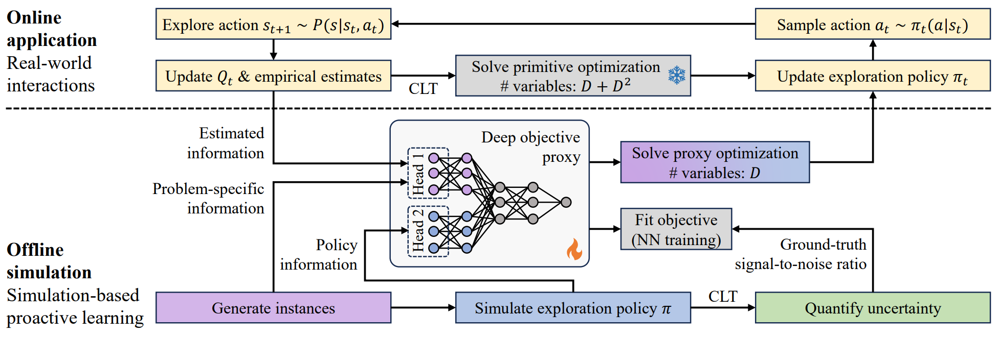
Parameter-based policy selection.
The optimization above can be computationally expensive in large problems. The second strategy therefore starts from a finite family of candidate exploration policies \[\{\pi^{(1)},\ldots,\pi^{(M)}\},\] such as a collection of \(\epsilon\)-greedy or Boltzmann policies with different parameters. For each candidate policy, one estimates its induced stationary distribution, plugs it into the Lyapunov equation to obtain \(\widehat\Sigma_Q\), computes the corresponding plug-in estimate of \(\mathrm{ISNR\text{-}REG}\), and then selects the policy with the smallest estimated criterion value. This yields an adaptive policy-selection method that is much cheaper computationally, yet still theory-guided.
Interpretation.
The key conceptual contribution of this line of work is that it separates two different goals that are often conflated in Q-learning:
accurately estimating the entire Q-table, and
correctly identifying the best action in each state.
For control, the second objective is often more relevant. The CLT and Lyapunov analysis make this distinction quantitative: the exploration policy affects the stationary visitation distribution \(\lambda\), which in turn affects the asymptotic covariance \(\Sigma_Q\), the uncertainty of action gaps, and ultimately the probability of correct selection. Thus, exploration can be designed using an explicit statistical objective, rather than only heuristic randomization rules.
A brief proof intuition for the overall method.
The logic of the method can be summarized in three steps. First, asynchronous Q-learning is written as a stochastic approximation recursion whose asymptotic fluctuations are Gaussian. Second, the covariance of these fluctuations is linked to the exploration policy through the stationary distribution and a Lyapunov equation. Third, the resulting covariance is translated into a proxy for the probability of correct selection, yielding an optimization criterion for exploration design. Therefore, the method is not merely heuristic: it is built on an explicit chain \[\text{exploration policy} \ \Longrightarrow\ \lambda \ \Longrightarrow\ \Sigma_Q \ \Longrightarrow\ \text{uncertainty of action gaps} \ \Longrightarrow\ PCS.\] This is precisely what makes the proposed exploration policies more sample-efficient than generic exploration rules in problems where identifying the correct action matters more than uniformly estimating all Q-values.
4.5 Monte Carlo Tree Search
MCTS is a heuristic search algorithm designed to solve decision-making problems by combining the concepts of tree search and MC simulations. It was first introduced to address challenges in large state-space environments, such as board games, where the number of possible actions and future states is so vast that traditional exhaustive search methods are computationally infeasible.
The key intuition behind MCTS lies in the idea of incrementally constructing a search tree by selectively exploring promising branches while using random simulations to estimate the potential long-term reward of each action. The approach dynamically balances exploration – testing less-visited actions to discover their potential – and exploitation – focusing on actions that are known to yield higher rewards based on previous simulations. This balance is crucial for MCTS to navigate large decision spaces efficiently and effectively.
MCTS consists of four steps that are repeated iteratively, as shown in Figure 4.6. The expansion of the tree illustrates a sequence of actions occurring over time, where each stage corresponds to progressively exploring possible future states and actions. In a board game such as Go or chess, the state would correspond to the board position, and an action is a move in the game, and a state transition occurs with each player’s moves.
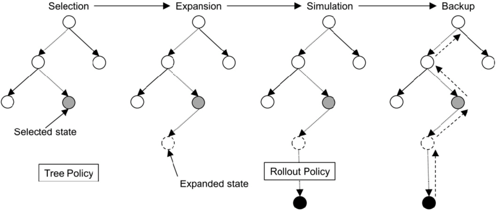
The four steps are as follows:
Selection: The search begins at the root node (representing the current state), and the algorithm selects subsequent nodes to traverse down the tree according to a selection policy. The most commonly used policy is the Upper Confidence Bound for Trees (UCT) algorithm to balance exploration and exploitation.
The balance between exploration and exploitation is crucial in MCTS, allowing the algorithm to intelligently navigate large search spaces by leveraging both past performance data and the potential value of unvisited paths.
Expansion: Once a leaf node (a node that has not been fully explored) is reached, the tree is expanded by adding one or more child nodes representing potential future states. The expansion process involves selecting an action that has not yet been fully explored in the current state and generating a new state based on that action. This new state is added as a child node in the search tree. Expansion ensures that MCTS does not simply revisit previously explored states but continuously explores new possibilities in the decision space.
Simulation: After the expansion step, a simulation (also called a rollout) is performed from the newly added node. The purpose of this simulation is to estimate the value of the state by playing out a sequence of actions until a terminal state is reached or a fixed depth is achieved. During the simulation, actions are typically chosen randomly or according to a simple heuristic. The outcome of the simulation provides an estimate of the long-term reward for the newly added node. The simulated reward is a proxy for the quality of the state reached by taking the action in the expanded node.
The simulation reward is denoted as \(R_{\text{sim}}\), which reflects the cumulative rewards from the simulation starting at the expanded node. If the simulation is run until a terminal state is reached, \(R_{\text{sim}}\) represents the terminal reward. If the simulation stops at an intermediate state, \(R_{\text{sim}}\) represents the estimated value based on the simulation outcome.
Backpropagation: The result of the simulation is then propagated back up the tree to update the statistics of each node along the path from the expanded node to the root. Specifically, the visit count \(N(s,a)\) for each node along the path is incremented, and the Q-value is updated using the simulation reward. The update rule for the Q-value is given by \[Q(s,a) \leftarrow \frac{N(s,a) \cdot Q(s,a) + R_{\text{sim}}}{N(s,a) + 1}.\] In this equation, \(N(s,a)\) is incremented by 1, and the Q-value is updated as a weighted average of the previous Q-value and the new simulation reward \(R_{\text{sim}}\). This backpropagation step ensures that the results of the simulation are reflected in the overall evaluation of the actions, influencing future selections.
These four steps – selection, expansion, simulation, and backpropagation – are repeated for a fixed number of iterations or until computational resources are exhausted. As the process continues, the search tree grows, and the algorithm increasingly focuses on promising branches of the tree where high rewards are more likely. Eventually, MCTS selects the action from the root node with the highest visit count or the highest Q-value, depending on the specific implementation.
The UCT algorithm for MCTS focuses on the setting where the support of the rewards is bounded and known, which is the multi-armed bandit (MAB) setting of UCB, and makes sense in most (deterministic) game settings. However, in many applications, estimating the variance of the rewards is a crucial part of the model, and an alternative to UCB for node selection in MCTS is to use R&S algorithms introduced in Section 2.2 such as OCBA and other similar oriented algorithms. In particular, since the objective of MCTS is to identify the best action to take at the root state within a limited search budget rather than to maximize some function of cumulative rewards, the R&S mindset would be more applicable in many situations, and this is what was described as the best-arm identification problem in MAB models. A node selection algorithm based on R&S sampling policies has been shown to explore a wider range of actions compared to UCT.
In the rest of this section, we present node selection policies called asymptotically optimal allocation procedure for trees (AOAT).
Consider the \(k\)th rollout at state \(s_t^k\) (\(t\in\{t_0,\dots,H\}\)), where the algorithm must choose a feasible action. A statistical set \(Q_{k-1}(s_t^k,a_t)\) stores the payoffs from previous \((k-1)\) rollouts for each action \(a_t\in A_{s_t^k}\). Define the sample mean and sample variance for any action-state pair \((s_t^k,a_t)\) by
\[\begin{align*} &\overline {Q}_{k-1}(s_t^k, a_t) \;=\; \frac{1}{\,N_{k-1}(s_t^k,a_t)\!}\;\sum_{\,q \in Q_{k-1}(s_t^k,a_t)} q,\\ &\overline{\sigma}_{k-1}(s_t^k,a_t) \;=\; \frac{1}{\,N_{k-1}(s_t^k,a_t)-1\!}\;\sum_{\,q \in Q_{k-1}(s_t^k,a_t)} \bigl(q - \overline{Q}_{k-1}(s_t^k,a_t)\bigr)^2. \end{align*}\]
Under a Bayesian framework, a conjugate prior is assumed, and two sampling distributions are considered:
Gaussian: Samples follow \(\mathcal{N}(Q^(s_t^k,a_t),\sigma(s_t^k,a_t))\), and the prior for \(Q^*(s_t^k,a_t)\) is also Gaussian, \(\mathcal{N}(Q_0(s_t^k,a_t),\sigma_0(s_t^k,a_t))\). After \((k-1)\) rollouts, the posterior is Gaussian with mean and variance given by \[Q_{k-1}(s_t^k,a_t) \;=\; \sigma_{k-1}(s_t^k,a_t)\Bigl[ \frac{Q_0(s_t^k,a_t)}{\sigma_0(s_t^k,a_t)} \;+\; \frac{N_{k-1}(s_t^k,a_t)\,\overline{Q}_{k-1}(s_t^k,a_t)}{\sigma(s_t^k,a_t)} \Bigr],\] \[\sigma_{k-1}(s_t^k,a_t) \;=\;\Bigl(\frac{1}{\sigma_0(s_t^k,a_t)} \;+\;\frac{N_{k-1}(s_t^k,a_t)}{\sigma(s_t^k,a_t)}\Bigr)^{-1},\] where \(Q_{k-1}^0(s_t^k,a_t)\) and \(\sigma^0(s_t^k,a_t)\) are predetermined parameters reflecting prior knowledge of the distribution of \(Q^*(s_t^k,a_t)\).
Bernoulli: Samples follow \(\mathrm{Ber}(Q^*(s_t^k\) \(,a_t))\). The prior for \(Q^*(s_t^k,a_t)\) is \(\mathrm{Beta}(\alpha(s_t^k,a_t),\beta(s_t^k,a_t))\). After \((k-1)\) rollouts, the posterior is \(\mathrm{Beta}(\alpha'(s_t^k,a_t),\,\beta'(s_t^k,a_t))\), where
\[\alpha'(s_t^k,a_t) \;=\;\alpha(s_t^k,a_t) \;+\; N_{k-1}(s_t^k,a_t)\,\overline{Q}_{k-1}(s_t^k,a_t),\] \[\beta'(s_t^k,a_t) \;=\;\beta(s_t^k,a_t) \;+\; N_{k-1}(s_t^k,a_t)\,\bigl[1 - \overline{Q}_{k-1}(s_t^k,a_t)\bigr],\] where \(\alpha'(s_t^k,a_t)\) and \(\beta'(s_t^k,a_t)\) are predetermined parameters reflecting prior knowledge of the distribution of \(Q^*(s_t^k,a_t)\). A normal approximation \(\mathcal{N}\bigl(Q_{k-1}(s_t^k,a_t),\,\sigma_{k-1}(s_t^k,a_t)\bigr)\) to this Beta posterior is used to enable a similar sampling approach for Bernoulli rewards.
The R\(\&\)S node selection strategy aims to maximize the probability of correctly identifying the optimal action at the root node within a fixed budget \(K\) of rollouts. This objective can be described by a dynamic program whose solution is called the optimal allocation policy.
Let \((a_t^k)^*\) be the action in \(A_{s_t^k}\) with the highest posterior mean \(Q_{k-1}(s_t^k,a_t)\). The value of sampling \((a_t^k)^*\) is defined by \[V\bigl(s_t^k,(a_t^k)^*\bigr) \;=\; \min_{\,a_t\neq(a_t^k)^*} \frac{\bigl(Q_{k-1}(s_t^k,(a_t^k)^*) \;-\; Q_{k-1}(s_t^k,a_t)\bigr)^2}{\tilde \sigma_{k-1}(s_t^k,(a_t^k)^*) + \sigma_{k-1}(s_t^k,a_t)},\] whereas the value of sampling some other action \(a_t\neq (a_t^k)^*\) involves a similar expression but includes a minimization over the difference from all other actions. AOAT selects \[a_t^k \;=\; \arg\max_{\,a_t\in A_{s_t^k}} \;V\bigl(s_t^k,a_t\bigr)\] and converges to the correct optimal actions across all states in the tree as \(K\to\infty\). AOAT maintains a positive sampling ratio for suboptimal actions and achieves exponential decay of the probability of false selection at the optimal large deviations rate. This property ensures that AOAT offers superior BAI performance in MCTS, especially in large or complex decision spaces.
Neural networks enhance MCTS through two primary components: a value network \(f_\theta: S\to\mathbb{R}\) and a policy network \(f_\pi(s,a_t)\). A value network can reduce the difficulty of choosing prior parameters in AOAT. For a never-visited state-action pair \((s_t^k,a_t)\), the mean and variance (e.g., \(Q_0(s_t^k,a_t),\,\sigma_0(s_t^k,a_t)\) in the Gaussian setting or \(\alpha(s_t^k,a_t),\,\beta(s_t^k,a_t)\) in the Bernoulli setting) determine how quickly that pair is sampled. By setting \[Q_0(s_t^k,a_t) \;=\; f_\theta(s_{t+1}^k) \quad \text{or} \quad \frac{\alpha(s_t^k,a_t)}{\alpha(s_t^k,a_t)+\beta(s_t^k,a_t)} \;=\; f_\theta\bigl(s_{t+1}^k\bigr),\] the network output serves as a warm-start prior, thereby guiding AOAT’s exploration without extensive manual tuning.
In addition, a policy network \(f_\pi(s,a)\) is often utilized to favor actions that are more likely to be optimal. A variant labeled AOAT-Pi relies on AOAT for rollouts but modifies the final action selection at the root by \[\hat{a}_{t_0}^K \;=\; \arg\max_{\,a\in A_{s_{t_0}}} \Bigl[ f_\pi(s_{t_0},\,a)\,\times\,Q_K(s_{t_0},\,a) \Bigr].\] This post-processing step helps resolve ties or near-ties in posterior means by incorporating the policy network’s probabilities, yielding additional performance improvements.
4.6 AI in Simulation
This section explores two fundamental aspects of AI’s role in simulation: the landmark achievements in game-playing systems through the AlphaGo family, and AI-enhanced SO techniques.
AlphaGo Family
The AlphaGo family represents a series of groundbreaking AI systems developed by Google’s DeepMind, illustrating the evolution of AI’s ability to master complex, high-dimensional decision-making environments through self-play. These systems have not only set new benchmarks in strategic game performance but have also provided fundamental insights into the potential of RL and deep neural networks for solving complex real-world problems.
The original AlphaGo was the first AI to defeat a world champion in the game of Go, a task previously thought to be far beyond the capabilities of AI due to the game’s vast complexity. AlphaGo’s architecture was groundbreaking in that it incorporated deep neural networks in combination with MCTS, creating a hybrid model that was both computationally efficient and capable of high-level strategic reasoning. The system consisted of two main components (as shown in Figure 4.7): a policy network, which predicted the next best move given a board state, and a value network, which evaluated the likelihood of winning from any given position. The policy network was trained through supervised learning using a dataset of expert human games, while the value network was trained via RL through self-play, allowing AlphaGo to improve beyond human intuition.
This novel integration of neural networks and search techniques enabled AlphaGo to evaluate millions of potential moves efficiently, achieving superhuman performance. AlphaGo’s victory over world champion Lee Sedol in 2016 was a landmark achievement, demonstrating that AI could surpass human expertise in games with high strategic depth and immense search spaces.
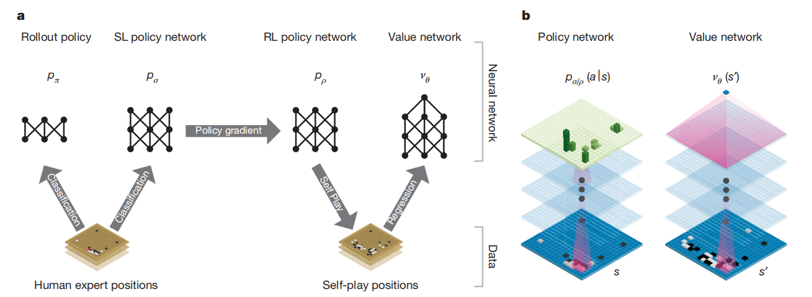
AlphaGo Zero represented a significant leap forward in AI learning strategies by removing all reliance on human knowledge. Whereas AlphaGo relied on supervised learning from extensive human game datasets, AlphaGo Zero started from scratch, using only the rules of Go and self-play in a RL framework. AlphaGo Zero also unified its neural network architecture by combining the policy and value functions into a single deep neural network, a simplification that not only reduced the complexity of the system but also significantly improved the efficiency of its training process. AlphaGo Zero was able to surpass the original AlphaGo within just three days of training on a single machine, demonstrating the power of self-play and RL.
The system’s ability to outperform its predecessor in such a short time raised important questions about the nature of human knowledge and the role it plays in AI development. AlphaGo Zero’s success proved that, under the right conditions, AI could learn to play at superhuman levels without any human expertise or prior knowledge of the game, further solidifying the potential of RL as a universal method for AI development.
AlphaZero, the culmination of this evolutionary process, applied the same principles to other games, such as chess and Shogi, achieving similar success. Unlike previous AI systems that were tailored for specific games, AlphaZero used a single, general-purpose architecture that was able to master multiple games without needing any domain-specific modifications. In chess, AlphaZero defeated Stockfish, the strongest traditional chess engine, in a series of 100 games, with AlphaZero winning 28 and drawing 72, demonstrating the superiority of its approach. Similarly, in Shogi, AlphaZero outperformed Elmo, the reigning champion AI for the game, showcasing the adaptability and robustness of its model across different strategic domains.
The success of AlphaZero marked a pivotal moment in the evolution of AI, demonstrating that a general-purpose approach could outperform specialized models and adapt to a variety of games and environments. The same techniques used in AlphaZero are now being extended to other fields, including robotics, healthcare, and NLP, where AI systems are trained to generalize across multiple tasks and domains.
The journey from AlphaGo to AlphaZero reflects a broader trend in AI towards more general and efficient learning systems. These systems, such as OpenAI’s ChatGPT, represent the next frontier in AI development, demonstrating how self-play and RL principles can be applied to a wide range of real-world challenges. Through advances in multi-task learning and adaptive architectures, AI systems become increasingly capable of handling a variety of tasks, from games to practical, real-world applications, paving the way for more versatile and scalable AI technologies.
AI-enhanced Simulation Optimization
The integration of AI with SO has opened new frontiers in addressing complex decision-making problems. This synergy manifests in three key areas: R\(\&\)S frameworks, MCTS enhancement, and parameter estimation optimization.
A notable advancement in this direction is the development of AI-driven approaches for R&S problems, exemplified by AlphaRank, which addresses R\(\&\)S problems by integrating DRL with MC simulation. The primary idea is to reformulate the sequential sampling decision as an MDP, which allows for the systematic application of modern AI techniques to overcome challenges traditionally faced in SO (Figure 4.8).
Traditional R&S methods face two main challenges: the computational burden of determining optimal sampling policies and the difficulty in balancing the exploration-exploitation trade-off. AlphaRank offers a structured solution through a two-stage AI framework. In the first stage, an MC simulation-based rollout policy is employed. This policy utilizes classic R\(\&\)S procedures as base policies, allowing for efficient learning of the value function in stochastic dynamic programming. The rollout policy runs simulations from a given decision point (or state) using a base policy, then estimates the action value for that decision via
\[Q_t^{(i)}(a_{t+1}) = \frac{1}{K} \sum_{k=1}^{K} r^{(i)}_{t,k},\] where \(r^{(i)}_{t,k}\) is the reward received during the \(k\)-th rollout, and \(K\) is the number of rollouts performed.
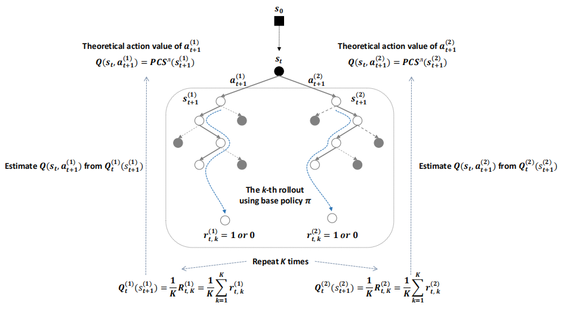
In the second stage, DL techniques are employed to pre-train a neural network offline, based on the rollout policy, thereby creating an efficient decision-making mechanism that can be deployed online with significantly reduced computational overhead. This approach allows AlphaRank to make decisions quickly, even in large-scale problems where traditional methods would require excessive computational resources.
The strength of AlphaRank lies in its ability to handle the complex relationships and induced correlations between mean performance and variance that traditional analytical approaches often fail to fully capture. The neural network, trained through RL, adapts to the problem’s nuances, making trade-offs across various problem scenarios.
Exploiting AI’s pattern recognition capabilities enables AlphaRank to outperform traditional R&S methods by improving decision accuracy while simultaneously reducing the computational burden. Specifically, by leveraging a well-trained ANN with MC simulation, AlphaRank can achieve higher PCS with fewer simulation samples compared to conventional methods, particularly in complex scenarios involving high variances and small mean differences.
Furthermore, the success of AlphaGo has inspired innovations in MCTS methodologies. The key advance lies in reformulating the classic node selection problem in MCTS as a multi-stage R\(\&\)S problem and proposing a solution that efficiently allocates limited search budgets to maximize the probability of correctly selecting the best action at the root state. AOAT addresses the computational challenge of optimal sampling policies through a two-stage AI solution. In the first stage, it employs an MC simulation-based rollout policy that leverages classic R\(\&\)S procedures as base policies. This approach provides a computationally feasible way to approximate the optimal value function in stochastic dynamic programming. In the second stage, it utilizes DL to pre-train a neural network model offline based on the rollout policy, creating an efficient decision-making mechanism that can be deployed online with minimal computational overhead.
Notes and References
The unified likelihood ratio (ULR) method was introduced by Jiang, Zhang, et al. (2024). T. Ren et al. (2025) address the limitations of perturbation-based gradient computation methods in forward learning, where traditional approaches consume a large number of queries per data point, resulting in high computational costs, and propose the Forward Learning with OPtimal Sampling (FLOPS) module to dynamically allocate queries to data points, optimizing the trade-off between accuracy and efficiency by reducing the gradient estimation variance while minimizing the query budget.
Risk-sensitive policy gradient methods for RL are treated in depth in A. and Fu (2022). Optimizing quantiles of cumulative rewards in RL was proposed in Jiang et al. (2023). PPO algorithms are presented in Schulman et al. (2017). For more on the distortion risk measure (DRM) as alternative optimization criterion for RL, see Jiang, Heidergott, et al. (2024).
Details of the alternatives to the UCT node selection policy for MCTS presented in Section 4.5 are found in Y. Li et al. (2021) for OCBA and Zhang et al. (2022; Liu, Peng, et al. 2025) for the asymptotically optimal allocation procedure for trees (AOAT). The proposed approach in the context of \(Q\)-learning can be found in Schulman et al. (2025).
Chang et al. (2016) provides historical context for MCTS. For more details on AlphaGo, see Silver et al. (2016) and AlphaGo-Movie (2017), where the latter is a video of AlphaGo’s successful story. For more on AlphaRank, see Zhou et al. (2024).
应用与案例研究
第 05 章 · 章节速读
本章把前面的工具放进真实业务问题：先在仿真环境中学习和比较，再评估其应用价值。
- 供应链
- 联合考虑库存、生产、定价与推荐，处理需求变化和资源约束。
- 管理模型
- 利用业务轨迹学习策略，并用预测模型评估候选行动。
- 多智能体协作
- 在模拟环境中研究团队沟通、协作与决策行为。
- 创意与营销
- 探索 AI 在服装设计和社交媒体营销中的反馈与迭代。
模型的预测能力、数据覆盖范围和独立验证，决定了策略能否迁移到业务场景。
展开完整原文（英文）
In this chapter, we present several applications in settings that highlight the synergy of simulation optimization and AI/ML models, spanning domains such as production planning, logistics and supply chain management, business strategy, and creative industries, where simulation provides an environment in which complex dynamics can be replicated, hypotheses can be tested, and learning algorithms can adapt through iterative feedback. Specifically, in multi-echelon inventory and revenue management, simulation captures demand variability and lead-time uncertainty, enabling reinforcement learning agents to experiment with replenishment and pricing strategies without incurring real-world costs. In production planning and scheduling, simulation allows the modeling of stochastic demand and resource constraints, supporting the evaluation of sequential optimization methods under realistic operating conditions. Simulated business environments recreate market dynamics so that policies for inventory, pricing, and recommendations can be trained and validated before deployment, and custom-designed business simulation games provide a controlled testbed for examining how AI entities interact with humans in strategic decision-making. In AI-driven fashion design, simulation captures multi-agent workflows that enable iterative refinement, allowing virtual agents to align designs with market feedback. Finally, in social media marketing, user-interaction simulations provide the feedback loops required for reinforcement learning algorithms to optimize targeting, bidding, and engagement strategies.
This chapter presents the following applications and case studies:
Section 5.1 presents a periodic-review serial supply chain system with multiple intermediate echelons between a manufacturer and customers. This work is based on Liu, Hu, et al. (2025; Zheng et al. 2024; Jiang et al. 2025).
Section 5.2 presents an example from supply chain production planning and scheduling, based on Liu, Alexopoulos, et al. (2025).
Section 5.3 presents the large management model (LMM) from Wang et al. (2022, 2024), including the Decision Transformer framework, and Section 5.4 presents generative agents and team cognition, based on Krol and Peng (2024).
Sections 5.5 and 5.6 conclude with futuristic AI use of simulation optimization for real-world business practice in fashion design and social media marketing, respectively.
The coordinated treatment spanning Sections 5.1–5.3 also draws on the integrated control framework and Pretrained Coordination Model in Anonymous authors (n.d.).
5.1 Inventory and Supply Chain Revenue Management
Inventory management is central to supply chain operations, with AI playing an increasingly important role in improving demand forecasting, inventory replenishment, and operational efficiency. RL, especially DRL, has emerged as a powerful tool for optimizing complex multi-echelon inventory management problems by modeling them as MDPs. Algorithms such as PPO and Asynchronous Advantage Actor-Critic (A3C) enable dynamic adaptation to uncertain and time-varying demand environments.
Within the MDP framework, each actor in the supply chain, such as manufacturers, distributors, and retailers, is represented as an intelligent agent that interacts with its environment to make optimal decisions. The goal for each agent is to minimize its costs related to inventory management, such as holding costs for excess stock, backlog costs for unmet demand, and ordering costs for replenishment. To achieve this, the RL agents learn from their environment by receiving feedback in the form of rewards, which they use to adjust their decision-making policies over time. In this context, the state of the system includes key variables such as the agent’s current inventory levels, outstanding orders, and in-transit shipments, whereas the action taken by each agent is the quantity of goods they order in the next period.
To account for the decentralized nature of decision-making in supply chains, where each actor has only partial visibility into the global system, the problem is modeled as a multi-agent system. In such a system, multiple agents must learn to coordinate their actions without direct access to the decisions of others. Multi-agent deep reinforcement learning is employed to facilitate this coordination, particularly through centralized training and decentralized execution. During training, the agents have access to global information about the entire supply chain, allowing them to learn from the collective experiences of all actors. However, once training is complete, each agent makes decisions based only on its local observations, such as its own inventory and customer demand. This approach mimics real-world supply chains, where constant information sharing is often impractical or too costly.
The specific algorithm used to train the agents in this framework is heterogeneous-agent PPO, which is a variant of PPO designed to accommodate the heterogeneous nature of agents in supply chains, where each actor may have different roles, objectives, and constraints. Heterogeneous-agent PPO ensures that each agent’s policy is updated sequentially, allowing them to adapt and improve their strategies as they learn from the dynamic environment of the supply chain. The algorithm adjusts the agents’ policies based on feedback from their own actions and those of other agents, ensuring that decisions are not only locally optimal but also beneficial for the overall system.
A key aspect of the RL approach is the design of the reward function, which balances the individual costs incurred by each agent with the overall costs of the system. The reward for each agent is a combination of its own costs (such as holding and backlog costs) and the total costs of the supply chain. This encourages each agent to act in a way that is beneficial to both itself and the broader system, fostering cooperation even in a decentralized setting. Interestingly, research indicates that the best performance is achieved when agents strike a balance between self-interest and consideration for the system as a whole, rather than solely focusing on minimizing the total system costs or their own costs. This balance ensures that the agents coordinate their actions effectively, leading to lower overall costs and improved supply chain performance.
Once trained, the agents execute their policies in a decentralized manner, making independent decisions based on local information without the need for constant communication. Despite acting independently, the agents’ learned policies are highly coordinated, allowing them to respond to demand fluctuations and inventory changes in a way that minimizes inefficiencies such as the bullwhip effect, where small variations in customer demand lead to increasingly larger fluctuations up the supply chain. By training the agents to make informed, coordinated decisions, multi-agent DRL helps smooth out these demand fluctuations, leading to more stable inventory levels, fewer stockouts, and reduced excess inventory.
The application of multi-agent DRL to multi-echelon inventory management provides a dynamic, adaptive approach to optimizing supply chain performance. By modeling the system as a set of interacting agents who learn from experience and adapt their decisions, the RL approach allows for better coordination across the supply chain. Ultimately, the RL-based solution reduces the costs of inventory management, alleviates the bullwhip effect, and leads to more resilient and efficient supply chains.
The general large-scale multi-product multi-echelon supply chain inventory management problem is formulated as an optimization problem, and the proposed solution approach comprises two phases: supervised pretraining and RL fine-tuning. In the DL pretraining phase, the objective is to build a model that emulates a target policy by using historical data or simulations to generate a suite of target actions, providing a robust foundation for what lies ahead. Throughout this process, the model learns to anticipate optimal ordering decisions, informed by the state of the inventory system. The target actions, derived from an ex-post optimal policy, serve as guiding labels, allowing the model to effectively discern the intricate relationships between states and actions. This type of training not only accelerates the forthcoming learning process but also captures essential inventory dynamics and demand patterns, setting the stage for a more adept RL agent.
In the RL fine-tuning phase, the focus shifts towards optimizing the pretrained model, refining its policy through interactions marked by trial and error within the simulation environment. Here, the pretrained DL model acts as a launchpad for the RL model, which embarks on a quest to explore a myriad of actions aimed at maximizing cumulative rewards dictated by a carefully defined reward function, one that often mirrors the costs incurred. In this phase, the RL agent draws lessons from the feedback received post-action, adjusting its policy in response to the rewards observed and the transitions between states. To balance between exploration of new actions and exploitation of established policies, strategies like epsilon-greedy or softmax are incorporated. This critical phase allows the model to deepen its understanding of the underlying inventory dynamics, culminating in the formulation of a more sophisticated and effective ordering policy. Ultimately, the interplay between DL pretraining and RL fine-tuning enables the method to surpass the capabilities of either approach alone.
Joint pricing and replenishment: Next we consider the joint pricing and replenishment problem, where at the beginning of each period of a finite-horizon problem, both the replenishment quantity and price for a product must be decided. Overall demand is inferred by modeling the probability of each individual consumer’s choice based on real-world data, but demand for a particular product each period is determined by our offer price, the competitor’s price, and the current reference price.
The sales profit is a function of actual sales minus holding, backlogging, and ordering costs.
Traditional retail practices often struggle with balancing the need to maintain inventory levels while maximizing profits through dynamic pricing. The challenge lies in the fact that decisions about pricing and replenishment are not always made at the same frequency and must consider various market factors, including competitive pricing and fluctuating demand. The fast-slow dual-agent DRL (FSDA DRL) approach for dynamic pricing and replenishment is a natural solution for the complex interplay between pricing strategies and inventory management.
The FSDA DRL algorithm introduces a two-time-scale SGD algorithm designed to handle the asynchronous nature of pricing and replenishment decisions and to be able to handle disparate settings in terms of the frequency of such decisions. The core of FSDA DRL is a dual-agent system, where one agent is responsible for pricing decisions and the other for replenishment. When a fast time-scale is used for pricing decisions and a slower time-scale for replenishment decisions, this allows the system to respond quickly to market changes by dynamically changing prices while also considering long-term inventory needs. On the other hand, when price changes are made on a slower time-scale compared to frequent replenishment decisions, the system is able to operate more like a lean just-in-time system to maintain profitability and market competitiveness by meeting dynamically changing demand.
Each agent is equipped with deep neural networks that approximate value and policy functions, enabling them to process continuous and high-dimensional features and actions. The agents operate within a Markov game framework, where each agent has an actor network that proposes actions and a critic network that evaluates the proposed actions, enabling the agents to learn from the environment and adapt their strategies over time. The algorithm can be proved to converge to high-quality solutions under appropriate conditions.
Using data-driven demand modeling, a decision tree-based ML model is trained using real market datasets to forecast market demand. The ML model learns patterns and relationships directly from the data, enabling more accurate demand forecasts and supporting more scientific decision-making. The process begins with the collection of a wide range of data points that could influence consumer demand, such as sales history, pricing trends, inventory levels, and external factors like competitor actions and market conditions. Each piece of data is then preprocessed to ensure its quality and suitability for analysis, including cleaning, normalization, and transformation into a format that can be effectively used by ML models.
The next phase involves the strategic engineering of features from the preprocessed data, which are critical indicators that can influence demand patterns. These features, such as price rank relative to competitors, the gap between current and reference prices, and the number of active competitors, are carefully selected to provide the most insightful view of the market dynamics. With these features, a sophisticated demand forecasting model, such as LightGBM, is trained to predict future demand based on historical patterns and trends. The choice of LightGBM is particularly strategic due to its efficiency and effectiveness in handling large datasets, making it an ideal candidate for real-time, high-stakes decision-making scenarios.
Integration of this demand forecasting model with the DRL agents is critical to the success of FSDA DRL, as the agents operating on different time scales use these forecasts to inform their pricing and replenishment strategies, ensuring that their actions are always aligned with the most current predictions of market demand. This real-time adaptability is a hallmark of the data-driven approach, allowing the system to respond swiftly to any changes in market conditions and consumer behavior. The adaptability of the data-driven approach is further underscored by its continuous learning capability. As new data becomes available, the demand forecasting model updates its predictions, feeding the latest insights into the DRL agents. This ongoing process of learning and adaptation ensures that the system remains agile and responsive, keeping pace with market changes and maintaining a competitive edge.
The data-driven approach also excels in its ability to eliminate the need for preset assumptions about market behavior, which can often be limiting and sometimes misleading. By learning directly from the data, the system can develop a more nuanced and accurate understanding of the market, leading to more effective pricing and replenishment strategies. This is particularly evident in the experimental validation of the FSDA DRL model, where the data-driven approach consistently outperforms traditional baseline policies, delivering higher rewards and profits across various scenarios. Moreover, the data-driven approach provides a solid foundation for scientific decision-making, transforming the process into one that is grounded in empirical evidence and data-driven insights. This not only enhances the performance of the DRL model but also establishes a new benchmark for decision-making in the retail industry, where accuracy, adaptability, and responsiveness are paramount.
Recommendation and inventory management: By formulating the coordination of the inventory management and recommendation system as an MDP, DRL can be used to jointly consider the two problems, which is carried out using a recommendation system that adjusts the exposure situations of products to influence customers’ ratings among them.
A standard multi-product single-echelon inventory system with lost sales is considered, where unmet demand is lost.
To solve the MDP, the decision policy is parameterized as a conditional distribution over the action space using a neural network or a cluster of neural networks, which is then trained via policy-based DRL algorithms, e.g., PPO.
Integrated Inventory, Pricing, and Recommendation Control
The preceding models coordinate selected pairs of decisions. A broader formulation treats production, inventory, pricing, and recommendation as levers of one finite-horizon control problem (Anonymous authors, n.d.). The important distinction is not merely the larger action vector. Production and replenishment determine future availability, price changes the total level of demand, and recommendation reallocates demand across products. These decisions therefore share both the inventory transition and the system-level profit function.
Consider \(n\) products and a one-period replenishment lead time. Before the decision in period \(t\), the joint state is \[s_t=\bigl(q_{t-1},d_{t-1},I_t\bigr),\] where \(q_{t-1}\) is the vector of production orders in transit, \(d_{t-1}\) is the most recent demand signal, and \(I_t\) is on-hand inventory. The joint action \[a_t=\bigl(q_t,p_t,k_t\bigr)\] contains production or replenishment quantities, prices, and recommendation intensities. For product \(i\), inventory and lost sales evolve as \[I_{i,t+1}=\bigl[I_{i,t}+q_{i,t-1}-d_{i,t}\bigr]^+, \qquad \ell_{i,t}=\bigl[d_{i,t}-I_{i,t}-q_{i,t-1}\bigr]^+.\] The delayed arrival of \(q_{i,t-1}\) makes a demand-side action today relevant to production decisions made both earlier and later.
One transparent demand model begins with the price-sensitive potential \[g_i(p_{i,t})=D_i^{\max}-\alpha_i p_{i,t}.\] If \(k_{i,t}\) denotes recommendation intensity, its share of exposure can be represented by \[\rho_i(k_t)= \frac{\exp(\beta_1 k_{i,t})} {\sum_{j=1}^{n}\exp(\beta_1 k_{j,t})}.\] The resulting mean demand used in the integrated model is \[\bar d_{i,t}(p_t,k_t) =g_i(p_{i,t}) \bigl(1+\beta_2\rho_i(k_t)\bigr) \left(1+\beta_3\frac{k_{i,t}-1}{4}\right),\] with realized demand generated stochastically around this mean. Price thus controls market volume, whereas the softmax term couples all products by allocating a limited amount of customer attention.
A common reward makes the economic trade-offs explicit: \[r_t=\sum_{i=1}^{n} \left[ p_{i,t}d_{i,t}-c_i^q q_{i,t}-h_i I_{i,t} -c_i^{\ell}\ell_{i,t}-c_i^a(k_{i,t}-1) \right].\] Here \(c_i^q\), \(h_i\), \(c_i^{\ell}\), and \(c_i^a\) denote production, holding, lost-sales, and recommendation costs. Under the potential-revenue convention used in the reference model, \(c_i^{\ell}\) includes the margin and service consequences of unfulfilled demand. The objective is to maximize \(\mathbb{E}[\sum_{t=0}^{T}\gamma^t r_t]\).
This representation clarifies when joint control is valuable. If transitions, feasible actions, and rewards separate by process and product, independent controllers can be sufficient. When capacity, inventory, or demand shaping couples the modules, a pricing engine that cannot observe inventory or a recommendation engine that ignores availability can incur a genuine information-structure loss. The computational study in Anonymous authors (n.d.) finds the largest and most stable gains in the more strongly coupled and nonstationary cases. It also identifies a boundary: under sufficiently high demand volatility, return-conditioned offline learning can mistake favorable noise for a good action, and an online RL policy may have a higher mean return. Independent stress testing across demand regimes is therefore part of the control design, not merely a final reporting step.
5.2 Supply Chain Production Planning and Scheduling
Integration of AI into modern production planning and scheduling has facilitated more efficient and adaptive manufacturing. Here, we consider the stochastic multi-level lot-sizing problem (SMLP), which includes strategic decision-making for production volumes across various levels of a supply chain, where the volatility of external demands adds a layer of complexity. At the core of the methodology is the general production function, a versatile tool that encapsulates the dynamics linking production decisions to actual output. This function is essential in formulating the problem, providing a mathematical representation of the production process that can accommodate diverse production scenarios and constraints.
The SMLP aims to manage production and inventory across a network of products where demands are uncertain. The SMLP is formulated as an MDP, where the state includes all environmental factors affecting production, and the action is the current production decision. The immediate reward in this context is the production quantity, a function of the production decision. The objective is to find a production policy that minimizes the total expected discounted cost over an infinite planning horizon, where the cost structure includes costs associated with holding inventory, backorders, and setup expenses. The production function governs the quantity produced based on the production decision, adjusting inventory levels to meet expected demand while considering production feasibility.
The Markovian demand model posits that the external demand for each final product depends solely on a demand state, which encapsulates all environmental factors affecting demands and evolves according to a homogeneous Markov chain. This probabilistic model of demand is crucial for capturing the stochastic nature of market demands and its impact on production planning. Individual product states, production states, and demand states are modeled into a comprehensive system state, a key step in formulating the dynamic program. This aggregated state provides a holistic view of the system, enabling the development of policies that consider the interdependencies between products and time periods.
Given the complexity of managing a joint production policy across multiple products, the problem employs sequential policy optimization (SPO) to make it computationally feasible. Instead of solving a single policy for all products at once, this approach iteratively optimizes each product’s policy while keeping the others fixed. In each iteration, the policy for one product is updated to minimize the discounted cost over an infinite horizon under the current policies of other products. Sequential optimization continues until there is no further improvement, indicating a Nash equilibrium, where no single product’s policy can improve without adjusting others. This structured approach simplifies policy development within an MDP framework, allowing a more manageable optimization of the objective function over the long term.
The optimal policy is identified as a stationary policy that minimizes the expected total cost, derived from the dynamic program. This policy is characterized by a mapping from the system state to a production decision that minimizes the immediate cost plus the discounted expected future cost, given the current state. The SPO procedure breaks down the complex task of optimizing the joint policy for all products into a series of simpler, separate optimization problems for each product. The policy for each product is updated iteratively while keeping the policies of other products fixed, based on their latest iterations. This method is particularly effective in large-scale problems, where joint optimization of all products’ policies would be computationally intractable.
DRL is applied to implement the SPO procedure. DRL is adept at solving optimization problems with complex state spaces and unknown transition probabilities, making it an ideal tool for our method. Applying DRL to each separate optimization problem can effectively learn the optimal policy for each product, considering the uncertainties and interdependencies inherent in the production process.
Production Planning within a Coordinated Control System
The integrated formulation above gives production planning a system-wide role rather than treating it as an isolated quantity decision (Anonymous authors, n.d.). Let \(q_{i,t}\) be the quantity initiated for product \(i\) in period \(t\). A representative shared-capacity constraint is \[\sum_{i=1}^{n}q_{i,t}\leq Q^{\max}, \qquad q_{i,t}\geq0,\] and the corresponding production cost is \[C_t^{\mathrm{prod}}=\sum_{i=1}^{n}c_i^q q_{i,t}.\] With a positive lead time, the production vector enters the pipeline rather than on-hand inventory immediately. Hence the planner must allocate current capacity using anticipated margins, price-sensitive demand, recommendation exposure, on-hand stock, and arrivals already in transit. The resulting cross-product competition for capacity is precisely what a collection of independently optimized product policies can miss.
At the aggregate level, the coordinated MDP determines quantities and their timing. In a practical planning hierarchy, those quantities become targets for a lower-level scheduling model that assigns jobs to machines, shifts, and production lines. Feedback should run in both directions: detailed scheduling returns feasible completion times and effective capacity to the aggregate controller, while the aggregate controller supplies product priorities derived from inventory risk and demand-side value. This separation keeps the action space manageable without discarding the economic coupling between production and revenue management.
The offline-learning pipeline in Anonymous authors (n.d.) uses two complementary trajectory sources. An interpretable traditional controller combines an \((s,S)\)-type replenishment rule, a price obtained from an estimated linear demand model, and a margin-based recommendation rule. PPO supplies a second set of trajectories generated by adaptive online interaction with the simulator. Pooling these logs exposes the learner to both stable operating rules and responses to stochastic cross-process effects. A return-conditioned sequence model can then distill a joint production policy without repeating costly online exploration at deployment.
Several diagnostics are especially relevant for production planning. First, capacity sensitivity should be evaluated by changing \(Q^{\max}\) and unit production costs, rather than reporting performance at one nominal setting. Second, shock-response experiments should record how capacity is reallocated across products and how long inventories take to return to their pre-shock range. In the reference experiments, a step demand shock causes the learned policy to differentiate recovery speeds according to unit cost and price elasticity instead of increasing every product uniformly. Third, nonstationary tests should combine trend, seasonality, and temporal correlation. These experiments showed that learning-based policies could substantially improve on base-stock and \((s,S)\) rules while reducing profit variability, although the results are mechanism evidence from simulation and not a universal dominance claim.
The main modeling lesson is that detailed scheduling efficiency and economic coordination answer different questions. A schedule can be locally efficient yet produce the wrong product mix, whereas a profitable aggregate plan can be operationally infeasible. A simulation-based interface between the two levels is needed to evaluate both feasibility and end-to-end profit.
5.3 Large Management Model (LMM)
The large management model (LMM) provides a general framework for decision making in the realm of business management, representing an innovative synthesis of DRL and AI. LMM is a theoretical construct and a practical framework designed to address the multifaceted and interconnected challenges inherent in today’s volatile business environments.
The necessity for such a model is underscored by the complexities of industries such as the fashion industry, where supply and demand fluctuations, seasonal trends, and the unpredictability of global supply chains generate managerial challenges not readily addressed using conventional approaches. LMM seeks to meet these challenges by creating an adaptive, intelligent system capable of making sophisticated, real-time decisions that are informed by a deep understanding of historical patterns and current market dynamics.
At the core of the LMM is its foundational decision model, which employs an autoregressive architecture to analyze and learn from vast datasets. This model is inspired by the success of LLMs, which have demonstrated an uncanny ability to generate human-like text based on contextual cues. Similarly, the LMM’s model is designed to assimilate and optimize past decision trajectories, allowing it to make informed predictions and strategic choices that are tailored to the unique demands of each business scenario.
One of the key strengths of the LMM is its ability to integrate what were once considered separate domains of business management into a unified framework. Inventory management, dynamic pricing, and recommendation systems no longer operate in isolation but are instead treated as interconnected components of a larger system. This integration, illustrated in Figure 5.1, allows for a more holistic approach to decision-making, where actions in one area can be intelligently coordinated with those in another, leading to synergies that enhance overall operational efficiency and profitability.
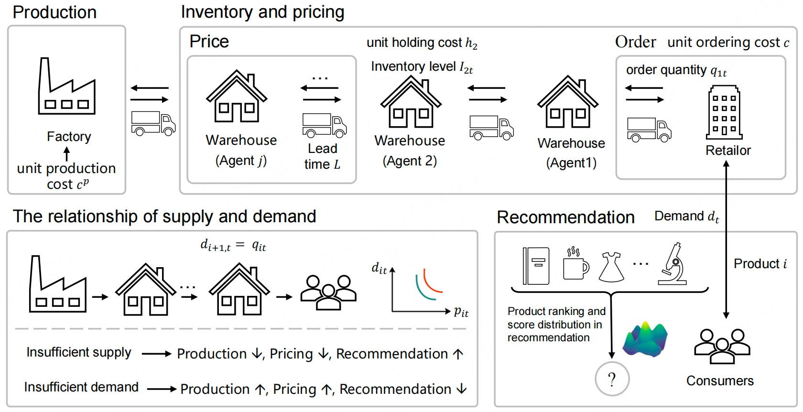
The LMM’s application of DRL is what sets it apart from traditional management models. DRL enables the model to interact with its environment, learning and adapting through a process of trial and error. This dynamic capability allows the LMM to respond to new information and changing conditions with agility, making it a versatile tool for navigating the uncertainties of the business world.
The potential of the LMM is vast, and its development represents a significant step towards the realization of artificial general intelligence (AGI) in the field of business management. As the model continues to evolve, it is expected to encompass an ever-widening array of management functions, further enhancing its capabilities and solidifying its role as a pioneering force in the convergence of AI and business strategy. The LMM represents a paradigm shift in the way businesses approach management decision-making. Its integration of advanced AI techniques, its ability to learn and adapt, and its holistic approach to managing the complexities of modern business operations make it a formidable tool for businesses looking to navigate the challenges of the future with confidence and foresight.
A Management World Model for Coordinated Operations
The Pretrained Coordination Model (PCM) provides a concrete operational instantiation of an LMM (Anonymous authors, n.d.). Its purpose is not to reproduce raw observations or to act as a general conversational model. Rather, it is a queryable surrogate for a coupled management system. Given the history \[h_t=(s_{1:t},a_{1:t-1}),\] a management world model is the learned triple \[\mathcal{W}=(\mathcal{D},\mathcal{O},\mathcal{G}),\] where \[\mathcal{D}(h_t,a_t)=\widehat s_{t+1},\qquad \mathcal{O}(h_t,a_t)=\widehat r_t,\qquad \mathcal{G}(h_t,z)=a_t.\] The dynamics operator \(\mathcal{D}\) predicts the next operating state, the outcome operator \(\mathcal{O}\) evaluates the consequence of a contemplated joint action, and the generation operator \(\mathcal{G}\) produces an action for managerial target \(z\).
These operators define a capability ladder. A behavioral model uses \(\mathcal{G}\) to imitate or synthesize actions from logged trajectories. A predictive model adds \(\mathcal{D}\) and \(\mathcal{O}\) so that actions not taken in the historical logs can be evaluated. An imaginative model searches over candidate actions by rolling them forward through the learned dynamics and outcome operators. This separation is useful because each capability has a different data requirement and can be validated independently.
Return-conditioned policy generation.
PCM casts a logged trajectory as a sequence of returns, states, and actions. At period \(t\), the return-to-go target is \[z_t=\sum_{u=t}^{T}\gamma^{u-t}r_u.\] After embedding the sequence, the Transformer represents the conditional joint-action distribution \[\pi_\theta\bigl(a_t\mid z_{1:t},s_{1:t},a_{1:t-1}\bigr).\] With discretized action components, training minimizes the negative log-likelihood of the logged actions. This shifts much of the estimation burden from online policy gradients and bootstrapping to offline supervised learning. Pooling trajectories from different incumbent controllers is coherent only when the return target remains inside the support of the data; conditioning above the maximum supported return is an extrapolation rather than a justified request.
Product-token architecture.
A flat network ties its input and output dimensions to the number of products. PCM instead creates one token per product and period, combining production in transit, lagged demand, inventory, production quantity, price, recommendation, and return-to-go. Shared weights impose the useful prior that products are exchangeable up to their operational state. Two attention pathways then represent the main couplings:
cross-product attention captures shared production capacity and the reallocation of demand caused by recommendation;
temporal attention captures inventory evolution, delayed production, and demand persistence within each product.
The reported implementation consequently uses 294,659 policy parameters for assortments ranging from 2 to 100 products. This does not make the decision problem independent of size, but it prevents the model architecture itself from growing with every additional product.
Prediction, coverage, and guarded planning.
The same product-token backbone supports a dynamics head for state increments and an outcome head for system profit. The policy head and the predictive heads should not be trained on exactly the same data distribution. High-return expert logs are appropriate for action generation, whereas counterfactual prediction requires coverage around actions that the expert did not take. PCM therefore augments the dynamics and outcome data with perturbed exploratory actions while keeping the behavioral policy focused on strong demonstrations.
At deployment, the planner begins with actions proposed by the behavioral PCM and an incumbent heuristic, adds local perturbations, and evaluates short candidate sequences in the learned model. Let \(\widehat V_H(a)\) denote the predicted return of a candidate over planning horizon \(H\), and let \(\Delta_H\) bound accumulated model error. The planner departs from the better base sequence only when \[\max_{a\in\mathcal{C}(s_t)}\widehat V_H(a) \geq \widehat V_H(a^{\mathrm{base}})+2\Delta_H.\] In the deterministic, uniformly bounded-error setting, this guard prevents a model-based change from falling below the base comparison beyond the stated error allowance. Since \(\Delta_H\) grows with rollout depth, the result favors short receding-horizon plans anchored to strong operating policies. Under stochastic demand, the no-regression property must be checked empirically rather than assumed.
Evidence and deployment implications.
The experiments in Anonymous authors (n.d.) are designed as mechanism evidence. With 512 logged trajectories and two products, the product-token policy matched the full-information heuristic reference. As the assortment grew to 100 products, it recovered roughly 50–64% of the reference profit while retaining a constant parameter count and sub-5-ms behavioral latency. At ten products, increasing the log volume to 1,024 trajectories raised recovery to 85.5%, indicating that action and state coverage, rather than network width alone, was limiting performance. Adding predictive heads and guarded planning increased profit over the heuristic reference by 19.1% at two products and by 3.0% at ten products, the latter lying within experimental dispersion, with approximately 4–6 ms of planning time per decision.
These results suggest a practical deployment sequence: diagnose whether cross-process coupling is material before replacing modular controllers; retain high-return logs for policy distillation; collect safe local action variation for counterfactual modeling; validate state and reward predictions off-policy; and enable planning only behind an error-calibrated guard. The world-model view therefore adds an auditable decision process to the broader LMM vision: generate, predict, validate, and only then plan.
Sequential Modeling for Management Problems
The Decision Transformer is a framework that abstracts RL problems into a sequence modeling challenge, harnessing the prowess of the Transformer architecture. This innovative approach allows the Decision Transformer to tackle a wide array of management problems by processing and learning from extensive datasets. The true potential of the Decision Transformer lies in its scalability and the ability to generalize across different decision-making scenarios. As the model is exposed to a larger volume of diverse data, it refines its understanding and predictive capabilities, thereby enhancing its decision-making prowess. This large-scale learning capability is crucial, as it equips the Decision Transformer with the flexibility to adapt to new situations and generalize solutions across various contexts, providing a robust decision-making paradigm for a multitude of management challenges.
A key feature of the Decision Transformer is its use of ‘Return-to-Go’ (RTG) conditioning. In this framework, RTG represents the cumulative reward that the agent aims to achieve from any given point onward in a trajectory. By conditioning on RTG, the model effectively adapts its action predictions based on desired outcomes, treating RL as a goal-conditioned task. During training, sequences of (state, action, RTG) tuples are input to the model, where each element is embedded similarly to tokens in a standard Transformer. Through this setup, the model conditions its behavior on both the trajectory’s historical context and the specified target reward. The RTG mechanism also enables conditional decision-making, allowing the Decision Transformer to flexibly pursue different reward levels without needing retraining for each target, thus achieving a level of goal adaptation that would otherwise require separate policies in traditional RL.
The training process of the Decision Transformer diverges from conventional RL algorithms by employing supervised learning instead of a reward-driven objective. Specifically, it minimizes the MSE between predicted and actual actions from recorded trajectories, avoiding the challenges of estimating a value function or handling sparse rewards. This approach not only simplifies the training pipeline but also allows the model to learn effectively from offline RL data, where a diverse dataset of past experiences informs its behavior without requiring active interaction with the environment.
By transforming RL into a sequence modeling problem, the Decision Transformer captures long-term dependencies more effectively than traditional methods. This setup is particularly beneficial in tasks with delayed rewards or intricate dependencies across time steps, where traditional RL algorithms may struggle. Additionally, by training on a range of RTG conditions, the Decision Transformer achieves a degree of zero-shot generalization, adapting to new reward levels without additional training, a significant advantage in settings where flexibility is essential. Its reliance on offline data also positions it as an ideal solution for environments where interaction is costly, such as robotics or healthcare, and it has demonstrated notable success across both discrete and continuous action spaces, including standard RL benchmarks like Atari and OpenAI Gym.
In redefining RL as sequence modeling, the Decision Transformer overcomes several challenges that conventional RL methods face, such as the need for extensive exploration and sensitivity to reward sparsity. By leveraging the Transformer’s ability to model complex temporal dependencies and integrating RTG for flexible goal achievement, the Decision Transformer offers an efficient, adaptable, and scalable approach to decision-making, opening new avenues in fields where data constraints and operational costs limit the feasibility of traditional RL.
When applied to inventory management, the Decision Transformer excels by amalgamating a vast array of data points, such as historical sales data, supplier information, and market trends, to anticipate future demand and optimize inventory levels. It forecasts demand accurately, facilitating strategic decisions on stock replenishment and reducing the likelihood of stockouts or overstocking. The model’s ability to simulate various supply chain scenarios aids in the dynamic optimization of ordering quantities and timings, ensuring cost-effective inventory management that is responsive to fluctuating market demands.
In the realm of pricing strategies, the application of the Decision Transformer enables businesses to implement dynamic pricing that is sensitive to real-time market conditions and consumer behaviors. It can analyze competitor pricing strategies and assess demand elasticity to inform decisions that are both competitive and profitable. Furthermore, the Decision Transformer assists in planning promotional activities by identifying optimal timing and pricing strategies to maximize profitability.
For recommendation systems, the Decision Transformer facilitates the generation of personalized and sequenced product recommendations, thereby enhancing customer engagement. By analyzing customer preferences and behaviors over time, the Decision Transformer can identify patterns and trends to provide the most relevant and timely recommendations. This approach not only improves customer satisfaction but also aligns promotional efforts with inventory levels, ensuring that recommendations are both desirable and feasible.
The implementation of the Decision Transformer in these domains underscores the importance of high-quality data and continuous learning to refine the model’s predictions and recommendations. As the model encounters new data, it evolves, improving its decision-making capabilities. Integration with existing systems can lead to automated and streamlined decision-making processes, while maintaining transparency in the model’s decision-making process ensures alignment with broader business objectives and ethical standards. The scalability and generalizability of the Decision Transformer make it a formidable tool for acquiring robust decision-making abilities across a wide spectrum of management problems.
5.4 Generative Agents and Team Cognition
Generative agents, capable of mimicking human-like behaviors such as decision-making, communication, and task coordination, have emerged as potential active contributors to team environments. Unlike passive AI tools, these agents can participate dynamically in group tasks, demonstrating autonomy in their interactions and adaptability to evolving scenarios. Despite advancements in AI integration at individual levels – such as improving personal productivity or creativity – there remains a significant gap in understanding the collective impact of generative agents within teams.
The integration of AI agents into teams is not just a trend but a necessity. Integrating generative agents as full team members into teams, however, might have consequences for team dynamics as well as team cognition. To evaluate the deployability and effects of generative agents on team cognitions, the research reported here investigates the transformative role of generative agents – AI entities powered by LLMs such as GPT-4 – within team-based environments. The core objective is to explore how the replacement of a human team member with a generative agent impacts the development of a transactive memory system (TMS: how team members collectively encode, store, and retrieve knowledge through coordination, specialization, and credibility) and team performance. How team members’ attitudes toward AI moderate these dynamics offers both theoretical and practical insights into the integration of AI into collaborative processes.
Participants are organized into teams engaged in a custom-designed business simulation game. This simulation replicates the pressures and complexities of real-world strategic decision-making within a fictional startup environment. Teams are divided into two groups: a control group composed entirely of human members and a treatment group where a generative agent replaces one human team member in either a strategist or data analyst role. This substitution mirrors realistic organizational scenarios, providing a controlled context to assess the agent’s integration and impact.
The business simulation game requires teams to allocate resources, develop strategies, and respond to market feedback to maximize profitability over ten periods. The presence of generative agents in the treatment group introduces an additional dynamic, where agents contribute knowledge, coordinate tasks, and interact with team members through a simulated chat interface modeled after corporate communication tools like Slack or Microsoft Teams.
For organizations considering the integration of AI into team structures, actionable insights highlight the importance of fostering positive attitudes toward AI, emphasizing the role of trust, transparency, and effective communication in successful human-AI collaboration, in addition to offering guidance on the strategic deployment of generative agents in roles that align with their strengths, such as information analysis and structured planning.
In strategic decision-making scenarios, the divergence between generative agents and human decision-making becomes particularly pronounced, given the high stakes and the complexity inherent in shaping an organization’s path. Generative agents, with their ability to process and analyze vast datasets, can identify patterns and trends that might inform strategic decisions. For instance, an AI might analyze market data to predict future trends, assess the viability of new product lines, or evaluate the potential impact of a merger or acquisition based on historical precedents and financial metrics.
Generative agents can also simulate various scenarios to predict outcomes and risks associated with different strategic choices, providing a quantitative foundation for decision-makers. They can run thousands of simulations to determine the most effective marketing strategy, optimize supply chain logistics, or forecast the financial implications of entering new markets. This level of analysis can be incredibly valuable in making informed, strategic decisions that are grounded in data.
However, while generative agents excel in quantitative analysis, human decision-makers bring qualitative insights to the table. Humans can consider the cultural fit of a potential merger, the ethical implications of a new technology, or the long-term vision and values of the organization. They can weigh the intangible aspects of a decision, such as employee morale, brand reputation, and customer loyalty, which are often critical in strategic planning but are difficult to quantify.
Moreover, humans possess the ability to recognize and adapt to emerging trends that may not yet be reflected in the data. They can intuit opportunities and threats that arise from political, social, or technological shifts, and adjust strategies accordingly. This adaptability is crucial in a rapidly changing business environment where the success of a strategy may hinge on the ability to respond quickly to unforeseen circumstances. Additionally, human decision-makers can engage in a process of collaborative sense-making with stakeholders, incorporating diverse perspectives and building consensus around a shared vision. This is particularly important in strategic decision-making, where alignment across the organization is essential for successful implementation. Generative agents, while capable of facilitating communication through platforms, do not yet possess the emotional intelligence or the ability to build genuine relationships that are necessary for this type of collaborative process.
Generative agents can support human decision-makers by providing them with the data and analysis they need to make informed choices, while also freeing them from the burden of processing large volumes of information manually. By working together, generative agents and humans can create a synergistic approach to strategic decision-making, where the strengths of both are leveraged to develop comprehensive strategies that consider both quantitative data and qualitative insights.
Generative agents offer a powerful tool for strategic decision-making, providing data-driven insights and enabling the exploration of complex scenarios. Yet, human decision-makers remain indispensable for their ability to navigate the uncharted territories of business strategy, where creativity, intuition, and an understanding of human dynamics are paramount. The most effective strategic decisions are likely to be those that harness the precision of AI analysis and the depth of human judgment.
5.5 AI for Fashion Design
The traditional fashion industry is characterized by a complex and time-consuming design process that begins with extensive market research. Designers often rely on a combination of field studies, social media analytics, and feedback from retailers to gather this information, which can be slow and may not always be comprehensive or up-to-date.
The limitations of the traditional fashion design process are multifaceted and deeply rooted in the industry’s historical practices and structures. One of the primary constraints is the inherently manual and time-intensive nature of creating new designs. Designers must conduct extensive market research to identify trends, which is a process that often relies on intuition and personal experience rather than data-driven insights. This can result in a lack of objectivity and potential oversight of emerging trends.
Moreover, the design phase itself is laborious, involving the collection of inspiration, selection of colors and materials, and the creation of patterns and decorations. This process requires a significant investment of time and resources, with designers often needing to iterate on their ideas multiple times to perfect a collection. The iterative nature of design means that it can take months to move from concept to a final product, during which time trends may shift and consumer preferences may evolve.
Another limitation is the subjectivity inherent in the design process. Fashion design is an art form, and as such, it is influenced by the personal tastes and vision of the designer. While this creativity is a cornerstone of the industry, it can also lead to designs that do not resonate with the broader market or that fail to meet the diverse needs and preferences of consumers.
The industry also faces challenges in terms of collaboration and communication. Designers, pattern makers, and production teams often work in silos, which can lead to miscommunication and inefficiencies. This lack of integration between different stages of the design and production process can result in delays and increased costs.
Furthermore, the traditional fashion design process can struggle to keep pace with the rapid changes in consumer behavior and market demands. The long lead times from concept to market mean that by the time a product is ready for sale, it may already be out of step with current trends. This can lead to overproduction and waste, as unsold inventory accumulates and becomes outdated.
In terms of intellectual property, the fashion industry is also fraught with challenges. With the rise of fast fashion, there is an increased risk of design piracy and the erosion of creative rights. Designers must navigate a landscape where their work can be quickly copied and mass-produced by larger, more cost-effective brands.
Finally, the traditional fashion design process often lacks the flexibility to respond to real-time market feedback. Designers may not have immediate access to consumer insights or the ability to quickly pivot their designs based on changing preferences. This can result in a disconnect between what is being created and what consumers actually want to purchase.
Multi-Agent Fashion Design
The multi-agent AI workflow for fashion design is an advanced and dynamic approach that harnesses the power of collaboration among various specialized AI agents. This system is designed to mimic the way human teams work, with each agent contributing unique insights and skills to the design process.
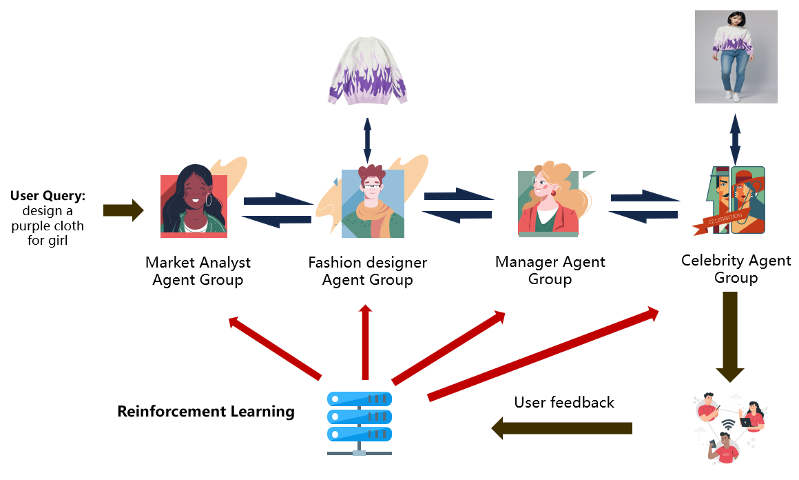
An example is depicted in Figure 5.2, where the workflow begins with a user request for a girl’s purple unpatterned hoodie, which initiates the AI system’s collaborative process. The system assembles an Agent Group consisting of specialized agents, each playing a unique role. The Market Analyst Agent Group is the first to engage, analyzing current market trends and consumer preferences using sophisticated tools. These agents employ forward reasoning to predict how these trends will evolve and how the new design might align with the changing market landscape. Simultaneously, the Designer Agent Group begins conceptualizing the hoodie, leveraging their design expertise to explore various possibilities, such as fabric choices, silhouettes, and style details. Their forward reasoning also considers how these design elements will resonate with market trends identified by the Market Analyst Group. As the initial design concepts start to take shape, the Web Celebrity and Internet Celebrity Agent Groups provide feedback on the design from a promotional and consumer perspective. They ensure that the design has the potential to succeed in the digital space, considering its appeal and marketability. Throughout this process, a continuous feedback loop is established, where each agent group’s input informs the next iteration of the design. The feedback is not only used to refine the design but also to train the system in an RL framework. This training process helps the AI model improve its predictions and decisions over time, with each iteration informed by the rewards and penalties derived from previous design outcomes.
The RL aspect of the workflow allows the system to learn from the interactions and feedback of the different agent groups, improving its ability to predict consumer preferences, fine-tune the design, and optimize market positioning. The iterative refinement process ensures that the Market Analyst Group continuously adjusts its predictions, the Designer Group enhances the design details, and the Web Celebrity and Internet Celebrity Groups maintain the design’s relevance in the promotional landscape. The outcome is a design that is aesthetically compelling and strategically aligned with market demands.
Once the design has undergone multiple cycles of feedback and refinement, the final product emerges, ready for output. This iterative, RL-powered approach ensures that the AI system not only delivers a design that meets the user’s request but also creates a product that is primed for success in the market. By continuously learning from past projects, the system becomes more adept at navigating the complexities of fashion design, making it a powerful tool for future innovation in the fashion industry.
5.6 AI for Social Media Marketing
Integrating AI into social media marketing is driven by the dynamic and data-intensive nature of these platforms. AI’s ability to process and analyze large volumes of data in real-time provides a significant advantage in understanding and predicting consumer behavior. By leveraging ML algorithms, AI can identify patterns and trends that might be imperceptible to human analysts, allowing marketers to create highly targeted campaigns that resonate with specific audience segments. This level of personalization not only improves the effectiveness of marketing messages but also enhances user experience by delivering content that is genuinely relevant and engaging.
To incorporate an RL perspective into the social media marketing framework, we can view the marketing process as an ongoing interaction with the environment, composed of the audience and their behaviors. In this context, RL can enhance the personalization and optimization processes by treating each interaction as a ‘state’ and each marketing action, such as post creation, ad targeting, or customer engagement, as an ‘action’. The goal is to maximize long-term rewards, such as engagement rates, conversions, or brand loyalty, through the refinement of strategies over time.
For instance, RL algorithms can optimize content delivery by continuously learning from user interactions. By tracking how users engage with different types of content, the system can adjust its content strategy to target segments more effectively, learning from feedback to improve over time. This iterative learning process enables marketers to fine-tune their campaigns based on real-time data, identifying not just what works, but also predicting what will work next.
Moreover, RL can be used to dynamically adjust marketing budgets and bids for ads in real-time, based on observed outcomes. By treating each interaction as a ‘reward’, RL systems can learn optimal bidding strategies that maximize the return on ad spend. In addition, RL agents can personalize the timing of social media posts by learning the best times to post for maximum audience engagement, adjusting the schedule based on evolving user behavior.
Sentiment analysis, combined with RL, can be further enhanced by adapting responses to customer feedback in real-time. The system can adjust its approach to customer service and brand messaging based on sentiment trends, evolving strategies in response to negative or positive feedback, and fine-tuning communication strategies over time.
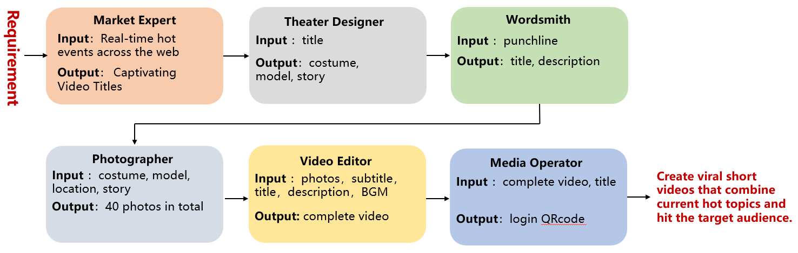
The workflow for social media marketing involves a series of interconnected steps, each managed by a specialized role or intelligent agent within a system designed to create and distribute engaging content. A detailed description of the workflow is as follows, depicted in Figure 5.3 for the example of generating an online short video:
1. Market Expert: The process begins with a market expert who has a deep understanding of current affairs and the ability to identify trending topics that are relevant to the target audience. This expert is responsible for the initial selection of hot topics that can be leveraged for marketing content.
2. Theater Designer: Once a topic is selected, the theater designer steps in. This role involves someone with a high aesthetic sense who can plan and construct unique scenes. They take the input of the hot topic and the target customer group description to create a setting that will be visually appealing and contextually relevant for the content.
3. Copywriter: With the scene set, the copywriter then takes the story text and crafts the accompanying narrative. This includes creating the title, description, and hashtags that will resonate with the audience and encourage engagement.
4. Photographer: After the narrative is established, the photographer, who is skilled in various styles of photography and has a keen sense of aesthetics, takes over. They are responsible for capturing the scenes with the clothing, models, and locations as specified, producing a series of photos that will be used in the final content.
5. Video Editor: The photos and the story are then handed over to the video editor. This role involves someone who can efficiently combine various video elements, including the photos, subtitles, title, description, and background music, to create a compelling video that captures the audience’s attention.
6. Account Operator: Finally, the completed video and its accompanying text are given to the account operator. This individual is meticulous and follows a careful process to manage the social media accounts, ensuring that the video is posted with the correct title, description, and hashtags, and that it reaches the intended audience.
7. Reflection and Optimization: A unique aspect of this workflow is the built-in reflection and learning phase after each task is completed. Each intelligent agent in the workflow is designed to reflect on their work and learn from it, continuously optimizing their approach for future tasks.
This workflow is designed to be efficient and adaptable, with each role contributing to a cohesive end product that is a social media post or campaign. It leverages the strengths of different experts and uses technology to enhance the process, ensuring that the content is both engaging and effective in reaching the target audience.
The integration of AI into social media marketing brings a multitude of strengths that are reshaping the industry. One of the most notable advantages is the efficiency with which AI can produce content, as evidenced by the ability to generate a piece in just 15 minutes, a pace that far surpasses traditional human-led processes. This rapid content creation not only ensures a consistent flow of fresh material but also allows for a swift response to trending topics, capitalizing on the ephemeral nature of social media engagement.
Moreover, the consistency of AI in producing content is exemplified by the stable volume of output, which is crucial for maintaining a regular brand presence. This reliability is further underscored by the AI’s capability to avoid the pitfalls of content scarcity that can plague human operators, such as a lack of material or themes. The AI’s resourcefulness ensures a continuous stream of relevant and engaging content, which is essential for keeping the audience’s interest and driving meaningful interactions.
The performance of AI-operated content, as measured by average playback volume, also stands out, with the data suggesting that AI can outperform human operations. This superior performance indicates that AI-driven content resonates well with audiences, likely due to its ability to tailor content to align with specific brand styles and requirements. The customization of content to fit the brand’s aesthetic, including the styling of models and the selection of shooting scenes, further enhances the brand’s message and appeal.
Scalability is another significant benefit of AI in social media marketing. As demand increases or as brands look to expand their reach across various platforms, AI can scale up content production without a corresponding increase in labor or resources. This scalability is particularly valuable for brands with global audiences or those looking to quickly ramp up their social media presence.
Furthermore, AI’s ability to optimize content over time through learning and data analysis is a key strength. By leveraging insights from consumer behavior and feedback, AI can fine-tune marketing strategies to improve engagement and better meet audience expectations. This data-driven approach to content and strategy optimization is a powerful tool for enhancing marketing effectiveness.
While not explicitly highlighted in the image, the cost-effectiveness of AI is an inherent advantage. By reducing the labor costs associated with content creation and management, AI can offer significant savings, especially when considering the volume and speed of content production it enables.
结论
第 06 章 · 章节速读
仿真提供试验环境，优化寻找更好的方案，AI 学习复杂关系。三者结合，能够支持更灵活的决策。
- 建立反馈循环
- 把建模、学习、决策和评估连接起来。
- 面向动态环境
- 让策略随新数据和环境变化持续调整。
- 用实验验证价值
- 在新样本和真实约束下，检验性能、稳定性与适用范围。
回到四个实验：练习建模、学习、比较与验证这条完整路径。
展开完整原文（英文）
This review underscores the potential transformative synergy between AI and SO for addressing the growing complexity of decision-making in modern dynamic and uncertain environments. The integration of advanced AI/ML techniques, such as DRL, multi-agent systems, and ANN-based predictive models, with detailed simulation models and state-of-the-art optimization algorithms enhances operational efficiency, predictive accuracy, and adaptability across various domains, including production planning, supply chain management, financial planning, and strategic marketing.
The synergistic relationship between AI and SO supports a robust, data-driven framework that not only manages large-scale datasets and high-dimensional complexities but also dynamically adapts to the reality of constantly changing environments. Harnessing AI’s predictive power and learning capabilities facilitates a more efficient and agile decision-making process, one that continuously evolves through real-time feedback and iterative SO learning algorithms, leading to the realization of truly intelligent digital twins.
致谢
The authors thank an anonymous reviewer for constructive feedback that helped us substantially improve the exposition of this work. Michael would also like to especially thank Xingyu Ren for his reading of the entire manuscript, catching many things that slipped past our eyes; however, all remaining errors, of which there are inevitably too many, are of course the responsibility of the authors. In terms of the material content, the authors all contributed to the first two chapters, whereas Chapters 3 and 4 were prepared by Yijie, albeit edited by Michael, and Chapter 5 was taken entirely from work carried out by Yijie and his research collaborators.
The work of Chun-Hung Chen was supported in part by the (U.S.) National Science Foundation under Award IIS-2123683.
参考文献
第 2 章 · 仿真与优化 / HANDS-ON LAB 01
生产单元的产能规划
离散事件仿真、置信区间与共同随机数。
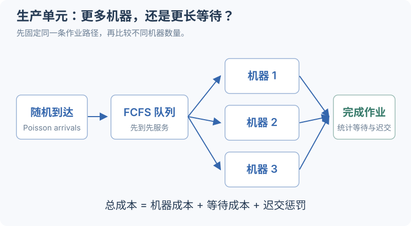
本实验把离散事件仿真、排序与选择、置信区间和方差缩减结合到一个产能规划问题中。生产经理需要决定在一个生产单元中安装多少台并行机器。增加机器可以减少拥堵和迟交，但每台新增机器都会带来产能成本。加工时间是随机的，通常不服从指数分布，因此需要通过仿真估计最佳配置，而不能直接套用简单的排队公式。
生产单元模型
在长度为 \(T\) 的生产班次中，作业按照速率为 \(\lambda\) 的泊松过程到达。各作业的加工时间是相互独立的对数正态随机变量。配置 \(m\) 台相同并行机器时，所有作业进入同一条先到先服务（FCFS）队列；每个到达的作业都被分配给最早空闲的机器。对作业 \(i\)，用 \(A_i\)、\(B_i\) 和 \(F_i\) 分别表示到达时间、加工时长和完成时间。若 \(E_{i,m}\) 是分配作业 \(i\) 前最早的机器可用时间，则 \[W_i(m)=\max\{0,E_{i,m}-A_i\}, \qquad F_i(m)=A_i+W_i(m)+B_i.\] 当总周转时间超过目标 \(\tau\)，即 \(F_i(m)-A_i>\tau\) 时，该作业被判定为迟交。Jobs arrive during a production shift of length \(T\) according to a Poisson process with rate \(\lambda\). Their processing requirements are independent lognormal random variables. A design with \(m\) identical parallel machines uses a single FCFS queue: each arriving job is assigned to the machine that becomes available first. For job \(i\), let \(A_i\), \(B_i\), and \(F_i\) denote its arrival, processing, and completion times. If \(E_{i,m}\) is the earliest machine-availability time immediately before job \(i\) is assigned, then \[W_i(m)=\max\{0,E_{i,m}-A_i\}, \qquad F_i(m)=A_i+W_i(m)+B_i.\] The job is classified as late when its total turnaround time exceeds a target \(\tau\), that is, when \(F_i(m)-A_i>\tau\).
对于一条仿真样本路径 \(\omega\)，机器配置 \(m\) 的总成本为 \[C(m;\omega) =c_m m +c_w\sum_{i=1}^{N(\omega)}W_i(m;\omega) +c_l\sum_{i=1}^{N(\omega)} \mathbf{1}\{F_i(m;\omega)-A_i(\omega)>\tau\},\] 其中，\(c_m\) 是每台机器每班次的成本，\(c_w\) 是等待成本率，\(c_l\) 是每个迟交作业的惩罚。对应的仿真优化问题为 \[\min_{m\in\{2,3,\ldots,6\}} J(m), \qquad J(m)=\mathbb{E}[C(m;\omega)].\]For a simulated sample path \(\omega\), the total cost of configuration \(m\) is \[C(m;\omega) =c_m m +c_w\sum_{i=1}^{N(\omega)}W_i(m;\omega) +c_l\sum_{i=1}^{N(\omega)} \mathbf{1}\{F_i(m;\omega)-A_i(\omega)>\tau\},\] where \(c_m\) is the per-shift machine cost, \(c_w\) is the waiting-cost rate, and \(c_l\) is the penalty for a late job. The simulation-optimization problem is \[\min_{m\in\{2,3,\ldots,6\}} J(m), \qquad J(m)=\mathbb{E}[C(m;\omega)].\]
离散事件仿真内核
实现的关键是在改变并行机器数量时，保持 FCFS 事件逻辑正确。下面的代码为每台机器维护一个下次可用时间。每次作业到达时，将其分配给该向量中可用时间最小的机器，并且只推进这台机器的时钟。
给定机器数量与一条样本路径的 FCFS 仿真内核。
def simulate_cell(machines, arrivals, services, parameters):
available_at = [0.0] * machines
total_wait, late_jobs = 0.0, 0
for arrival, service in zip(arrivals, services):
machine = min(range(machines),
key=available_at.__getitem__)
start = max(arrival, available_at[machine])
finish = start + service
total_wait += start - arrival
late_jobs += (finish - arrival
> parameters.turnaround_target)
available_at[machine] = finish
return (parameters.machine_cost * machines
+ parameters.waiting_cost * total_wait
+ parameters.late_job_cost * late_jobs)向量 available_at 就是离散事件仿真的状态，因此无需固定时间网格。返回值是 \(C(m;\omega)\) 的一次实现。在独立样本路径上重复运行内核，就能为每个候选配置 \(m\) 得到样本平均成本和近似 95% 置信区间 \[\bar C_m
\;\mathbin{\pm}\;
1.96\frac{S_m}{\sqrt{R}},\] 其中，\(R\) 是独立重复次数，\(S_m\) 是各次重复成本的样本标准差。The vector available_at is the state of the discrete-event simulation, so no fixed time grid is needed. The returned value is one realization of \(C(m;\omega)\). Repeating this kernel on independent sample paths gives, for every candidate \(m\), a sample mean cost and the approximate 95% confidence interval \[\bar C_m
\;\mathbin{\pm}\;
1.96\frac{S_m}{\sqrt{R}},\] where \(R\) is the number of independent replications and \(S_m\) is the sample standard deviation of the replication costs.
先进行统计选择，再用新路径验证。
def mean_ci(values):
estimate = mean(values)
half_width = 1.96 * stdev(values) / sqrt(len(values))
return estimate, half_width
selection_paths = [generate_path(seed=100 + r)
for r in range(1000)]
costs = {
m: [simulate_cell(m, *path, parameters)
for path in selection_paths]
for m in range(2, 7)
}
selected = min(costs, key=lambda m: mean(costs[m]))
validation_paths = [generate_path(seed=10000 + r)
for r in range(5000)]
validation = [simulate_cell(selected, *path, parameters)
for path in validation_paths]
validation_mean, validation_half_width = mean_ci(validation)第一个列表推导式让所有产能配置共享同一组 1,000 条样本路径，验证则使用不重叠的随机种子区间。因此，在选择阶段使某个方案看起来更好的仿真噪声，不会同时使其验证结果偏好。辅助函数 generate_path 实现前述泊松到达间隔和对数正态加工时间的采样；这里省略常规随机数生成代码，以突出与决策有关的逻辑。The first comprehension applies every capacity to the same 1,000 sample paths, whereas validation uses a disjoint seed range. Thus, simulation noise that favors a design during selection cannot also favor its reported validation performance. The helper generate_path implements the Poisson interarrival and lognormal service-time sampling specified above; its routine random-number generation is omitted so that the listing emphasizes the decision-dependent logic.
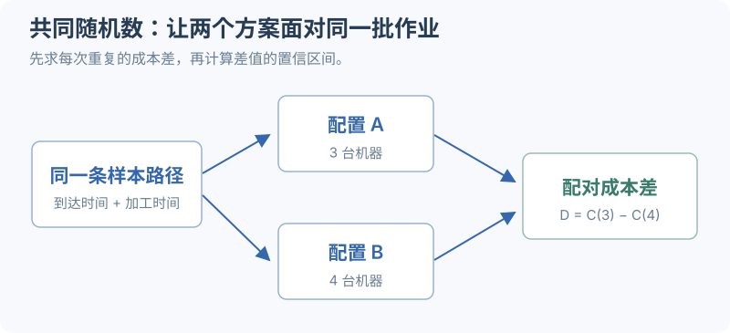
共同随机数
比较产能 \(m_1\) 和 \(m_2\) 时，两个系统使用相同的到达时间和逐作业加工时间。对第 \(r\) 次重复，定义配对成本差 \[D_r=C(m_1;\omega_r)-C(m_2;\omega_r).\] 随后直接根据 \(D_1,\ldots,D_R\) 构造置信区间。如果一条困难路径对两个配置都较困难，共同随机数便可通过引入正相关降低差值方差：\[\operatorname{Var}(D_r) =\operatorname{Var}(C_{m_1})+\operatorname{Var}(C_{m_2}) -2\operatorname{Cov}(C_{m_1},C_{m_2}).\] 可与使用独立随机数的结果比较，衡量置信区间宽度缩减了多少。必须按作业身份同步随机输入；仅用同一个种子初始化两个复杂仿真，不一定正确实现共同随机数。如果差值的置信区间包含零，现有证据还不足以区分两个方案，应增加仿真重复，而不能断言点估计较小的方案一定更好。To compare two capacity levels \(m_1\) and \(m_2\), the program uses the same arrivals and the same job-specific processing requirements in both systems. For replication \(r\), define the paired cost difference \[D_r=C(m_1;\omega_r)-C(m_2;\omega_r).\] The confidence interval is then constructed directly from \(D_1,\ldots,D_R\). Common random numbers are useful when a difficult sample path tends to be difficult for both configurations, because the induced positive correlation reduces \[\operatorname{Var}(D_r) =\operatorname{Var}(C_{m_1})+\operatorname{Var}(C_{m_2}) -2\operatorname{Cov}(C_{m_1},C_{m_2}).\] An independent-random-numbers comparison can be used to assess the reduction in confidence-interval width. Synchronizing random inputs by job identity is essential: merely initializing two complex simulations with the same seed does not necessarily implement CRN correctly. If a confidence interval for the difference contains zero, the experiment does not yet provide sufficient evidence to distinguish the two designs; the appropriate response is to collect more simulation replications rather than to declare the smaller point estimate definitively better.
一旦两个方案使用同一组顺序一致的样本路径，配对比较只需几行代码：
两种产能配置的共同随机数配对置信区间。
paired_differences = [
simulate_cell(3, *path, parameters)
- simulate_cell(4, *path, parameters)
for path in selection_paths
]
difference, half_width = mean_ci(paired_differences)先计算差值，再调用 mean_ci，可以保留同一路径内的协方差。若分别生成两组独立样本后再相减其均值，就会失去共同随机数带来的方差缩减。Forming the differences before calling mean_ci preserves the within-path covariance. Subtracting means from two independently generated samples would discard the variance reduction supplied by CRN.
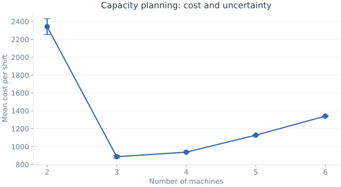
建议练习
可以在上面的代码基础上尝试以下扩展：
提高到达率或加工时间的变异程度，观察拥堵、迟交数量和选定产能如何变化。
改变 \(c_m\)、\(c_w\) 和 \(c_l\)，考察产能投资与运营延迟之间的权衡。Change \(c_m\), \(c_w\), and \(c_l\) to trace the tradeoff between capacity investment and operational delay.
对相邻配置重复配对比较，并报告独立随机数与共同随机数方法的置信区间半宽之比。
用最优计算预算分配（OCBA）代替平均分配仿真预算。先为每个方案分配少量重复，再优先把新增重复分配给表现有希望、但又难以区分的方案。
加入机器故障与维修，或引入两类具有不同优先级的作业。这些扩展会使解析求解更加困难，但不改变基于仿真的工作流程。
本实验展示了完整的仿真优化循环：建立随决策变化的随机模型，生成并同步样本路径，统计比较候选方案，分配计算资源，再用新重复验证最终决策。下一节的工业智能体架构可以看作自动执行并协调这类仿真与优化流程的系统。
完整实验代码 · production_capacity_lab.py
"""Simulation-based capacity planning for a parallel-machine production cell.
Run from the root directory of the LaTeX project with
python3 code/production_capacity_lab.py
The implementation uses only the Python standard library.
"""
from dataclasses import dataclass
from math import log, sqrt
from random import Random
from statistics import mean, stdev
@dataclass(frozen=True)
class ModelParameters:
horizon: float = 480.0 # minutes in one production shift
arrival_rate: float = 0.11 # expected arrivals per minute
mean_service: float = 18.0 # mean processing time in minutes
service_sigma: float = 0.45 # lognormal shape parameter
turnaround_target: float = 45.0
machine_cost: float = 220.0
waiting_cost: float = 0.70
late_job_cost: float = 30.0
@dataclass(frozen=True)
class SimulationResult:
jobs: int
mean_wait: float
utilization: float
late_jobs: int
total_cost: float
def generate_sample_path(parameters, seed):
"""Generate arrivals and customer-specific processing requirements."""
rng = Random(seed)
arrivals = []
services = []
arrival_time = 0.0
mu = log(parameters.mean_service) - 0.5 * parameters.service_sigma ** 2
while True:
arrival_time += rng.expovariate(parameters.arrival_rate)
if arrival_time > parameters.horizon:
break
arrivals.append(arrival_time)
services.append(rng.lognormvariate(mu, parameters.service_sigma))
return arrivals, services
def simulate_production_cell(num_machines, sample_path, parameters):
"""Run an FCFS discrete-event simulation on a fixed sample path."""
arrivals, services = sample_path
available_at = [0.0] * num_machines
total_wait = 0.0
busy_time_in_shift = 0.0
late_jobs = 0
for arrival, service in zip(arrivals, services):
machine = min(range(num_machines), key=available_at.__getitem__)
start = max(arrival, available_at[machine])
finish = start + service
wait = start - arrival
total_wait += wait
if finish - arrival > parameters.turnaround_target:
late_jobs += 1
busy_time_in_shift += max(
0.0,
min(finish, parameters.horizon) - start,
)
available_at[machine] = finish
jobs = len(arrivals)
mean_wait = total_wait / jobs if jobs else 0.0
utilization = busy_time_in_shift / (
num_machines * parameters.horizon
)
total_cost = (
parameters.machine_cost * num_machines
+ parameters.waiting_cost * total_wait
+ parameters.late_job_cost * late_jobs
)
return SimulationResult(
jobs=jobs,
mean_wait=mean_wait,
utilization=utilization,
late_jobs=late_jobs,
total_cost=total_cost,
)
def simulate_alternatives(
alternatives,
replications,
parameters,
seed,
use_common_random_numbers=True,
):
"""Simulate all machine counts with common or independent random numbers."""
results = {machines: [] for machines in alternatives}
for replication in range(replications):
if use_common_random_numbers:
path = generate_sample_path(parameters, seed + replication)
for machines in alternatives:
results[machines].append(
simulate_production_cell(machines, path, parameters)
)
else:
for machines in alternatives:
path_seed = seed + 100000 * machines + replication
path = generate_sample_path(parameters, path_seed)
results[machines].append(
simulate_production_cell(machines, path, parameters)
)
return results
def confidence_interval(values, confidence_multiplier=1.96):
estimate = mean(values)
half_width = confidence_multiplier * stdev(values) / sqrt(len(values))
return estimate, half_width
def summarize(results):
rows = []
for machines, replications in sorted(results.items()):
costs = [result.total_cost for result in replications]
estimate, half_width = confidence_interval(costs)
rows.append(
(
machines,
mean(result.mean_wait for result in replications),
mean(result.utilization for result in replications),
mean(result.late_jobs for result in replications),
estimate,
half_width,
)
)
return rows
def paired_difference_interval(results, first, second):
"""CRN interval for E[cost(first) - cost(second)]."""
differences = [
left.total_cost - right.total_cost
for left, right in zip(results[first], results[second])
]
return confidence_interval(differences)
def independent_difference_interval(results, first, second):
"""Independent-sample interval for E[cost(first) - cost(second)]."""
first_costs = [result.total_cost for result in results[first]]
second_costs = [result.total_cost for result in results[second]]
estimate = mean(first_costs) - mean(second_costs)
standard_error = sqrt(
stdev(first_costs) ** 2 / len(first_costs)
+ stdev(second_costs) ** 2 / len(second_costs)
)
return estimate, 1.96 * standard_error
def print_summary(rows):
print("Machines Mean wait Utilization Late jobs Mean cost 95% CI")
for machines, wait, utilization, late, cost, half_width in rows:
print(
f"{machines:8d} {wait:9.2f} {utilization:11.3f}"
f" {late:9.2f} {cost:9.2f} +/- {half_width:6.2f}"
)
def main():
parameters = ModelParameters()
alternatives = range(2, 7)
# Stage 1: use CRN to compare all candidate capacity levels.
selection_results = simulate_alternatives(
alternatives,
replications=1000,
parameters=parameters,
seed=100,
use_common_random_numbers=True,
)
selection_summary = summarize(selection_results)
print("Selection experiment")
print_summary(selection_summary)
selected = min(selection_summary, key=lambda row: row[4])[0]
print(f"\nSelected capacity: {selected} machines")
# Stage 2: validate the selected design on fresh sample paths.
validation_results = simulate_alternatives(
[selected],
replications=5000,
parameters=parameters,
seed=10000,
use_common_random_numbers=True,
)
validation_costs = [
result.total_cost for result in validation_results[selected]
]
validation_mean, validation_half_width = confidence_interval(
validation_costs
)
print(
f"Validation cost: {validation_mean:.2f}"
f" +/- {validation_half_width:.2f}"
)
# Demonstrate the precision gained from pairing sample paths.
crn_difference, crn_half_width = paired_difference_interval(
selection_results, 3, 4
)
independent_results = simulate_alternatives(
[3, 4],
replications=1000,
parameters=parameters,
seed=20000,
use_common_random_numbers=False,
)
ind_difference, ind_half_width = independent_difference_interval(
independent_results, 3, 4
)
print("\nCost difference, 3 machines minus 4 machines")
print(f"CRN: {crn_difference:7.2f} +/- {crn_half_width:.2f}")
print(f"Independent: {ind_difference:7.2f} +/- {ind_half_width:.2f}")
if __name__ == "__main__":
main()
第 3 章 · 人工智能与机器学习 / HANDS-ON LAB 02
学习库存补货策略
通过 Q-learning 学习策略，并用独立需求序列评估。
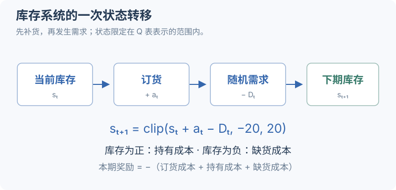
本实验把前面的 Q-learning 思路变成一个完整的仿真实验。目标不仅是让训练奖励提高，还要学出补货策略，并用全新、独立的需求序列评价其效果。这个例子把机器学习、随机仿真和统计评估连接起来，也为下一章的仿真优化方法提供了一个小规模预演。
库存模型
考虑单品、周期盘点、补货提前期为零的库存系统。在第 \(t\) 期开始时，状态 \(s_t\) 为当前净库存，负值表示积压需求。决策 \(a_t\in\{0,1,\ldots,Q_{\max}\}\) 为订货量。订货到达后发生随机需求 \(D_t\)，状态按照下式变化：\[s_{t+1}=\Pi_{[s_{\min},s_{\max}]} \bigl(s_t+a_t-D_t\bigr),\] 其中，\(\Pi\) 将状态截断到 Q 表表示的有限区间。下面的实现中，\(D_t\) 服从均值为 \(\lambda\) 的泊松分布。单期成本为 \[C(s_t,a_t,D_t) =K\mathbf{1}\{a_t>0\}+c a_t +h(s_{t+1})^+ +p(-s_{t+1})^+,\] 其中，\(K\) 为固定订货成本，\(c\) 为单位订货成本，\(h\) 为持有成本率，\(p\) 为缺货成本率。智能体获得的奖励为成本的相反数：\(R_t=-C(s_t,a_t,D_t)\)。Consider a single-item, periodic-review inventory system with zero replenishment lead time. At the beginning of period \(t\), the state \(s_t\) is the current net inventory; a negative value represents backlogged demand. The decision \(a_t\in\{0,1,\ldots,Q_{\max}\}\) is the order quantity. After the order arrives, random demand \(D_t\) occurs and the state evolves according to \[s_{t+1}=\Pi_{[s_{\min},s_{\max}]} \bigl(s_t+a_t-D_t\bigr),\] where \(\Pi\) truncates the state to the finite range represented by the Q-table. In the implementation below, \(D_t\) is Poisson with mean \(\lambda\). The one-period cost is \[C(s_t,a_t,D_t) =K\mathbf{1}\{a_t>0\}+c a_t +h(s_{t+1})^+ +p(-s_{t+1})^+,\] where \(K\) is the fixed ordering cost, \(c\) is the unit ordering cost, \(h\) is the holding-cost rate, and \(p\) is the shortage-cost rate. The reward supplied to the learning agent is the negative cost, \(R_t=-C(s_t,a_t,D_t)\).
实现一次环境转移
第一个代码块直接实现上述状态方程和成本函数。将环境机制与学习器分离后，就能修改需求或成本模型，而无需改变 Q-learning 更新规则。
库存环境的一次仿真状态转移。
def step(self, action):
demand = self.poisson_demand()
next_inventory = self.inventory + action - demand
next_inventory = max(
self.min_inventory,
min(self.max_inventory, next_inventory),
)
ordering = self.unit_order_cost * action
ordering += self.fixed_order_cost if action > 0 else 0.0
holding = self.holding_cost * max(next_inventory, 0)
shortage = self.shortage_cost * max(-next_inventory, 0)
self.inventory = next_inventory
self.time += 1
done = self.time >= self.horizon
reward = -(ordering + holding + shortage)
return next_inventory, reward, done嵌套的 min/max 调用实现投影 \(\Pi_{[s_{\min},s_{\max}]}\)。环境返回奖励而非成本，因为 Q-learning 的目标是最大化折扣回报。The two nested min/max calls implement the projection \(\Pi_{[s_{\min},s_{\max}]}\). The environment returns reward rather than cost because Q-learning maximizes discounted return.
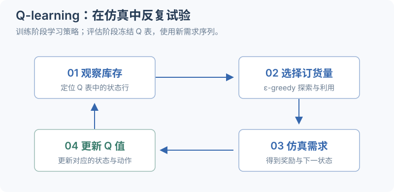
探索与 Q-learning 更新
Q 表的每一行对应一个库存状态，每一列对应一个允许的订货量。训练时先按 \(\epsilon\)-greedy 规则选择动作，再进行逐分量的随机近似更新：The Q-table has one row per inventory state and one column per admissible order quantity. During training, an \(\epsilon\)-greedy action is followed by the componentwise stochastic approximation update:
表格型 Q-learning 的核心循环。
q_table = [[0.0] * env.num_actions
for _ in range(env.num_states)]
visits = [[0] * env.num_actions
for _ in range(env.num_states)]
for episode in range(20000):
state, done = env.reset(), False
epsilon = max(0.05, 0.8 * 0.9995 ** episode)
while not done:
state_id = env.state_index(state)
if action_rng.random() < epsilon:
action = action_rng.randrange(env.num_actions)
else:
action = argmax(q_table[state_id])
next_state, reward, done = env.step(action)
next_id = env.state_index(next_state)
visits[state_id][action] += 1
alpha = visits[state_id][action] ** (-0.6)
continuation = 0.0 if done else max(q_table[next_id])
target = reward + gamma * continuation
q_table[state_id][action] += alpha * (
target - q_table[state_id][action]
)
state = next_state这里的 argmax 以确定方式处理并列最优。探索概率始终不低于 0.05，使相关动作持续获得样本。基于访问次数的学习率 \(\alpha_n=n^{-0.6}\) 满足 \(\sum_n\alpha_n=\infty\) 和 \(\sum_n\alpha_n^2<\infty\)，与前述收敛条件一致。Here argmax breaks ties deterministically. Exploration is never reduced below 0.05, so all relevant actions continue to receive samples. The visit-based learning rate \(\alpha_n=n^{-0.6}\) satisfies \(\sum_n\alpha_n=\infty\) and \(\sum_n\alpha_n^2<\infty\), matching the convergence conditions stated above.
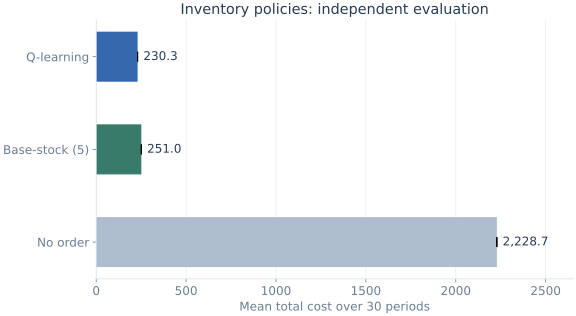
样本外策略比较
不能只用训练时的观测来证明学到的策略表现良好。因此先冻结 Q 表，再使用新需求序列评价其贪心策略。若 \(C_1,\ldots,C_n\) 是 \(n\) 次独立重复的总成本，则报告样本均值 \(\bar C_n\) 及近似 95% 置信区间 \[\bar C_n \;\mathbin{\pm}\; 1.96\frac{S_n}{\sqrt{n}},\] 其中，\(S_n\) 是样本标准差。三种策略使用相同的随机需求模型和重复次数：学到的贪心策略、补货至目标水平的基准库存策略，以及从不订货的策略。训练与评估种子不同，因此比较衡量的是对未见样本路径的泛化效果，而非对训练轨迹的记忆。Training observations must not also be used as the sole evidence that the learned policy performs well. The Q-table is therefore frozen and its greedy policy is evaluated using new demand streams. If \(C_1,\ldots,C_n\) are the total costs from \(n\) independent replications, it reports the sample mean \(\bar C_n\) and the approximate 95% confidence interval \[\bar C_n \;\mathbin{\pm}\; 1.96\frac{S_n}{\sqrt{n}},\] where \(S_n\) is the sample standard deviation. The same random-demand model and number of replications are used for three policies: the learned greedy policy, a base-stock policy that orders up to a target level, and a policy that never orders. Because the training and evaluation seeds are different, the reported comparison measures generalization to unseen sample paths rather than memorization of the training trajectories.
用新样本路径评价冻结后的策略。
def evaluate(policy, replications, evaluation_seed):
env = InventoryEnv(seed=evaluation_seed)
costs = []
for _ in range(replications):
state, done, total_reward = env.reset(), False, 0.0
while not done:
action = policy(state)
state, reward, done = env.step(action)
total_reward += reward
costs.append(-total_reward)
estimate = mean(costs)
half_width = 1.96 * stdev(costs) / sqrt(replications)
return estimate, half_width调用该函数时使用训练阶段未使用的种子，可以将策略构建与性能估计分离。评价学习策略、基准库存策略和不订货策略时使用相同种子，还能同步其需求序列，使基准比较更加精确。
建议练习
从这些代码块出发，每次只改变一个因素：
提高缺货成本率 \(p\)，观察学到的策略是否更加积极地订货，以及负库存出现的频率是否下降。Increase the shortage-cost rate \(p\). Examine whether the learned policy orders more aggressively and whether the frequency of negative inventory decreases.
改变泊松均值 \(\lambda\) 并重新训练，与原需求分布下训练得到的策略比较。Change the Poisson mean \(\lambda\) and retrain the agent. Compare the resulting policy with the policy trained under the original demand distribution.
改变探索计划和训练轮数，比较最初与最后 500 轮的平均成本；最终策略比较应依据独立评估的置信区间，而不是训练曲线。
搜索多个基准库存目标值，在同一组评估种子下将其中最好的策略与 Q-learning 比较，体会性能良好且透明的基准策略的价值。
作为扩展，用神经网络替换 Q 表，加入经验回放与目标网络，比较 DQN 和表格型 Q-learning 的稳定性与样本效率。
本实验强调一个重要区别：仿真生成用于学习策略的经验，独立仿真则估计所得策略的实际效果。如何更一般地将仿真与优化同 AI 方法结合，是下一章的主题。
完整实验代码 · inventory_q_learning.py
"""Tabular Q-learning for a finite-state inventory-control problem.
The script uses only the Python standard library. Run it with
python3 code/inventory_q_learning.py
from the root directory of the LaTeX project.
"""
from math import exp, sqrt
from random import Random
from statistics import mean, stdev
class InventoryEnv:
"""Periodic-review inventory system with zero replenishment lead time."""
def __init__(
self,
min_inventory=-20,
max_inventory=20,
max_order=10,
demand_mean=4.0,
fixed_order_cost=2.0,
unit_order_cost=1.0,
holding_cost=0.5,
shortage_cost=4.0,
horizon=30,
seed=0,
):
self.min_inventory = min_inventory
self.max_inventory = max_inventory
self.max_order = max_order
self.demand_mean = demand_mean
self.fixed_order_cost = fixed_order_cost
self.unit_order_cost = unit_order_cost
self.holding_cost = holding_cost
self.shortage_cost = shortage_cost
self.horizon = horizon
self.rng = Random(seed)
self.inventory = 0
self.time = 0
@property
def num_states(self):
return self.max_inventory - self.min_inventory + 1
@property
def num_actions(self):
return self.max_order + 1
def state_index(self, state):
return state - self.min_inventory
def reset(self):
self.inventory = 0
self.time = 0
return self.inventory
def _poisson_demand(self):
# Knuth's sampler is sufficient for the small mean used here.
threshold = exp(-self.demand_mean)
product = 1.0
count = 0
while product > threshold:
product *= self.rng.random()
count += 1
return count - 1
def step(self, action):
if action < 0 or action > self.max_order:
raise ValueError("action is outside the admissible range")
demand = self._poisson_demand()
next_inventory = self.inventory + action - demand
next_inventory = max(
self.min_inventory,
min(self.max_inventory, next_inventory),
)
ordering = self.unit_order_cost * action
if action > 0:
ordering += self.fixed_order_cost
holding = self.holding_cost * max(next_inventory, 0)
shortage = self.shortage_cost * max(-next_inventory, 0)
reward = -(ordering + holding + shortage)
self.inventory = next_inventory
self.time += 1
done = self.time >= self.horizon
return next_inventory, reward, done
def greedy_action(q_values):
"""Return a deterministic maximizing action (smallest one on a tie)."""
return max(range(len(q_values)), key=q_values.__getitem__)
def train_q_learning(env_parameters, episodes=20000, gamma=0.95, seed=7):
env = InventoryEnv(**env_parameters, seed=seed)
action_rng = Random(seed + 1)
q_table = [
[0.0 for _ in range(env.num_actions)]
for _ in range(env.num_states)
]
visits = [
[0 for _ in range(env.num_actions)]
for _ in range(env.num_states)
]
episode_costs = []
for episode in range(episodes):
state = env.reset()
total_reward = 0.0
done = False
epsilon = max(0.05, 0.8 * (0.9995 ** episode))
while not done:
state_id = env.state_index(state)
if action_rng.random() < epsilon:
action = action_rng.randrange(env.num_actions)
else:
action = greedy_action(q_table[state_id])
next_state, reward, done = env.step(action)
next_state_id = env.state_index(next_state)
visits[state_id][action] += 1
alpha = visits[state_id][action] ** (-0.6)
continuation = 0.0 if done else max(q_table[next_state_id])
target = reward + gamma * continuation
q_table[state_id][action] += alpha * (
target - q_table[state_id][action]
)
state = next_state
total_reward += reward
episode_costs.append(-total_reward)
return q_table, episode_costs
def evaluate_policy(env_parameters, policy, replications=5000, seed=1000):
"""Estimate expected finite-horizon cost using fresh simulation runs."""
env = InventoryEnv(**env_parameters, seed=seed)
costs = []
for _ in range(replications):
state = env.reset()
total_reward = 0.0
done = False
while not done:
state, reward, done = env.step(policy(state))
total_reward += reward
costs.append(-total_reward)
estimate = mean(costs)
half_width = 1.96 * stdev(costs) / sqrt(replications)
return estimate, half_width
def main():
parameters = {
"min_inventory": -20,
"max_inventory": 20,
"max_order": 10,
"demand_mean": 4.0,
"fixed_order_cost": 2.0,
"unit_order_cost": 1.0,
"holding_cost": 0.5,
"shortage_cost": 4.0,
"horizon": 30,
}
q_table, training_costs = train_q_learning(parameters)
min_inventory = parameters["min_inventory"]
max_order = parameters["max_order"]
def learned_policy(state):
return greedy_action(q_table[state - min_inventory])
def no_order_policy(_state):
return 0
def base_stock_policy(state, target=5):
return min(max_order, max(0, target - state))
print("Mean training cost, first 500 episodes:",
round(mean(training_costs[:500]), 2))
print("Mean training cost, last 500 episodes: ",
round(mean(training_costs[-500:]), 2))
policies = {
"Q-learning": learned_policy,
"Base-stock": base_stock_policy,
"No order": no_order_policy,
}
for name, policy in policies.items():
estimate, half_width = evaluate_policy(parameters, policy)
print(f"{name:11s}: {estimate:7.2f} +/- {half_width:.2f}")
print("\nLearned policy (inventory -> order quantity)")
for state in range(-10, 11):
print(f"{state:3d} -> {learned_policy(state):2d}")
if __name__ == "__main__":
main()
第 4 章 · 面向 AI 的仿真优化 / HANDS-ON LAB 03
前向学习与反向传播
在相同查询预算下比较不同梯度估计方法。
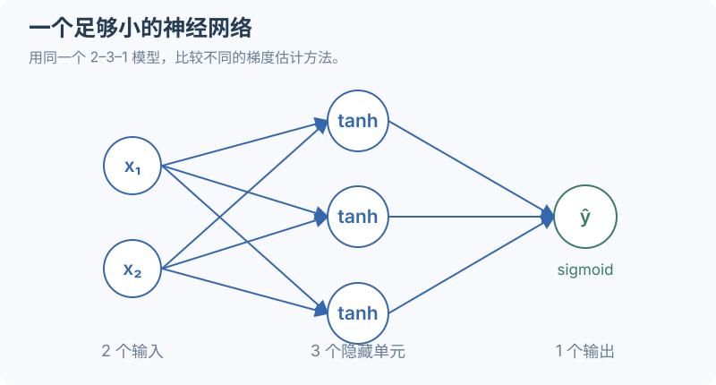
本实验将本章前两节的梯度估计方法转化为可复现的神经网络训练实验。任务是在只能查询指定参数处的损失、不能对模型求导的条件下训练一个小型分类器。当学习流程的一部分属于专有系统、不连续，或由外部仿真器实现时，就会出现这种情形。每次损失评估都可能昂贵，因此前向学习方法共享相同的查询预算，而不是相同的参数更新次数。
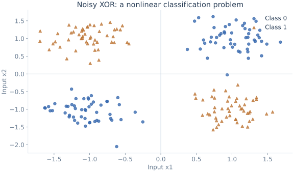
分类问题与模型
生成一个类别平衡、带噪声的 XOR 数据集。在四个角点 \((x_1,x_2)\in\{-1,1\}^2\) 附近采样，类别定义为 \[y=\mathbf{1}\{x_1x_2<0\}.\] 该问题不能被线性分离，因此采用 \(2\)–\(3\)–\(1\) 神经网络，隐藏层为双曲正切单元，输出层为 logistic 函数。若 \(\theta\in\mathbb{R}^{13}\) 包含所有权重和偏置，则用 \(L(\theta)\) 表示全数据二元交叉熵损失。训练和测试样本独立生成，因此测试准确率衡量样本外表现。We generate a balanced, noisy XOR data set. A point is sampled near one of the four corners \((x_1,x_2)\in\{-1,1\}^2\), and its class is \[y=\mathbf{1}\{x_1x_2<0\}.\] This problem is not linearly separable. The classifier is therefore a \(2\)–\(3\)–\(1\) neural network with hyperbolic-tangent hidden units and a logistic output. If \(\theta\in\mathbb{R}^{13}\) contains all weights and biases, the full-data binary cross-entropy loss is denoted by \(L(\theta)\). Training and test observations are generated independently, so the reported test accuracy measures out-of-sample performance.
仅前向方法只需要一个可以调用的损失函数。对这个小网络，可以提供如下接口而不暴露任何导数信息：
对黑盒训练损失进行前向评估。
def loss(theta, data):
total = 0.0
for x1, x2, label in data:
hidden = [tanh(w1(theta, j, x1, x2) + b1(theta, j))
for j in range(3)]
logit = b2(theta) + sum(
w2(theta, j) * hidden[j] for j in range(3)
)
total += softplus(logit) - label * logit
return total / len(data)辅助访问函数只负责解包 \(\theta\) 中的 13 个分量。下面的每种估计器都通过 loss(theta, data) 与模型交互，这就是实验的黑盒边界。The helper accessors only unpack the 13 entries of \(\theta\). Every estimator below interacts with the model through loss(theta, data), which is the black-box boundary of the experiment.
比较的方法
反向传播（BP）给出精确的白盒梯度，作为参考。第一种仅前向方法是坐标有限差分：\[\widehat g_i^{\mathrm{FD}}(\theta) =\frac{L(\theta+\delta e_i)-L(\theta-\delta e_i)}{2\delta}, \qquad i=1,\ldots,d,\] 每次更新需要 \(2d\) 次损失查询。第二种方法是类似 SPSA 的两次查询、秩一估计器，先采样各向同性单位向量 \(u\)，再计算 \[\widehat g_1(\theta) =d\frac{L(\theta+\delta u)-L(\theta-\delta u)}{2\delta}u.\] 它的查询开销很小，但单次搜索方向可能有较大噪声。Backpropagation (BP) supplies the exact white-box gradient and serves as a reference. The first forward-only method uses coordinate finite differences, \[\widehat g_i^{\mathrm{FD}}(\theta) =\frac{L(\theta+\delta e_i)-L(\theta-\delta e_i)}{2\delta}, \qquad i=1,\ldots,d,\] which requires \(2d\) loss queries per update. The second is a two-query, rank-one SPSA-style estimator. It samples an isotropic unit vector \(u\) and computes \[\widehat g_1(\theta) =d\frac{L(\theta+\delta u)-L(\theta-\delta u)}{2\delta}u.\] This approach is query efficient, but an individual search direction can be noisy.
从实现中可以直接看出查询成本的差别：
坐标估计器与两次查询的随机方向估计器。
def coordinate_gradient(theta, data, delta, rng):
del rng
gradient = []
for i in range(len(theta)):
direction = unit_vector(i, len(theta))
plus = loss(shift(theta, direction, delta), data)
minus = loss(shift(theta, direction, -delta), data)
gradient.append((plus - minus) / (2.0 * delta))
return gradient
def random_direction_gradient(theta, data, delta, rng):
dimension = len(theta)
scale = 1.0 / sqrt(dimension)
direction = [rng.choice((-scale, scale))
for _ in range(dimension)]
plus = loss(shift(theta, direction, delta), data)
minus = loss(shift(theta, direction, -delta), data)
derivative = (plus - minus) / (2.0 * delta)
return [dimension * derivative * u for u in direction]坐标循环逐一重建每个分量，因此会调用损失函数 \(2d\) 次。随机方向方法用同样的两次评估计算所有分量；由于 \(\mathbb{E}[uu^\top]=I_d/d\)，需要乘以 \(d\) 来校正尺度。The coordinate loop reconstructs every component and therefore invokes the loss \(2d\) times. The random-direction code uses the same two evaluations for all components; multiplying by \(d\) corrects the scale because \(\mathbb{E}[uu^\top]=I_d/d\).
第三种仅前向方法采样一组正交单位向量 \(u_1,\ldots,u_r\)，在随机秩为 \(r\) 的子空间内平均方向差分：\[\widehat g_r(\theta) =\frac{d}{r}\sum_{k=1}^{r} \frac{L(\theta+\delta u_k)-L(\theta-\delta u_k)}{2\delta}u_k.\] 对均匀随机定向的子空间，该估计器在期望上恢复完整梯度，仅保留有限差分误差。每次更新消耗 \(2r\) 次查询。增大 \(r\) 可降低方向变异，但也会减少固定预算下可完成的更新次数。基线使用 \(r=3\)，并对四种梯度方法统一使用 Adam。The third forward-only method draws an orthonormal set \(u_1,\ldots,u_r\) and averages directional differences over a random rank-\(r\) subspace: \[\widehat g_r(\theta) =\frac{d}{r}\sum_{k=1}^{r} \frac{L(\theta+\delta u_k)-L(\theta-\delta u_k)}{2\delta}u_k.\] For a uniformly oriented random subspace, this estimator recovers the full gradient in expectation up to the finite-difference error. Each update costs \(2r\) queries. Increasing \(r\) lowers directional variability but also reduces the number of updates possible under a fixed budget. The baseline uses \(r=3\) and applies Adam to all four gradient methods.
正交秩为 \(r\) 的子空间梯度估计。Orthogonal rank-\(r\) subspace gradient estimate.
def subspace_gradient(theta, data, delta, rank, rng):
dimension = len(theta)
directions = orthonormal_directions(rank, dimension, rng)
estimate = [0.0] * dimension
for direction in directions:
plus = loss(shift(theta, direction, delta), data)
minus = loss(shift(theta, direction, -delta), data)
derivative = (plus - minus) / (2.0 * delta)
for i in range(dimension):
estimate[i] += (dimension / rank) * (
derivative * direction[i]
)
return estimate函数 orthonormal_directions 对高斯向量进行 Gram–Schmidt 正交化。正交性可防止 \(r\) 个方向反复测量同一个局部分量，因子 \(d/r\) 则提供公式中的各向同性尺度校正。The routine orthonormal_directions applies Gram–Schmidt to Gaussian vectors. Orthogonality prevents the \(r\) directions from repeatedly measuring the same local component, while the factor \(d/r\) gives the isotropic scaling in the displayed estimator.
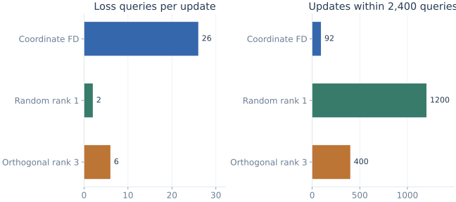
实验设计与结果解读
每次重复中，所有方法从相同参数出发。每种仅前向方法最多获得 \(B=2{,}400\) 次训练损失查询。因此，坐标有限差分只能更新 \(\lfloor B/(2d)\rfloor=92\) 次，秩一估计器更新 \(1{,}200\) 次，秩三估计器更新 \(400\) 次。BP 是白盒参考，其显示的计数表示全训练集计算次数，不是黑盒损失查询。完整实验使用五组独立生成的初始参数重复运行，报告平均测试损失和准确率，以及五次重复之间的近似 95% 置信区间半宽。Within a repetition, all methods start from the same parameters. Each forward-only method receives at most \(B=2{,}400\) training-loss queries. Consequently, coordinate finite differences perform only \(\lfloor B/(2d)\rfloor=92\) updates, the rank-one estimator performs \(1{,}200\) updates, and the rank-three estimator performs \(400\) updates. BP is a white-box reference rather than a forward-only competitor; its displayed count represents full-data training passes rather than black-box loss queries. The complete experiment is repeated from five independently generated initial parameter vectors. It reports mean test loss and accuracy, together with approximate 95% confidence-interval half-widths across the five repetitions.
控制循环的是查询预算，而不是优化器步数：
确保所有方法遵守相同的损失查询预算。
def rank_three_gradient(theta, data, delta, rng):
return subspace_gradient(theta, data, delta, 3, rng)
methods = [
("Coordinate FD", coordinate_gradient, 2 * dimension, 0.025),
("Random rank 1", random_direction_gradient, 2, 0.012),
("Orthogonal rank 3", rank_three_gradient, 6, 0.014),
]
for name, estimator, queries_per_step, learning_rate in methods:
theta = initial_theta.copy()
optimizer = Adam(dimension, learning_rate)
steps = query_budget // queries_per_step
for _ in range(steps):
gradient = estimator(theta, train_data, delta, rng)
optimizer.step(theta, gradient)
test_results[name].append(evaluate(theta, test_data))每次重复中，各方法使用相同的 initial_theta。最后的追加操作保存测试损失和准确率，再对五次独立初始化汇总，而不依据单次运行得出结论。Every method starts from the same initial_theta within a repetition. The final append stores test loss and accuracy, which are summarized across five independent initializations rather than inferred from a single run.
应将输出理解为查询效率的比较。坐标有限差分通常给出可靠方向，但每次更新消耗较多查询。秩一估计以更大的梯度方差换取更多更新次数。正交秩三估计介于两者之间。没有方法必然在所有预算下占优；改变 \(B\)、\(\delta\) 或 \(r\)，都可能改变最优方法。The output should be read as a query-efficiency comparison. Coordinate finite differences usually produce a reliable direction but spend many queries per update. Rank-one estimation makes far more updates at the price of higher gradient variance. The orthogonal rank-three estimator lies between these extremes. No method must dominate for every budget: changing \(B\), \(\delta\), or \(r\) can change the winner.
建议练习
在上述代码基础上，可以尝试以下扩展：
将公共查询预算从 300 调整到 9,600，绘制测试损失相对于查询次数的曲线，而不是相对于优化迭代次数的曲线。
尝试不同秩 \(r\in\{1,2,3,6,13\}\)，同时记录最终测试损失的变异程度，以及各个秩在预算内允许的更新次数。Try ranks \(r\in\{1,2,3,6,13\}\). Record both the variability of the final test loss and the number of updates affordable at each rank.
扫描扰动半径 \(\delta\)，解释为什么半径过大会引入有限差分偏差，而半径过小可能放大数值误差。Sweep the perturbation radius \(\delta\). Explain why a radius that is too large introduces finite-difference bias, whereas a radius that is too small can amplify numerical error.
将每次查询中的全训练集损失改为小批量损失。正向与负向扰动评估共享同一个小批量，并与独立小批量的估计方差比较。
增加隐藏层宽度，观察参数数量增大时，坐标有限差分的 \(2d\) 次查询成本与随机子空间估计的成本如何变化。Increase the hidden-layer width. Examine how the \(2d\) cost of coordinate finite differences scales relative to random-subspace estimation as the number of parameters grows.
本实验展示了仿真优化在 AI 中的一种作用：把前向评估视为有限资源，用随机梯度估计器将评估转换成搜索方向，再通过统计重复区分稳健的训练方法与偶然有利的一次运行。
完整实验代码 · forward_only_training.py
"""Query-efficient, forward-only training of a small neural network.
Run from the project root with
python3 code/forward_only_training.py
The experiment compares coordinate finite differences, a two-query random
direction estimator (SPSA), and an orthogonal-subspace estimator under the
same number of loss-function queries. Exact backpropagation is included only
as a white-box reference. The implementation uses the Python standard library.
"""
from __future__ import annotations
import math
import random
import statistics
from dataclasses import dataclass
from typing import Callable, List, Sequence, Tuple
HIDDEN = 3
DIMENSION = 2 * HIDDEN + HIDDEN + HIDDEN + 1
QUERY_BUDGET = 2400
REPETITIONS = 5
PERTURBATION = 0.08
Example = Tuple[float, float, int]
Vector = List[float]
def make_noisy_xor(samples_per_corner: int, seed: int) -> List[Example]:
"""Generate a balanced, nonlinear binary-classification data set."""
rng = random.Random(seed)
data: List[Example] = []
for x1_center, x2_center in [(-1.0, -1.0), (-1.0, 1.0),
(1.0, -1.0), (1.0, 1.0)]:
label = int(x1_center * x2_center < 0.0)
for _ in range(samples_per_corner):
x1 = x1_center + rng.gauss(0.0, 0.28)
x2 = x2_center + rng.gauss(0.0, 0.28)
data.append((x1, x2, label))
rng.shuffle(data)
return data
def unpack(theta: Sequence[float]):
"""Return views of the 2-3-1 network parameters."""
w1 = theta[0:2 * HIDDEN]
b1 = theta[2 * HIDDEN:3 * HIDDEN]
w2 = theta[3 * HIDDEN:4 * HIDDEN]
b2 = theta[-1]
return w1, b1, w2, b2
def sigmoid(z: float) -> float:
if z >= 0.0:
return 1.0 / (1.0 + math.exp(-z))
ez = math.exp(z)
return ez / (1.0 + ez)
def softplus(z: float) -> float:
return max(z, 0.0) + math.log1p(math.exp(-abs(z)))
def network_output(theta: Sequence[float], x1: float, x2: float):
w1, b1, w2, b2 = unpack(theta)
hidden = [math.tanh(w1[2 * j] * x1 + w1[2 * j + 1] * x2 + b1[j])
for j in range(HIDDEN)]
logit = b2 + sum(w2[j] * hidden[j] for j in range(HIDDEN))
return hidden, logit
def loss(theta: Sequence[float], data: Sequence[Example]) -> float:
total = 0.0
for x1, x2, label in data:
_, logit = network_output(theta, x1, x2)
total += softplus(logit) - label * logit
return total / len(data)
def exact_gradient(theta: Sequence[float], data: Sequence[Example]) -> Vector:
"""White-box gradient used by the backpropagation reference."""
gradient = [0.0] * DIMENSION
w1, _, w2, _ = unpack(theta)
for x1, x2, label in data:
hidden, logit = network_output(theta, x1, x2)
error = (sigmoid(logit) - label) / len(data)
for j in range(HIDDEN):
local = error * w2[j] * (1.0 - hidden[j] ** 2)
gradient[2 * j] += local * x1
gradient[2 * j + 1] += local * x2
gradient[2 * HIDDEN + j] += local
gradient[3 * HIDDEN + j] += error * hidden[j]
gradient[-1] += error
return gradient
def shifted(theta: Sequence[float], direction: Sequence[float],
amount: float) -> Vector:
return [value + amount * step for value, step in zip(theta, direction)]
def coordinate_gradient(theta: Sequence[float], data: Sequence[Example],
radius: float, rng: random.Random) -> Vector:
del rng
gradient = []
for i in range(DIMENSION):
direction = [0.0] * DIMENSION
direction[i] = 1.0
plus = loss(shifted(theta, direction, radius), data)
minus = loss(shifted(theta, direction, -radius), data)
gradient.append((plus - minus) / (2.0 * radius))
return gradient
def spsa_gradient(theta: Sequence[float], data: Sequence[Example],
radius: float, rng: random.Random) -> Vector:
"""Two-query isotropic random-direction estimator."""
scale = 1.0 / math.sqrt(DIMENSION)
direction = [rng.choice((-scale, scale)) for _ in range(DIMENSION)]
plus = loss(shifted(theta, direction, radius), data)
minus = loss(shifted(theta, direction, -radius), data)
directional_derivative = (plus - minus) / (2.0 * radius)
return [DIMENSION * directional_derivative * value for value in direction]
def orthonormal_directions(count: int, rng: random.Random) -> List[Vector]:
"""Draw a uniformly oriented, orthonormal set by Gram--Schmidt."""
basis: List[Vector] = []
while len(basis) < count:
vector = [rng.gauss(0.0, 1.0) for _ in range(DIMENSION)]
for unit in basis:
projection = sum(a * b for a, b in zip(vector, unit))
vector = [a - projection * b for a, b in zip(vector, unit)]
norm = math.sqrt(sum(value * value for value in vector))
if norm > 1.0e-10:
basis.append([value / norm for value in vector])
return basis
def subspace_gradient(theta: Sequence[float], data: Sequence[Example],
radius: float, rng: random.Random,
rank: int = 3) -> Vector:
"""Average central differences over a random rank-r subspace."""
estimate = [0.0] * DIMENSION
for direction in orthonormal_directions(rank, rng):
plus = loss(shifted(theta, direction, radius), data)
minus = loss(shifted(theta, direction, -radius), data)
derivative = (plus - minus) / (2.0 * radius)
for i in range(DIMENSION):
estimate[i] += (DIMENSION / rank) * derivative * direction[i]
return estimate
class Adam:
def __init__(self, dimension: int, learning_rate: float):
self.learning_rate = learning_rate
self.first = [0.0] * dimension
self.second = [0.0] * dimension
self.time = 0
def step(self, theta: Vector, gradient: Sequence[float]) -> None:
self.time += 1
for i, value in enumerate(gradient):
self.first[i] = 0.9 * self.first[i] + 0.1 * value
self.second[i] = 0.999 * self.second[i] + 0.001 * value * value
first_hat = self.first[i] / (1.0 - 0.9 ** self.time)
second_hat = self.second[i] / (1.0 - 0.999 ** self.time)
theta[i] -= self.learning_rate * first_hat / (math.sqrt(second_hat) + 1e-8)
@dataclass(frozen=True)
class Method:
name: str
estimator: Callable[[Sequence[float], Sequence[Example], float,
random.Random], Vector]
queries_per_step: int
learning_rate: float
def train(method: Method, initial: Sequence[float], data: Sequence[Example],
seed: int) -> Tuple[Vector, int, int]:
theta = list(initial)
optimizer = Adam(DIMENSION, method.learning_rate)
rng = random.Random(seed)
steps = QUERY_BUDGET // method.queries_per_step
for _ in range(steps):
gradient = method.estimator(theta, data, PERTURBATION, rng)
optimizer.step(theta, gradient)
return theta, steps, steps * method.queries_per_step
def backprop_estimator(theta: Sequence[float], data: Sequence[Example],
radius: float, rng: random.Random) -> Vector:
del radius, rng
return exact_gradient(theta, data)
def accuracy(theta: Sequence[float], data: Sequence[Example]) -> float:
correct = 0
for x1, x2, label in data:
_, logit = network_output(theta, x1, x2)
correct += int((logit >= 0.0) == bool(label))
return correct / len(data)
def mean_ci(values: Sequence[float]) -> Tuple[float, float]:
mean = statistics.mean(values)
if len(values) < 2:
return mean, 0.0
half_width = 1.96 * statistics.stdev(values) / math.sqrt(len(values))
return mean, half_width
def main() -> None:
train_data = make_noisy_xor(samples_per_corner=50, seed=2026)
test_data = make_noisy_xor(samples_per_corner=250, seed=90210)
methods = [
Method("Backprop reference", backprop_estimator, 1, 0.025),
Method("Coordinate FD", coordinate_gradient, 2 * DIMENSION, 0.025),
Method("SPSA (rank 1)", spsa_gradient, 2, 0.012),
Method("Orthogonal rank 3", subspace_gradient, 6, 0.014),
]
results = {method.name: {"loss": [], "accuracy": []} for method in methods}
step_counts = {}
query_counts = {}
for repetition in range(REPETITIONS):
init_rng = random.Random(7000 + repetition)
initial = [init_rng.gauss(0.0, 0.35) for _ in range(DIMENSION)]
for method in methods:
fitted, steps, queries = train(
method, initial, train_data, seed=8000 + repetition
)
results[method.name]["loss"].append(loss(fitted, test_data))
results[method.name]["accuracy"].append(accuracy(fitted, test_data))
step_counts[method.name] = steps
query_counts[method.name] = queries
print("Noisy XOR with a 2-3-1 neural network")
print(f"Parameters: {DIMENSION}; loss-query budget: {QUERY_BUDGET}; "
f"repetitions: {REPETITIONS}")
print("Backpropagation is a white-box reference; the other methods use "
"loss queries only.\n")
header = f"{'method':<22} {'steps':>7} {'queries':>8} {'test loss':>20} {'accuracy':>20}"
print(header)
print("-" * len(header))
for method in methods:
loss_mean, loss_half = mean_ci(results[method.name]["loss"])
acc_mean, acc_half = mean_ci(results[method.name]["accuracy"])
print(f"{method.name:<22} {step_counts[method.name]:7d} "
f"{query_counts[method.name]:8d} "
f"{loss_mean:8.4f} +/- {loss_half:7.4f} "
f"{100.0 * acc_mean:8.2f}% +/- {100.0 * acc_half:6.2f}%")
print("\nTry changing QUERY_BUDGET, PERTURBATION, or the subspace rank.")
if __name__ == "__main__":
main()
第 4 章 · 面向 AI 的仿真优化 / HANDS-ON LAB 04
五子棋与蒙特卡洛树搜索
实现 UCT 搜索，并通过交替执子的比赛检验策略。
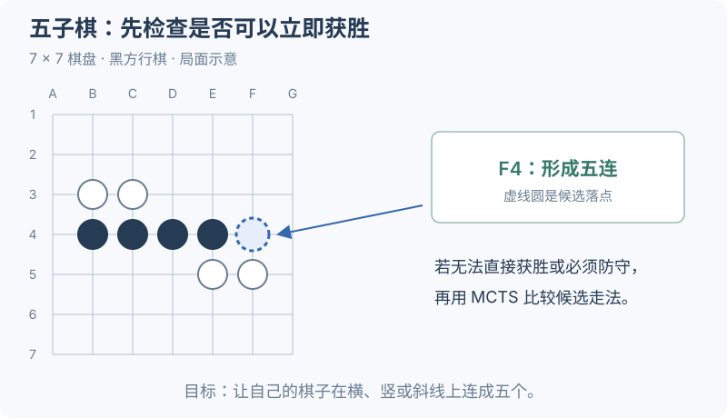
本实验通过完整的五子棋对弈实现 MCTS 的选择、扩展、模拟和回传四个阶段。黑白双方交替在棋盘落子，先在横线、竖线或斜线上形成连续五子的玩家获胜。基线采用 \(7\times7\) 棋盘，使完整实验可以较快运行，同时保留稀疏终局奖励和大搜索树这两个适合 MCTS 的特点。This lab implements the four phases of MCTS—selection, expansion, simulation, and backpropagation—in a complete game-playing example. Gomoku is played by alternating black and white stones on a grid; the first player to form an uninterrupted horizontal, vertical, or diagonal line of five stones wins. The baseline uses a \(7\times7\) board so that a full experiment runs quickly, while preserving the sparse terminal rewards and large search tree that motivate MCTS.
状态、动作与奖励
状态 \(s\) 包括棋盘和当前行棋方。动作是在空格落子，状态转移是确定的。终局模拟的奖励为胜利 1、平局 \(1/2\)、失败 0，始终从选择了当前待更新边的玩家视角计算。为控制树搜索分支数，扩展阶段只考虑已有棋子附近的空格。后续模拟刻意保持低成本，从全部空格中均匀采样，直至到达终局。A state \(s\) contains the board and the player to move. An action places a stone in an empty cell and the transition is deterministic. A terminal rollout returns reward 1 for a win, \(1/2\) for a draw, and 0 for a loss, always from the perspective of the player who selected the edge being updated. To control branching during tree search, expansion considers empty cells next to an existing stone. Simulation rollouts remain deliberately inexpensive: they sample uniformly from all empty cells until a terminal state is reached.
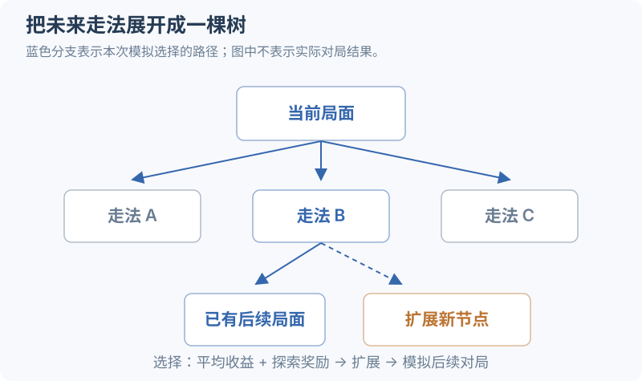
UCT 树策略
若动作 \(a\) 的访问次数为 \(N(s,a)\)，所在节点的访问次数为 \(N(s)\)，则选择使下式最大的子节点：\[\operatorname{UCT}(s,a) =\overline Q(s,a) +c\sqrt{\frac{\log N(s)}{N(s,a)}},\] 对应的子节点选择代码如下：If action \(a\) has been visited \(N(s,a)\) times at a node visited \(N(s)\) times, the implementation selects the child maximizing \[\operatorname{UCT}(s,a) =\overline Q(s,a) +c\sqrt{\frac{\log N(s)}{N(s,a)}},\] which maps to the following child-selection method:
在树节点的子节点之间进行 UCT 选择。
def uct_child(self, exploration=sqrt(2.0)):
log_parent = log(self.visits)
return max(
self.children,
key=lambda child: (
child.value / child.visits
+ exploration
* sqrt(log_parent / child.visits)
),
)其中，\(\overline Q(s,a)\) 是平均模拟奖励，\(c=\sqrt{2}\) 是探索常数。第一项利用已有表现较好的走法，第二项鼓励探索证据较少的走法。模拟预算耗尽后，实际执行根节点下访问次数最多的动作。正式搜索前会做简短的战术检查：若能立即获胜，就直接取胜；否则优先阻止对手立即获胜。where \(\overline Q(s,a)\) is its mean simulated reward and \(c=\sqrt{2}\) is the exploration constant. The first term exploits moves that have performed well, whereas the second favors moves with less evidence. After the specified simulation budget is exhausted, the root action with the largest visit count is played. A short tactical check before search takes an immediate winning move or blocks an immediate loss.
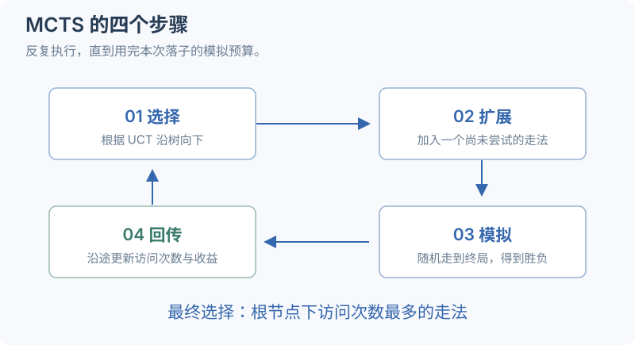
一次 MCTS 模拟
四个概念阶段可以合并为一段紧凑的控制流程。选择阶段在遇到仍有未尝试走法的节点时停止；扩展阶段取出其中一个走法；模拟阶段产生终局胜者；回传阶段更新所选路径上的每个节点。
选择、扩展、后续模拟与回传。
def run_simulation(root, rng):
node = root
# Selection
while not node.untried and node.children:
node = node.uct_child()
# Expansion
if node.untried:
move = node.untried.pop(rng.randrange(len(node.untried)))
child_board = play(node.board, move, node.player)
node = Node(child_board, -node.player, move, node)
node.parent.children.append(node)
# Simulation
winner = rollout(node.board, node.player,
node.last_move, rng)
# Backpropagation
while node is not None:
node.visits += 1
player_who_moved = -node.player
if winner == player_who_moved:
node.value += 1.0
elif winner == 0:
node.value += 0.5
node = node.parent
def search(root, simulations, rng):
for _ in range(simulations):
run_simulation(root, rng)
best = max(root.children, key=lambda child: child.visits)
return best.last_move价值从选择了通向该节点之边的玩家视角保存，因此回传时使用 -node.player。最终决策依据访问次数，而不是噪声较大的最大样本均值，这是根节点处一种常见且稳健的选择规则。Values are stored from the perspective of the player who selected the edge leading to a node, which explains -node.player during backpropagation. The final rule uses visit count rather than the noisiest largest sample mean, a common robust choice at the root.
黑白均衡的对局评估
实验将每步 30 次和 100 次模拟的搜索预算与两个透明基准比较。随机策略从附近空格中采样；一步策略先检查能否立即获胜或是否必须防守，否则随机落子。每组六局对抗交替安排双方执黑，避免把先手优势误认为策略质量差异。
在策略比较中交替执黑与执白。
for game in range(games):
challenger_is_black = (game % 2 == 0)
black = challenger if challenger_is_black else opponent
white = opponent if challenger_is_black else challenger
winner = play_game(black, white, seed + game)
challenger_color = 1 if challenger_is_black else -1
wins += (winner == challenger_color)
draws += (winner == 0)
losses += (winner == -challenger_color)交替执子避免将某个策略固定绑定到某种颜色，种子偏移则保证对局可复现。基线设置下，MCTS-30 对随机策略、MCTS-100 对随机策略，以及 MCTS-100 对一步策略的胜–平–负记录分别为 6–0–0、6–0–0 和 5–1–0。这些小规模比赛可用于验证实现，但不足以支撑确定性的性能结论；严谨比较应进行大量独立对局并报告不确定性区间。
建议练习
下面这些修改可以将对弈实验与本章前面的 MCTS 概念联系起来：
按几何级数增加模拟预算，分别以每步模拟次数和实际运行时间为横轴绘制对局得分。
改变探索常数 \(c\)，比较接近贪心的搜索与更多探索低访问走法的搜索。Vary the exploration constant \(c\). Compare a nearly greedy search with a search that spends more simulations on underexplored moves.
在后续模拟中使用一步策略，检验更强但更昂贵的模拟策略能否提升单位时间内的棋力。
比较按最大访问次数和按最大估计平均奖励选择最终动作的规则，记录两者产生不同选择的频率。
把棋盘扩大为 \(9\times9\) 或 \(15\times15\)，探索渐进加宽、真实落子后复用搜索树，或利用学到的策略先验来控制更大的分支数。Increase the board to \(9\times9\) or \(15\times15\). Investigate progressive widening, tree reuse after each real move, or a learned policy prior to control the larger branching factor.
第一个实验用基于仿真的梯度估计训练 AI 模型，第二个实验用模拟的未来选择动作。它们展示了两种不同的方式：分配有限的仿真预算，以改善 AI 计算。
完整实验代码 · gomoku_mcts.py
"""Monte Carlo tree search for a small game of Gomoku (five-in-a-row).
Run from the project root with
python3 code/gomoku_mcts.py
The implementation uses only the Python standard library. It demonstrates
selection by UCT, expansion, random rollouts, and backpropagation,
then evaluates the search policy in color-balanced tournaments.
"""
from __future__ import annotations
import math
import random
from dataclasses import dataclass
from typing import Callable, List, Optional, Sequence, Tuple
BOARD_SIZE = 7
WIN_LENGTH = 5
EXPLORATION = math.sqrt(2.0)
Board = Tuple[int, ...]
Move = int
Policy = Callable[[Board, int, random.Random], Move]
def play(board: Board, move: Move, player: int) -> Board:
updated = list(board)
updated[move] = player
return tuple(updated)
def coordinates(move: Move) -> Tuple[int, int]:
return divmod(move, BOARD_SIZE)
def outcome(board: Board, last_move: Optional[Move]) -> Optional[int]:
"""Return 1/-1 for a winner, 0 for a draw, or None if play continues."""
if last_move is not None:
row, column = coordinates(last_move)
player = board[last_move]
for row_step, column_step in ((1, 0), (0, 1), (1, 1), (1, -1)):
length = 1
for sign in (-1, 1):
r = row + sign * row_step
c = column + sign * column_step
while (0 <= r < BOARD_SIZE and 0 <= c < BOARD_SIZE
and board[r * BOARD_SIZE + c] == player):
length += 1
r += sign * row_step
c += sign * column_step
if length >= WIN_LENGTH:
return player
if all(value != 0 for value in board):
return 0
return None
def candidate_moves(board: Board) -> List[Move]:
"""Restrict search to empty cells neighboring an existing stone."""
occupied = [index for index, value in enumerate(board) if value]
if not occupied:
center = BOARD_SIZE // 2
return [center * BOARD_SIZE + center]
candidates = set()
for move in occupied:
row, column = coordinates(move)
for r in range(max(0, row - 1), min(BOARD_SIZE, row + 2)):
for c in range(max(0, column - 1), min(BOARD_SIZE, column + 2)):
index = r * BOARD_SIZE + c
if board[index] == 0:
candidates.add(index)
if candidates:
return sorted(candidates)
return [index for index, value in enumerate(board) if value == 0]
def immediate_wins(board: Board, player: int,
moves: Sequence[Move]) -> List[Move]:
return [move for move in moves
if outcome(play(board, move, player), move) == player]
def one_step_move(board: Board, player: int, rng: random.Random) -> Move:
"""Win immediately, block an immediate loss, or choose randomly."""
moves = candidate_moves(board)
wins = immediate_wins(board, player, moves)
if wins:
return rng.choice(wins)
blocks = immediate_wins(board, -player, moves)
if blocks:
return rng.choice(blocks)
return rng.choice(moves)
def random_move(board: Board, player: int, rng: random.Random) -> Move:
del player
return rng.choice(candidate_moves(board))
def rollout_move(board: Board, player: int, rng: random.Random) -> Move:
"""Sample a legal action for a deliberately inexpensive rollout."""
del player
return rng.choice([index for index, value in enumerate(board) if value == 0])
class Node:
__slots__ = ("board", "player", "last_move", "parent", "children",
"untried", "visits", "value")
def __init__(self, board: Board, player: int,
last_move: Optional[Move] = None,
parent: Optional["Node"] = None):
self.board = board
self.player = player
self.last_move = last_move
self.parent = parent
self.children: List[Node] = []
self.untried = (candidate_moves(board)
if outcome(board, last_move) is None else [])
self.visits = 0
self.value = 0.0
def uct_child(self) -> "Node":
log_parent = math.log(self.visits)
return max(
self.children,
key=lambda child: (
child.value / child.visits
+ EXPLORATION * math.sqrt(log_parent / child.visits)
),
)
def rollout(board: Board, player: int, last_move: Optional[Move],
rng: random.Random) -> int:
result = outcome(board, last_move)
while result is None:
move = rollout_move(board, player, rng)
board = play(board, move, player)
result = outcome(board, move)
player = -player
return result
def mcts_move(board: Board, player: int, rng: random.Random,
simulations: int) -> Move:
legal = candidate_moves(board)
wins = immediate_wins(board, player, legal)
if wins:
return rng.choice(wins)
forced_blocks = immediate_wins(board, -player, legal)
if forced_blocks:
return rng.choice(forced_blocks)
root = Node(board, player)
for _ in range(simulations):
node = root
# Selection: follow upper-confidence bounds while fully expanded.
while not node.untried and node.children:
node = node.uct_child()
# Expansion: add one previously unvisited action.
if node.untried:
index = rng.randrange(len(node.untried))
move = node.untried.pop(index)
child_board = play(node.board, move, node.player)
node = Node(child_board, -node.player, move, node)
node.parent.children.append(node)
# Simulation and backpropagation.
result = rollout(node.board, node.player, node.last_move, rng)
while node is not None:
node.visits += 1
player_who_just_moved = -node.player
if result == player_who_just_moved:
node.value += 1.0
elif result == 0:
node.value += 0.5
node = node.parent
best = max(root.children,
key=lambda child: (child.visits, child.value / child.visits))
return best.last_move
def mcts_policy(simulations: int) -> Policy:
def choose(board: Board, player: int, rng: random.Random) -> Move:
return mcts_move(board, player, rng, simulations)
return choose
def play_game(black: Policy, white: Policy, seed: int) -> int:
board = (0,) * (BOARD_SIZE * BOARD_SIZE)
rng = random.Random(seed)
player = 1
last_move: Optional[Move] = None
while outcome(board, last_move) is None:
policy = black if player == 1 else white
move = policy(board, player, rng)
board = play(board, move, player)
last_move = move
player = -player
return outcome(board, last_move) or 0
@dataclass(frozen=True)
class MatchResult:
wins: int
draws: int
losses: int
@property
def score(self) -> float:
games = self.wins + self.draws + self.losses
return (self.wins + 0.5 * self.draws) / games
def match(challenger: Policy, opponent: Policy, games: int,
seed: int) -> MatchResult:
wins = draws = losses = 0
for game in range(games):
challenger_is_black = game % 2 == 0
black = challenger if challenger_is_black else opponent
white = opponent if challenger_is_black else challenger
winner = play_game(black, white, seed + game)
challenger_color = 1 if challenger_is_black else -1
if winner == challenger_color:
wins += 1
elif winner == 0:
draws += 1
else:
losses += 1
return MatchResult(wins, draws, losses)
def main() -> None:
experiments = [
("MCTS-30 vs random", mcts_policy(30), random_move),
("MCTS-100 vs random", mcts_policy(100), random_move),
("MCTS-100 vs one-step", mcts_policy(100), one_step_move),
]
games = 6
print(f"Gomoku: {BOARD_SIZE}x{BOARD_SIZE}, {WIN_LENGTH} in a row")
print(f"Each match uses {games} games and alternates the challenger color.\n")
print(f"{'match':<26} {'W-D-L':>9} {'score':>9}")
print("-" * 46)
for index, (name, challenger, opponent) in enumerate(experiments):
result = match(challenger, opponent, games, seed=12000 + 100 * index)
record = f"{result.wins}-{result.draws}-{result.losses}"
print(f"{name:<26} {record:>9} {100.0 * result.score:8.1f}%")
print("\nIncrease the simulation budget or change EXPLORATION to study the")
print("trade-off between playing strength and computation.")
if __name__ == "__main__":
main()